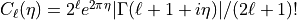
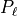
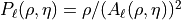
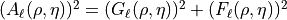
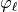
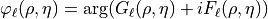
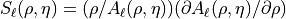

<!DOCTYPE html>

<html lang="en" data-content_root="../">
  <head>
    <meta charset="utf-8" />
    <meta name="viewport" content="width=device-width, initial-scale=1.0" /><meta name="viewport" content="width=device-width, initial-scale=1" />

    <title>fudge.processing.resonances package &#8212; Fudge and GNDS  documentation</title>
    <link rel="stylesheet" type="text/css" href="../_static/pygments.css?v=03e43079" />
    <link rel="stylesheet" type="text/css" href="../_static/basic.css?v=8203d6f3" />
    <link rel="stylesheet" type="text/css" href="../_static/alabaster.css?v=19b3dfee" />
    <link rel="stylesheet" type="text/css" href="../_static/graphviz.css?v=4ae1632d" />
    <script src="../_static/documentation_options.js?v=5929fcd5"></script>
    <script src="../_static/doctools.js?v=9bcbadda"></script>
    <script src="../_static/sphinx_highlight.js?v=dc90522c"></script>
    <link rel="icon" href="../_static/gnd-20121206-favicon.ico"/>
    <link rel="index" title="Index" href="../genindex.html" />
    <link rel="search" title="Search" href="../search.html" />
    <link rel="next" title="fudge.productData package" href="fudge.productData.html" />
    <link rel="prev" title="fudge.processing.montecarlo package" href="fudge.processing.montecarlo.html" />
   
  <link rel="stylesheet" href="../_static/custom.css" type="text/css" />
  

  
  

  </head><body>
  

    <div class="document">
      <div class="documentwrapper">
        <div class="bodywrapper">
          

          <div class="body" role="main">
            
  <section id="fudge-processing-resonances-package">
<h1>fudge.processing.resonances package<a class="headerlink" href="#fudge-processing-resonances-package" title="Link to this heading">¶</a></h1>
<section id="submodules">
<h2>Submodules<a class="headerlink" href="#submodules" title="Link to this heading">¶</a></h2>
</section>
<section id="module-fudge.processing.resonances.getCoulombWavefunctions">
<span id="fudge-processing-resonances-getcoulombwavefunctions-module"></span><h2>fudge.processing.resonances.getCoulombWavefunctions module<a class="headerlink" href="#module-fudge.processing.resonances.getCoulombWavefunctions" title="Link to this heading">¶</a></h2>
<dl class="py function">
<dt class="sig sig-object py" id="fudge.processing.resonances.getCoulombWavefunctions.coulombNormalizationFactor">
<span class="sig-prename descclassname"><span class="pre">fudge.processing.resonances.getCoulombWavefunctions.</span></span><span class="sig-name descname"><span class="pre">coulombNormalizationFactor</span></span><span class="sig-paren">(</span><em class="sig-param"><span class="n"><span class="pre">L</span></span></em>, <em class="sig-param"><span class="n"><span class="pre">eta</span></span></em><span class="sig-paren">)</span><a class="reference internal" href="../_modules/fudge/processing/resonances/getCoulombWavefunctions.html#coulombNormalizationFactor"><span class="viewcode-link"><span class="pre">[source]</span></span></a><a class="headerlink" href="#fudge.processing.resonances.getCoulombWavefunctions.coulombNormalizationFactor" title="Link to this definition">¶</a></dt>
<dd><p>Coulomb wavefunction normalization factor (see DLMF Eq. 33.2.5 or Abramowitz &amp; Stegun Eq. 14.1.7),
</p>
<p>Because we’re working with numpy arrays of  (for parallelization ala’ Caleb’s tricks), the logic
of numpy masked arrays is at work here to handle different regimes of eta.</p>
<dl class="field-list simple">
<dt class="field-odd">Parameters<span class="colon">:</span></dt>
<dd class="field-odd"><ul class="simple">
<li><p><strong>L</strong> (<em>int</em>) – the L to evaluate at</p></li>
<li><p><strong>eta</strong> (<em>numpy.array</em><em>(</em><em>type=float</em><em>)</em>) – array of  values</p></li>
</ul>
</dd>
<dt class="field-even">Returns<span class="colon">:</span></dt>
<dd class="field-even"><p>array of normalizations</p>
</dd>
<dt class="field-odd">Return type<span class="colon">:</span></dt>
<dd class="field-odd"><p>numpy.array(type=float)</p>
</dd>
</dl>
</dd></dl>

<dl class="py function">
<dt class="sig sig-object py" id="fudge.processing.resonances.getCoulombWavefunctions.coulombPenetrationFactor">
<span class="sig-prename descclassname"><span class="pre">fudge.processing.resonances.getCoulombWavefunctions.</span></span><span class="sig-name descname"><span class="pre">coulombPenetrationFactor</span></span><span class="sig-paren">(</span><em class="sig-param"><span class="n"><span class="pre">L</span></span></em>, <em class="sig-param"><span class="n"><span class="pre">rho</span></span></em>, <em class="sig-param"><span class="n"><span class="pre">eta</span></span></em><span class="sig-paren">)</span><a class="reference internal" href="../_modules/fudge/processing/resonances/getCoulombWavefunctions.html#coulombPenetrationFactor"><span class="viewcode-link"><span class="pre">[source]</span></span></a><a class="headerlink" href="#fudge.processing.resonances.getCoulombWavefunctions.coulombPenetrationFactor" title="Link to this definition">¶</a></dt>
<dd><p>Compute the Coulomb penetrability, ,

where </p>
<p>Because we’re working with numpy arrays of  (for parallelization ala’ Caleb’s tricks), the logic
of numpy masked arrays is at work here to handle different regimes of eta.</p>
<p>Here we use an external subroutine <cite>coulfg2</cite> from Thompson et al, converted to c and wrapped</p>
<dl class="field-list simple">
<dt class="field-odd">Parameters<span class="colon">:</span></dt>
<dd class="field-odd"><ul class="simple">
<li><p><strong>L</strong> (<em>int</em>) – the L to evaluate at</p></li>
<li><p><strong>rho</strong> (<em>numpy.array</em><em>(</em><em>type=float</em><em>)</em>) – array of  values</p></li>
<li><p><strong>eta</strong> (<em>numpy.array</em><em>(</em><em>type=float</em><em>)</em>) – array of  values</p></li>
</ul>
</dd>
<dt class="field-even">Returns<span class="colon">:</span></dt>
<dd class="field-even"><p>array of penetrabilities</p>
</dd>
<dt class="field-odd">Return type<span class="colon">:</span></dt>
<dd class="field-odd"><p>numpy.array(type=float)</p>
</dd>
</dl>
</dd></dl>

<dl class="py function">
<dt class="sig sig-object py" id="fudge.processing.resonances.getCoulombWavefunctions.coulombPhi">
<span class="sig-prename descclassname"><span class="pre">fudge.processing.resonances.getCoulombWavefunctions.</span></span><span class="sig-name descname"><span class="pre">coulombPhi</span></span><span class="sig-paren">(</span><em class="sig-param"><span class="n"><span class="pre">L</span></span></em>, <em class="sig-param"><span class="n"><span class="pre">rho</span></span></em>, <em class="sig-param"><span class="n"><span class="pre">eta</span></span></em><span class="sig-paren">)</span><a class="reference internal" href="../_modules/fudge/processing/resonances/getCoulombWavefunctions.html#coulombPhi"><span class="viewcode-link"><span class="pre">[source]</span></span></a><a class="headerlink" href="#fudge.processing.resonances.getCoulombWavefunctions.coulombPhi" title="Link to this definition">¶</a></dt>
<dd><p>Compute the Coulomb phase, , </p>
<p>Because we’re working with numpy arrays of  (for parallelization ala’ Caleb’s tricks), the logic
of numpy masked arrays is at work here to handle different regimes of eta.</p>
<p>Here we use an external subroutine ‘coulfg2’ from Thompson et al, converted to c and wrapped</p>
<dl class="field-list simple">
<dt class="field-odd">Parameters<span class="colon">:</span></dt>
<dd class="field-odd"><ul class="simple">
<li><p><strong>L</strong> (<em>int</em>) – the L to evaluate at</p></li>
<li><p><strong>rho</strong> (<em>numpy.array</em><em>(</em><em>type=float</em><em>)</em>) – array of  values</p></li>
<li><p><strong>eta</strong> (<em>numpy.array</em><em>(</em><em>type=float</em><em>)</em>) – array of  values</p></li>
</ul>
</dd>
<dt class="field-even">Returns<span class="colon">:</span></dt>
<dd class="field-even"><p>numpy.array(type=float) of phases</p>
</dd>
</dl>
</dd></dl>

<dl class="py function">
<dt class="sig sig-object py" id="fudge.processing.resonances.getCoulombWavefunctions.coulombShiftFactor">
<span class="sig-prename descclassname"><span class="pre">fudge.processing.resonances.getCoulombWavefunctions.</span></span><span class="sig-name descname"><span class="pre">coulombShiftFactor</span></span><span class="sig-paren">(</span><em class="sig-param"><span class="n"><span class="pre">L</span></span></em>, <em class="sig-param"><span class="n"><span class="pre">rho</span></span></em>, <em class="sig-param"><span class="n"><span class="pre">eta</span></span></em><span class="sig-paren">)</span><a class="reference internal" href="../_modules/fudge/processing/resonances/getCoulombWavefunctions.html#coulombShiftFactor"><span class="viewcode-link"><span class="pre">[source]</span></span></a><a class="headerlink" href="#fudge.processing.resonances.getCoulombWavefunctions.coulombShiftFactor" title="Link to this definition">¶</a></dt>
<dd><p>Compute the Coulomb shift, , 
where </p>
<p>Because we’re working with numpy arrays of  (for parallelization ala’ Caleb’s tricks), the logic
of numpy masked arrays is at work here to handle different regimes of eta.</p>
<p>Here we use an external subroutine ‘coulfg2’ from Thompson et al, converted to c and wrapped</p>
<dl class="field-list simple">
<dt class="field-odd">Parameters<span class="colon">:</span></dt>
<dd class="field-odd"><ul class="simple">
<li><p><strong>L</strong> (<em>int</em>) – the L to evaluate at</p></li>
<li><p><strong>rho</strong> (<em>numpy.array</em><em>(</em><em>type=float</em><em>)</em>) – array of  values</p></li>
<li><p><strong>eta</strong> (<em>numpy.array</em><em>(</em><em>type=float</em><em>)</em>) – array of  values</p></li>
</ul>
</dd>
<dt class="field-even">Returns<span class="colon">:</span></dt>
<dd class="field-even"><p>array of shifts</p>
</dd>
<dt class="field-odd">Return type<span class="colon">:</span></dt>
<dd class="field-odd"><p>numpy.array(type=float)</p>
</dd>
</dl>
</dd></dl>

<dl class="py function">
<dt class="sig sig-object py" id="fudge.processing.resonances.getCoulombWavefunctions.digamma">
<span class="sig-prename descclassname"><span class="pre">fudge.processing.resonances.getCoulombWavefunctions.</span></span><span class="sig-name descname"><span class="pre">digamma</span></span><span class="sig-paren">(</span><em class="sig-param"><span class="n"><span class="pre">n</span></span></em><span class="sig-paren">)</span><a class="reference internal" href="../_modules/fudge/processing/resonances/getCoulombWavefunctions.html#digamma"><span class="viewcode-link"><span class="pre">[source]</span></span></a><a class="headerlink" href="#fudge.processing.resonances.getCoulombWavefunctions.digamma" title="Link to this definition">¶</a></dt>
<dd><p>Simple digamma function, tested against A&amp;S tables in chapter 6, up to n=20
:param n: an integer
:return:</p>
</dd></dl>

<dl class="py function">
<dt class="sig sig-object py" id="fudge.processing.resonances.getCoulombWavefunctions.getCoulombWavefunctions">
<span class="sig-prename descclassname"><span class="pre">fudge.processing.resonances.getCoulombWavefunctions.</span></span><span class="sig-name descname"><span class="pre">getCoulombWavefunctions</span></span><span class="sig-paren">(</span><em class="sig-param"><span class="n"><span class="pre">rho</span></span></em>, <em class="sig-param"><span class="n"><span class="pre">eta</span></span></em>, <em class="sig-param"><span class="n"><span class="pre">L</span></span></em><span class="sig-paren">)</span><a class="reference internal" href="../_modules/fudge/processing/resonances/getCoulombWavefunctions.html#getCoulombWavefunctions"><span class="viewcode-link"><span class="pre">[source]</span></span></a><a class="headerlink" href="#fudge.processing.resonances.getCoulombWavefunctions.getCoulombWavefunctions" title="Link to this definition">¶</a></dt>
<dd></dd></dl>

<dl class="py function">
<dt class="sig sig-object py" id="fudge.processing.resonances.getCoulombWavefunctions.test_getCoulombWavefunctions">
<span class="sig-prename descclassname"><span class="pre">fudge.processing.resonances.getCoulombWavefunctions.</span></span><span class="sig-name descname"><span class="pre">test_getCoulombWavefunctions</span></span><span class="sig-paren">(</span><span class="sig-paren">)</span><a class="reference internal" href="../_modules/fudge/processing/resonances/getCoulombWavefunctions.html#test_getCoulombWavefunctions"><span class="viewcode-link"><span class="pre">[source]</span></span></a><a class="headerlink" href="#fudge.processing.resonances.getCoulombWavefunctions.test_getCoulombWavefunctions" title="Link to this definition">¶</a></dt>
<dd></dd></dl>

</section>
<section id="module-fudge.processing.resonances.getScatteringMatrices">
<span id="fudge-processing-resonances-getscatteringmatrices-module"></span><h2>fudge.processing.resonances.getScatteringMatrices module<a class="headerlink" href="#module-fudge.processing.resonances.getScatteringMatrices" title="Link to this heading">¶</a></h2>
<dl class="py function">
<dt class="sig sig-object py" id="fudge.processing.resonances.getScatteringMatrices.getScatteringMatrices">
<span class="sig-prename descclassname"><span class="pre">fudge.processing.resonances.getScatteringMatrices.</span></span><span class="sig-name descname"><span class="pre">getScatteringMatrices</span></span><span class="sig-paren">(</span><em class="sig-param"><span class="n"><span class="pre">E</span></span></em>, <em class="sig-param"><span class="n"><span class="pre">Eres</span></span></em>, <em class="sig-param"><span class="n"><span class="pre">captureWidth</span></span></em>, <em class="sig-param"><span class="n"><span class="pre">widths</span></span></em>, <em class="sig-param"><span class="n"><span class="pre">penetrabilities</span></span></em><span class="sig-paren">)</span><a class="reference internal" href="../_modules/fudge/processing/resonances/getScatteringMatrices.html#getScatteringMatrices"><span class="viewcode-link"><span class="pre">[source]</span></span></a><a class="headerlink" href="#fudge.processing.resonances.getScatteringMatrices.getScatteringMatrices" title="Link to this definition">¶</a></dt>
<dd></dd></dl>

</section>
<section id="module-fudge.processing.resonances.reconstructResonances">
<span id="fudge-processing-resonances-reconstructresonances-module"></span><h2>fudge.processing.resonances.reconstructResonances module<a class="headerlink" href="#module-fudge.processing.resonances.reconstructResonances" title="Link to this heading">¶</a></h2>
<p>See ENDF-102 (endf documentation) appendix D for equations</p>
<section id="basic-usage">
<h3>Basic usage:<a class="headerlink" href="#basic-usage" title="Link to this heading">¶</a></h3>
<blockquote>
<div><p>if protare is a reactionSuite instance,:</p>
<div class="highlight-default notranslate"><div class="highlight"><pre><span></span><span class="o">&gt;&gt;</span><span class="n">protare</span><span class="o">.</span><span class="n">reconstructResonances</span><span class="p">(</span><span class="n">tolerance</span><span class="o">=</span><span class="mf">0.01</span><span class="p">)</span>
</pre></div>
</div>
<p>This reconstructs all resolved/unresolved resonance sections. In each section,
the results are accurate under linear interpolation to tolerance of 1% or better.
Sections are summed together and then added to the appropriate background cross
sections to form new pointwise, lin-lin cross sections that are stored in the
appropriate reaction inside protare.</p>
</div></blockquote>
</section>
<section id="alternate-uses">
<h3>Alternate uses:<a class="headerlink" href="#alternate-uses" title="Link to this heading">¶</a></h3>
<blockquote>
<div><p>You can skip the final step (adding background cross sections) and just get the
resonance parameter contribution to the cross section by doing:</p>
<div class="highlight-default notranslate"><div class="highlight"><pre><span></span><span class="o">&gt;&gt;</span><span class="n">xsecs</span> <span class="o">=</span> <span class="n">reconstructResonances</span><span class="o">.</span><span class="n">reconstructResonances</span><span class="p">(</span><span class="n">protare</span><span class="p">,</span> <span class="mf">0.01</span><span class="p">)</span>
</pre></div>
</div>
<p>Here,:</p>
<div class="highlight-default notranslate"><div class="highlight"><pre><span></span><span class="o">*</span> <span class="n">xsecs</span> <span class="o">=</span> <span class="n">dictionary</span> <span class="n">containing</span> <span class="n">cross</span> <span class="n">sections</span><span class="p">:</span> <span class="p">{</span><span class="s1">&#39;total&#39;</span><span class="p">:</span><span class="n">XYs</span><span class="p">,</span> <span class="s1">&#39;elastic&#39;</span><span class="p">:</span><span class="n">XYs</span><span class="p">,</span> <span class="o">...</span><span class="p">}</span>
</pre></div>
</div>
<p>each cross section is an XYs class instance, containing data and also axes with units</p>
<p>Another option would be to only reconstruct a single section:</p>
<div class="highlight-default notranslate"><div class="highlight"><pre><span></span><span class="o">&gt;&gt;</span> <span class="n">resCls</span> <span class="o">=</span> <span class="n">reconstructResonances</span><span class="o">.</span><span class="n">RMcrossSection</span><span class="p">(</span><span class="n">protare</span><span class="p">,</span> <span class="n">energyUnit</span><span class="o">=</span><span class="s1">&#39;eV&#39;</span><span class="p">)</span>   <span class="c1"># for Reich_Moore</span>
<span class="o">&gt;&gt;</span> <span class="n">energy_grid</span> <span class="o">=</span> <span class="n">s</span><span class="o">.</span><span class="n">generateEnergyGrid</span><span class="p">()</span>
<span class="o">&gt;&gt;</span> <span class="n">crossSections</span> <span class="o">=</span> <span class="n">s</span><span class="o">.</span><span class="n">getCrossSection</span><span class="p">(</span> <span class="n">energy_grid</span> <span class="p">)</span>
<span class="c1"># the input to getCrossSection is the energy (or list of energies) in self.energyUnit</span>
<span class="c1"># crossSections are returned as a dictionary {&#39;total&#39;:,&#39;elastic&#39;:,&#39;capture&#39;:,&#39;fission&#39;:,}</span>

<span class="c1"># improve grid to desired tolerance for linear interpolation:</span>
<span class="o">&gt;&gt;</span> <span class="n">new_energy_grid</span><span class="p">,</span> <span class="n">new_crossSections</span><span class="p">,</span> <span class="n">messages</span> <span class="o">=</span> <span class="n">s</span><span class="o">.</span><span class="n">refineInterpolation</span><span class="p">(</span><span class="n">energy_grid</span><span class="p">,</span> <span class="n">crossSections</span><span class="p">,</span> <span class="n">tolerance</span><span class="o">=</span><span class="mf">0.01</span><span class="p">)</span>
</pre></div>
</div>
</div></blockquote>
</section>
<dl class="py class">
<dt class="sig sig-object py" id="fudge.processing.resonances.reconstructResonances.ChannelDesignator">
<em class="property"><span class="k"><span class="pre">class</span></span><span class="w"> </span></em><span class="sig-prename descclassname"><span class="pre">fudge.processing.resonances.reconstructResonances.</span></span><span class="sig-name descname"><span class="pre">ChannelDesignator</span></span><span class="sig-paren">(</span><em class="sig-param"><span class="n"><span class="pre">l</span></span></em>, <em class="sig-param"><span class="n"><span class="pre">J</span></span></em>, <em class="sig-param"><span class="n"><span class="pre">reaction</span></span></em>, <em class="sig-param"><span class="n"><span class="pre">index</span></span></em>, <em class="sig-param"><span class="n"><span class="pre">s</span></span></em>, <em class="sig-param"><span class="n"><span class="pre">gfact</span></span><span class="o"><span class="pre">=</span></span><span class="default_value"><span class="pre">None</span></span></em>, <em class="sig-param"><span class="n"><span class="pre">particleA</span></span><span class="o"><span class="pre">=</span></span><span class="default_value"><span class="pre">None</span></span></em>, <em class="sig-param"><span class="n"><span class="pre">particleB</span></span><span class="o"><span class="pre">=</span></span><span class="default_value"><span class="pre">None</span></span></em>, <em class="sig-param"><span class="n"><span class="pre">Xi</span></span><span class="o"><span class="pre">=</span></span><span class="default_value"><span class="pre">0.0</span></span></em>, <em class="sig-param"><span class="n"><span class="pre">isElastic</span></span><span class="o"><span class="pre">=</span></span><span class="default_value"><span class="pre">None</span></span></em>, <em class="sig-param"><span class="n"><span class="pre">channelClass</span></span><span class="o"><span class="pre">=</span></span><span class="default_value"><span class="pre">None</span></span></em>, <em class="sig-param"><span class="n"><span class="pre">useRelativistic</span></span><span class="o"><span class="pre">=</span></span><span class="default_value"><span class="pre">False</span></span></em>, <em class="sig-param"><span class="n"><span class="pre">eliminated</span></span><span class="o"><span class="pre">=</span></span><span class="default_value"><span class="pre">False</span></span></em>, <em class="sig-param"><span class="n"><span class="pre">externalRMatrix</span></span><span class="o"><span class="pre">=</span></span><span class="default_value"><span class="pre">None</span></span></em><span class="sig-paren">)</span><a class="reference internal" href="../_modules/fudge/processing/resonances/reconstructResonances.html#ChannelDesignator"><span class="viewcode-link"><span class="pre">[source]</span></span></a><a class="headerlink" href="#fudge.processing.resonances.reconstructResonances.ChannelDesignator" title="Link to this definition">¶</a></dt>
<dd><p>Bases: <code class="xref py py-class docutils literal notranslate"><span class="pre">object</span></code></p>
<dl class="py attribute">
<dt class="sig sig-object py" id="fudge.processing.resonances.reconstructResonances.ChannelDesignator.J">
<span class="sig-name descname"><span class="pre">J</span></span><a class="headerlink" href="#fudge.processing.resonances.reconstructResonances.ChannelDesignator.J" title="Link to this definition">¶</a></dt>
<dd></dd></dl>

<dl class="py attribute">
<dt class="sig sig-object py" id="fudge.processing.resonances.reconstructResonances.ChannelDesignator.Xi">
<span class="sig-name descname"><span class="pre">Xi</span></span><a class="headerlink" href="#fudge.processing.resonances.reconstructResonances.ChannelDesignator.Xi" title="Link to this definition">¶</a></dt>
<dd></dd></dl>

<dl class="py attribute">
<dt class="sig sig-object py" id="fudge.processing.resonances.reconstructResonances.ChannelDesignator.channelClass">
<span class="sig-name descname"><span class="pre">channelClass</span></span><a class="headerlink" href="#fudge.processing.resonances.reconstructResonances.ChannelDesignator.channelClass" title="Link to this definition">¶</a></dt>
<dd></dd></dl>

<dl class="py attribute">
<dt class="sig sig-object py" id="fudge.processing.resonances.reconstructResonances.ChannelDesignator.eliminated">
<span class="sig-name descname"><span class="pre">eliminated</span></span><a class="headerlink" href="#fudge.processing.resonances.reconstructResonances.ChannelDesignator.eliminated" title="Link to this definition">¶</a></dt>
<dd></dd></dl>

<dl class="py attribute">
<dt class="sig sig-object py" id="fudge.processing.resonances.reconstructResonances.ChannelDesignator.externalRMatrix">
<span class="sig-name descname"><span class="pre">externalRMatrix</span></span><a class="headerlink" href="#fudge.processing.resonances.reconstructResonances.ChannelDesignator.externalRMatrix" title="Link to this definition">¶</a></dt>
<dd></dd></dl>

<dl class="py attribute">
<dt class="sig sig-object py" id="fudge.processing.resonances.reconstructResonances.ChannelDesignator.gfact">
<span class="sig-name descname"><span class="pre">gfact</span></span><a class="headerlink" href="#fudge.processing.resonances.reconstructResonances.ChannelDesignator.gfact" title="Link to this definition">¶</a></dt>
<dd></dd></dl>

<dl class="py method">
<dt class="sig sig-object py" id="fudge.processing.resonances.reconstructResonances.ChannelDesignator.has_same_J">
<span class="sig-name descname"><span class="pre">has_same_J</span></span><span class="sig-paren">(</span><em class="sig-param"><span class="n"><span class="pre">other</span></span></em><span class="sig-paren">)</span><a class="reference internal" href="../_modules/fudge/processing/resonances/reconstructResonances.html#ChannelDesignator.has_same_J"><span class="viewcode-link"><span class="pre">[source]</span></span></a><a class="headerlink" href="#fudge.processing.resonances.reconstructResonances.ChannelDesignator.has_same_J" title="Link to this definition">¶</a></dt>
<dd></dd></dl>

<dl class="py attribute">
<dt class="sig sig-object py" id="fudge.processing.resonances.reconstructResonances.ChannelDesignator.index">
<span class="sig-name descname"><span class="pre">index</span></span><a class="headerlink" href="#fudge.processing.resonances.reconstructResonances.ChannelDesignator.index" title="Link to this definition">¶</a></dt>
<dd></dd></dl>

<dl class="py attribute">
<dt class="sig sig-object py" id="fudge.processing.resonances.reconstructResonances.ChannelDesignator.isElastic">
<span class="sig-name descname"><span class="pre">isElastic</span></span><a class="headerlink" href="#fudge.processing.resonances.reconstructResonances.ChannelDesignator.isElastic" title="Link to this definition">¶</a></dt>
<dd></dd></dl>

<dl class="py method">
<dt class="sig sig-object py" id="fudge.processing.resonances.reconstructResonances.ChannelDesignator.is_open">
<span class="sig-name descname"><span class="pre">is_open</span></span><span class="sig-paren">(</span><em class="sig-param"><span class="n"><span class="pre">Ein</span></span></em><span class="sig-paren">)</span><a class="reference internal" href="../_modules/fudge/processing/resonances/reconstructResonances.html#ChannelDesignator.is_open"><span class="viewcode-link"><span class="pre">[source]</span></span></a><a class="headerlink" href="#fudge.processing.resonances.reconstructResonances.ChannelDesignator.is_open" title="Link to this definition">¶</a></dt>
<dd></dd></dl>

<dl class="py attribute">
<dt class="sig sig-object py" id="fudge.processing.resonances.reconstructResonances.ChannelDesignator.l">
<span class="sig-name descname"><span class="pre">l</span></span><a class="headerlink" href="#fudge.processing.resonances.reconstructResonances.ChannelDesignator.l" title="Link to this definition">¶</a></dt>
<dd></dd></dl>

<dl class="py attribute">
<dt class="sig sig-object py" id="fudge.processing.resonances.reconstructResonances.ChannelDesignator.particleA">
<span class="sig-name descname"><span class="pre">particleA</span></span><a class="headerlink" href="#fudge.processing.resonances.reconstructResonances.ChannelDesignator.particleA" title="Link to this definition">¶</a></dt>
<dd></dd></dl>

<dl class="py attribute">
<dt class="sig sig-object py" id="fudge.processing.resonances.reconstructResonances.ChannelDesignator.particleB">
<span class="sig-name descname"><span class="pre">particleB</span></span><a class="headerlink" href="#fudge.processing.resonances.reconstructResonances.ChannelDesignator.particleB" title="Link to this definition">¶</a></dt>
<dd></dd></dl>

<dl class="py attribute">
<dt class="sig sig-object py" id="fudge.processing.resonances.reconstructResonances.ChannelDesignator.reaction">
<span class="sig-name descname"><span class="pre">reaction</span></span><a class="headerlink" href="#fudge.processing.resonances.reconstructResonances.ChannelDesignator.reaction" title="Link to this definition">¶</a></dt>
<dd></dd></dl>

<dl class="py attribute">
<dt class="sig sig-object py" id="fudge.processing.resonances.reconstructResonances.ChannelDesignator.s">
<span class="sig-name descname"><span class="pre">s</span></span><a class="headerlink" href="#fudge.processing.resonances.reconstructResonances.ChannelDesignator.s" title="Link to this definition">¶</a></dt>
<dd></dd></dl>

<dl class="py attribute">
<dt class="sig sig-object py" id="fudge.processing.resonances.reconstructResonances.ChannelDesignator.useRelativistic">
<span class="sig-name descname"><span class="pre">useRelativistic</span></span><a class="headerlink" href="#fudge.processing.resonances.reconstructResonances.ChannelDesignator.useRelativistic" title="Link to this definition">¶</a></dt>
<dd></dd></dl>

</dd></dl>

<dl class="py class">
<dt class="sig sig-object py" id="fudge.processing.resonances.reconstructResonances.MLBWcrossSection">
<em class="property"><span class="k"><span class="pre">class</span></span><span class="w"> </span></em><span class="sig-prename descclassname"><span class="pre">fudge.processing.resonances.reconstructResonances.</span></span><span class="sig-name descname"><span class="pre">MLBWcrossSection</span></span><span class="sig-paren">(</span><em class="sig-param"><span class="n"><span class="pre">BreitWignerForm</span></span></em>, <em class="sig-param"><span class="n"><span class="pre">enableAngDists</span></span><span class="o"><span class="pre">=</span></span><span class="default_value"><span class="pre">False</span></span></em>, <em class="sig-param"><span class="n"><span class="pre">verbose</span></span><span class="o"><span class="pre">=</span></span><span class="default_value"><span class="pre">True</span></span></em>, <em class="sig-param"><span class="o"><span class="pre">**</span></span><span class="n"><span class="pre">kw</span></span></em><span class="sig-paren">)</span><a class="reference internal" href="../_modules/fudge/processing/resonances/reconstructResonances.html#MLBWcrossSection"><span class="viewcode-link"><span class="pre">[source]</span></span></a><a class="headerlink" href="#fudge.processing.resonances.reconstructResonances.MLBWcrossSection" title="Link to this definition">¶</a></dt>
<dd><p>Bases: <a class="reference internal" href="#fudge.processing.resonances.reconstructResonances.RRBaseClass" title="fudge.processing.resonances.reconstructResonances.RRBaseClass"><code class="xref py py-class docutils literal notranslate"><span class="pre">RRBaseClass</span></code></a></p>
<p>Resonance reconstructor for Multi-level Breit-Wigner parameters.
Only the elastic channel differs from SLBW.</p>
<dl class="py method">
<dt class="sig sig-object py" id="fudge.processing.resonances.reconstructResonances.MLBWcrossSection.getChannelConstantsBc">
<span class="sig-name descname"><span class="pre">getChannelConstantsBc</span></span><span class="sig-paren">(</span><span class="sig-paren">)</span><a class="reference internal" href="../_modules/fudge/processing/resonances/reconstructResonances.html#MLBWcrossSection.getChannelConstantsBc"><span class="viewcode-link"><span class="pre">[source]</span></span></a><a class="headerlink" href="#fudge.processing.resonances.reconstructResonances.MLBWcrossSection.getChannelConstantsBc" title="Link to this definition">¶</a></dt>
<dd><p>For ENDF’s MLBW, should be 
where  is the channel angular momentum and  is the resonances index for the channel</p>
</dd></dl>

<dl class="py method">
<dt class="sig sig-object py" id="fudge.processing.resonances.reconstructResonances.MLBWcrossSection.getCrossSection">
<span class="sig-name descname"><span class="pre">getCrossSection</span></span><span class="sig-paren">(</span><em class="sig-param"><span class="n"><span class="pre">E</span></span></em>, <em class="sig-param"><span class="o"><span class="pre">**</span></span><span class="n"><span class="pre">kwargs</span></span></em><span class="sig-paren">)</span><a class="reference internal" href="../_modules/fudge/processing/resonances/reconstructResonances.html#MLBWcrossSection.getCrossSection"><span class="viewcode-link"><span class="pre">[source]</span></span></a><a class="headerlink" href="#fudge.processing.resonances.reconstructResonances.MLBWcrossSection.getCrossSection" title="Link to this definition">¶</a></dt>
<dd></dd></dl>

<dl class="py method">
<dt class="sig sig-object py" id="fudge.processing.resonances.reconstructResonances.MLBWcrossSection.getScatteringMatrixU">
<span class="sig-name descname"><span class="pre">getScatteringMatrixU</span></span><span class="sig-paren">(</span><em class="sig-param"><span class="n"><span class="pre">Ein</span></span></em>, <em class="sig-param"><span class="n"><span class="pre">useTabulatedScatteringRadius</span></span><span class="o"><span class="pre">=</span></span><span class="default_value"><span class="pre">True</span></span></em>, <em class="sig-param"><span class="n"><span class="pre">enableExtraCoulombPhase</span></span><span class="o"><span class="pre">=</span></span><span class="default_value"><span class="pre">False</span></span></em><span class="sig-paren">)</span><a class="reference internal" href="../_modules/fudge/processing/resonances/reconstructResonances.html#MLBWcrossSection.getScatteringMatrixU"><span class="viewcode-link"><span class="pre">[source]</span></span></a><a class="headerlink" href="#fudge.processing.resonances.reconstructResonances.MLBWcrossSection.getScatteringMatrixU" title="Link to this definition">¶</a></dt>
<dd><p>Compute the scattering matrix.  We could have used the generic U function in the base class,
but Froehner has “simplifications” that we took advantage of here (that and I don’t know what the
R matrix is exactly in the case of MLBW).</p>
<dl class="field-list simple">
<dt class="field-odd">Parameters<span class="colon">:</span></dt>
<dd class="field-odd"><ul class="simple">
<li><p><strong>Ein</strong> – numpy.array(type=float)</p></li>
<li><p><strong>useTabulatedScatteringRadius</strong> (<em>boolean</em>)</p></li>
<li><p><strong>enableExtraCoulombPhase</strong> (<em>boolean</em>)</p></li>
</ul>
</dd>
<dt class="field-even">Returns<span class="colon">:</span></dt>
<dd class="field-even"><p></p>
</dd>
</dl>
</dd></dl>

</dd></dl>

<dl class="py class">
<dt class="sig sig-object py" id="fudge.processing.resonances.reconstructResonances.RMatrixLimitedcrossSection">
<em class="property"><span class="k"><span class="pre">class</span></span><span class="w"> </span></em><span class="sig-prename descclassname"><span class="pre">fudge.processing.resonances.reconstructResonances.</span></span><span class="sig-name descname"><span class="pre">RMatrixLimitedcrossSection</span></span><span class="sig-paren">(</span><em class="sig-param"><span class="n"><span class="pre">RMatrixForm</span></span></em>, <em class="sig-param"><span class="n"><span class="pre">enableAngDists</span></span><span class="o"><span class="pre">=</span></span><span class="default_value"><span class="pre">False</span></span></em>, <em class="sig-param"><span class="n"><span class="pre">verbose</span></span><span class="o"><span class="pre">=</span></span><span class="default_value"><span class="pre">True</span></span></em>, <em class="sig-param"><span class="o"><span class="pre">**</span></span><span class="n"><span class="pre">kw</span></span></em><span class="sig-paren">)</span><a class="reference internal" href="../_modules/fudge/processing/resonances/reconstructResonances.html#RMatrixLimitedcrossSection"><span class="viewcode-link"><span class="pre">[source]</span></span></a><a class="headerlink" href="#fudge.processing.resonances.reconstructResonances.RMatrixLimitedcrossSection" title="Link to this definition">¶</a></dt>
<dd><p>Bases: <a class="reference internal" href="#fudge.processing.resonances.reconstructResonances.RRBaseClass" title="fudge.processing.resonances.reconstructResonances.RRBaseClass"><code class="xref py py-class docutils literal notranslate"><span class="pre">RRBaseClass</span></code></a></p>
<p>extended Reich_Moore (LRF=7 in ENDF)
Here, resonances are sorted primarily by J: within each ‘spin group’, total J is conserved
One or more competitive channels may be used in this case.
Also, each resonance may have contributions from multiple l-waves</p>
<dl class="py method">
<dt class="sig sig-object py" id="fudge.processing.resonances.reconstructResonances.RMatrixLimitedcrossSection.eta">
<span class="sig-name descname"><span class="pre">eta</span></span><span class="sig-paren">(</span><em class="sig-param"><span class="n"><span class="pre">Ex</span></span></em>, <em class="sig-param"><span class="n"><span class="pre">pA</span></span></em>, <em class="sig-param"><span class="n"><span class="pre">pB</span></span></em><span class="sig-paren">)</span><a class="reference internal" href="../_modules/fudge/processing/resonances/reconstructResonances.html#RMatrixLimitedcrossSection.eta"><span class="viewcode-link"><span class="pre">[source]</span></span></a><a class="headerlink" href="#fudge.processing.resonances.reconstructResonances.RMatrixLimitedcrossSection.eta" title="Link to this definition">¶</a></dt>
<dd><p>eta, the  Sommerfeld parameter, given by </p>
<p>for competitive channels with 2 charged particles, parameter eta is used to find penetrability.
eta is given in eq D.79 of ENDF manual and $e^2$ is the fine structure constant $lpha$ and
$m_{red}$ is the reduced mass.  eta is dimensionless.</p>
<dl class="field-list simple">
<dt class="field-odd">Parameters<span class="colon">:</span></dt>
<dd class="field-odd"><ul class="simple">
<li><p><strong>Ex</strong> – The incident energy</p></li>
<li><p><strong>pA</strong> – particle A</p></li>
<li><p><strong>pB</strong> – particle B</p></li>
</ul>
</dd>
<dt class="field-even">Returns<span class="colon">:</span></dt>
<dd class="field-even"><p>the Sommerfeld parameter [dimensionless]</p>
</dd>
</dl>
</dd></dl>

<dl class="py method">
<dt class="sig sig-object py" id="fudge.processing.resonances.reconstructResonances.RMatrixLimitedcrossSection.getAPByChannel">
<span class="sig-name descname"><span class="pre">getAPByChannel</span></span><span class="sig-paren">(</span><em class="sig-param"><span class="n"><span class="pre">c</span></span></em>, <em class="sig-param"><span class="n"><span class="pre">trueOrEffective</span></span><span class="o"><span class="pre">=</span></span><span class="default_value"><span class="pre">'true'</span></span></em><span class="sig-paren">)</span><a class="reference internal" href="../_modules/fudge/processing/resonances/reconstructResonances.html#RMatrixLimitedcrossSection.getAPByChannel"><span class="viewcode-link"><span class="pre">[source]</span></span></a><a class="headerlink" href="#fudge.processing.resonances.reconstructResonances.RMatrixLimitedcrossSection.getAPByChannel" title="Link to this definition">¶</a></dt>
<dd><p>get the channel radius, rho. If L is specified try to get L-dependent value</p>
</dd></dl>

<dl class="py method">
<dt class="sig sig-object py" id="fudge.processing.resonances.reconstructResonances.RMatrixLimitedcrossSection.getChannelConstantsBc">
<span class="sig-name descname"><span class="pre">getChannelConstantsBc</span></span><span class="sig-paren">(</span><span class="sig-paren">)</span><a class="reference internal" href="../_modules/fudge/processing/resonances/reconstructResonances.html#RMatrixLimitedcrossSection.getChannelConstantsBc"><span class="viewcode-link"><span class="pre">[source]</span></span></a><a class="headerlink" href="#fudge.processing.resonances.reconstructResonances.RMatrixLimitedcrossSection.getChannelConstantsBc" title="Link to this definition">¶</a></dt>
<dd><p>For ENDF’s Reich-Moore, should be 
where  is the channel angular momentum, but the ENDF manual says nothing about it.</p>
<p>There is a per-channel parameter BCH that we will interpret as </p>
</dd></dl>

<dl class="py method">
<dt class="sig sig-object py" id="fudge.processing.resonances.reconstructResonances.RMatrixLimitedcrossSection.getChannelScatteringRadiiEffective">
<span class="sig-name descname"><span class="pre">getChannelScatteringRadiiEffective</span></span><span class="sig-paren">(</span><span class="sig-paren">)</span><a class="reference internal" href="../_modules/fudge/processing/resonances/reconstructResonances.html#RMatrixLimitedcrossSection.getChannelScatteringRadiiEffective"><span class="viewcode-link"><span class="pre">[source]</span></span></a><a class="headerlink" href="#fudge.processing.resonances.reconstructResonances.RMatrixLimitedcrossSection.getChannelScatteringRadiiEffective" title="Link to this definition">¶</a></dt>
<dd></dd></dl>

<dl class="py method">
<dt class="sig sig-object py" id="fudge.processing.resonances.reconstructResonances.RMatrixLimitedcrossSection.getChannelScatteringRadiiTrue">
<span class="sig-name descname"><span class="pre">getChannelScatteringRadiiTrue</span></span><span class="sig-paren">(</span><span class="sig-paren">)</span><a class="reference internal" href="../_modules/fudge/processing/resonances/reconstructResonances.html#RMatrixLimitedcrossSection.getChannelScatteringRadiiTrue"><span class="viewcode-link"><span class="pre">[source]</span></span></a><a class="headerlink" href="#fudge.processing.resonances.reconstructResonances.RMatrixLimitedcrossSection.getChannelScatteringRadiiTrue" title="Link to this definition">¶</a></dt>
<dd></dd></dl>

<dl class="py method">
<dt class="sig sig-object py" id="fudge.processing.resonances.reconstructResonances.RMatrixLimitedcrossSection.getCrossSection">
<span class="sig-name descname"><span class="pre">getCrossSection</span></span><span class="sig-paren">(</span><em class="sig-param"><span class="n"><span class="pre">E</span></span></em>, <em class="sig-param"><span class="o"><span class="pre">**</span></span><span class="n"><span class="pre">kwargs</span></span></em><span class="sig-paren">)</span><a class="reference internal" href="../_modules/fudge/processing/resonances/reconstructResonances.html#RMatrixLimitedcrossSection.getCrossSection"><span class="viewcode-link"><span class="pre">[source]</span></span></a><a class="headerlink" href="#fudge.processing.resonances.reconstructResonances.RMatrixLimitedcrossSection.getCrossSection" title="Link to this definition">¶</a></dt>
<dd></dd></dl>

<dl class="py method">
<dt class="sig sig-object py" id="fudge.processing.resonances.reconstructResonances.RMatrixLimitedcrossSection.getEiPhis">
<span class="sig-name descname"><span class="pre">getEiPhis</span></span><span class="sig-paren">(</span><em class="sig-param"><span class="n"><span class="pre">Ein</span></span></em>, <em class="sig-param"><span class="n"><span class="pre">useTabulatedScatteringRadius</span></span><span class="o"><span class="pre">=</span></span><span class="default_value"><span class="pre">None</span></span></em>, <em class="sig-param"><span class="n"><span class="pre">enableExtraCoulombPhase</span></span><span class="o"><span class="pre">=</span></span><span class="default_value"><span class="pre">False</span></span></em><span class="sig-paren">)</span><a class="reference internal" href="../_modules/fudge/processing/resonances/reconstructResonances.html#RMatrixLimitedcrossSection.getEiPhis"><span class="viewcode-link"><span class="pre">[source]</span></span></a><a class="headerlink" href="#fudge.processing.resonances.reconstructResonances.RMatrixLimitedcrossSection.getEiPhis" title="Link to this definition">¶</a></dt>
<dd><p>The phase factor for the collision matrix, </p>
<dl class="field-list simple">
<dt class="field-odd">Parameters<span class="colon">:</span></dt>
<dd class="field-odd"><ul class="simple">
<li><p><strong>Ein</strong> (<em>numpy.array</em><em>(</em><em>type=float</em><em>)</em>)</p></li>
<li><p><strong>useTabulatedScatteringRadius</strong> (<em>bool</em>)</p></li>
<li><p><strong>enableExtraCoulombPhase</strong> (<em>bool</em>)</p></li>
</ul>
</dd>
<dt class="field-even">Returns<span class="colon">:</span></dt>
<dd class="field-even"><p></p>
</dd>
<dt class="field-odd">Return type<span class="colon">:</span></dt>
<dd class="field-odd"><p></p>
</dd>
</dl>
</dd></dl>

<dl class="py method">
<dt class="sig sig-object py" id="fudge.processing.resonances.reconstructResonances.RMatrixLimitedcrossSection.getL0Matrix">
<span class="sig-name descname"><span class="pre">getL0Matrix</span></span><span class="sig-paren">(</span><em class="sig-param"><span class="n"><span class="pre">Ein</span></span></em><span class="sig-paren">)</span><a class="reference internal" href="../_modules/fudge/processing/resonances/reconstructResonances.html#RMatrixLimitedcrossSection.getL0Matrix"><span class="viewcode-link"><span class="pre">[source]</span></span></a><a class="headerlink" href="#fudge.processing.resonances.reconstructResonances.RMatrixLimitedcrossSection.getL0Matrix" title="Link to this definition">¶</a></dt>
<dd><p>Get the  matrix of Froehner, 
where </p>
</dd></dl>

<dl class="py method">
<dt class="sig sig-object py" id="fudge.processing.resonances.reconstructResonances.RMatrixLimitedcrossSection.getLMax">
<span class="sig-name descname"><span class="pre">getLMax</span></span><span class="sig-paren">(</span><em class="sig-param"><span class="n"><span class="pre">maxLmax</span></span><span class="o"><span class="pre">=</span></span><span class="default_value"><span class="pre">10</span></span></em><span class="sig-paren">)</span><a class="reference internal" href="../_modules/fudge/processing/resonances/reconstructResonances.html#RMatrixLimitedcrossSection.getLMax"><span class="viewcode-link"><span class="pre">[source]</span></span></a><a class="headerlink" href="#fudge.processing.resonances.reconstructResonances.RMatrixLimitedcrossSection.getLMax" title="Link to this definition">¶</a></dt>
<dd><p>LMax is determined by the behavior of the Blatt-Biedenharn Zbar coefficients.  Inside each one, there is
a Racah coefficient and a Clebsh-Gordon coefficient.  The CG coefficient looks like this:</p>
<div class="highlight-default notranslate"><div class="highlight"><pre><span></span><span class="p">(</span> <span class="n">l1</span> <span class="n">l2</span>  <span class="n">L</span> <span class="p">)</span>
<span class="p">(</span>  <span class="mi">0</span>  <span class="mi">0</span>  <span class="mi">0</span> <span class="p">)</span>
</pre></div>
</div>
<p>So, this means two things.  First, the CG coeff (and hence Zbar) will be zero if l1+l2+L=odd.
Second, the maximum value of L will be l1max+l2max.  Hence, Lmax=2*lmax.</p>
</dd></dl>

<dl class="py method">
<dt class="sig sig-object py" id="fudge.processing.resonances.reconstructResonances.RMatrixLimitedcrossSection.getRMatrix">
<span class="sig-name descname"><span class="pre">getRMatrix</span></span><span class="sig-paren">(</span><em class="sig-param"><span class="n"><span class="pre">Ein</span></span></em><span class="sig-paren">)</span><a class="reference internal" href="../_modules/fudge/processing/resonances/reconstructResonances.html#RMatrixLimitedcrossSection.getRMatrix"><span class="viewcode-link"><span class="pre">[source]</span></span></a><a class="headerlink" href="#fudge.processing.resonances.reconstructResonances.RMatrixLimitedcrossSection.getRMatrix" title="Link to this definition">¶</a></dt>
<dd><p>The R matrix in the Reich-Moore approximation is
</p>
<dl class="field-list simple">
<dt class="field-odd">Parameters<span class="colon">:</span></dt>
<dd class="field-odd"><p><strong>Ein</strong> (<em>numpy.array</em><em>(</em><em>type=float</em><em>)</em>)</p>
</dd>
<dt class="field-even">Returns<span class="colon">:</span></dt>
<dd class="field-even"><p></p>
</dd>
<dt class="field-odd">Return type<span class="colon">:</span></dt>
<dd class="field-odd"><p></p>
</dd>
</dl>
</dd></dl>

<dl class="py method">
<dt class="sig sig-object py" id="fudge.processing.resonances.reconstructResonances.RMatrixLimitedcrossSection.getScatteringMatrixT">
<span class="sig-name descname"><span class="pre">getScatteringMatrixT</span></span><span class="sig-paren">(</span><em class="sig-param"><span class="n"><span class="pre">Ein</span></span></em>, <em class="sig-param"><span class="n"><span class="pre">useTabulatedScatteringRadius</span></span><span class="o"><span class="pre">=</span></span><span class="default_value"><span class="pre">True</span></span></em>, <em class="sig-param"><span class="n"><span class="pre">enableExtraCoulombPhase</span></span><span class="o"><span class="pre">=</span></span><span class="default_value"><span class="pre">False</span></span></em><span class="sig-paren">)</span><a class="reference internal" href="../_modules/fudge/processing/resonances/reconstructResonances.html#RMatrixLimitedcrossSection.getScatteringMatrixT"><span class="viewcode-link"><span class="pre">[source]</span></span></a><a class="headerlink" href="#fudge.processing.resonances.reconstructResonances.RMatrixLimitedcrossSection.getScatteringMatrixT" title="Link to this definition">¶</a></dt>
<dd><dl class="field-list simple">
<dt class="field-odd">Parameters<span class="colon">:</span></dt>
<dd class="field-odd"><ul class="simple">
<li><p><strong>Ein</strong> (<em>numpy.array</em><em>(</em><em>type=float</em><em>)</em>)</p></li>
<li><p><strong>useTabulatedScatteringRadius</strong> (<em>bool</em>)</p></li>
<li><p><strong>enableExtraCoulombPhase</strong> (<em>bool</em>)</p></li>
</ul>
</dd>
<dt class="field-even">Returns<span class="colon">:</span></dt>
<dd class="field-even"><p></p>
</dd>
<dt class="field-odd">Return type<span class="colon">:</span></dt>
<dd class="field-odd"><p></p>
</dd>
</dl>
</dd></dl>

<dl class="py method">
<dt class="sig sig-object py" id="fudge.processing.resonances.reconstructResonances.RMatrixLimitedcrossSection.isElastic">
<span class="sig-name descname"><span class="pre">isElastic</span></span><span class="sig-paren">(</span><em class="sig-param"><span class="n"><span class="pre">reactionDesignator</span></span></em><span class="sig-paren">)</span><a class="reference internal" href="../_modules/fudge/processing/resonances/reconstructResonances.html#RMatrixLimitedcrossSection.isElastic"><span class="viewcode-link"><span class="pre">[source]</span></span></a><a class="headerlink" href="#fudge.processing.resonances.reconstructResonances.RMatrixLimitedcrossSection.isElastic" title="Link to this definition">¶</a></dt>
<dd></dd></dl>

<dl class="py method">
<dt class="sig sig-object py" id="fudge.processing.resonances.reconstructResonances.RMatrixLimitedcrossSection.k_competitive">
<span class="sig-name descname"><span class="pre">k_competitive</span></span><span class="sig-paren">(</span><em class="sig-param"><span class="n"><span class="pre">Ex</span></span></em>, <em class="sig-param"><span class="n"><span class="pre">pA</span></span></em>, <em class="sig-param"><span class="n"><span class="pre">pB</span></span></em><span class="sig-paren">)</span><a class="reference internal" href="../_modules/fudge/processing/resonances/reconstructResonances.html#RMatrixLimitedcrossSection.k_competitive"><span class="viewcode-link"><span class="pre">[source]</span></span></a><a class="headerlink" href="#fudge.processing.resonances.reconstructResonances.RMatrixLimitedcrossSection.k_competitive" title="Link to this definition">¶</a></dt>
<dd><p>Calculate k for any 2-body output channel.</p>
<p>Note that if pA and pB are target and neutron, this reduces to self.k(E) as defined above
in the ResonanceReconstructionBaseClass</p>
<dl class="field-list simple">
<dt class="field-odd">Parameters<span class="colon">:</span></dt>
<dd class="field-odd"><ul class="simple">
<li><p><strong>Ex</strong> – incident energy - Xi (Xi is the lab frame reaction threshold)</p></li>
<li><p><strong>pA</strong> – particle A</p></li>
<li><p><strong>pB</strong> – particle B</p></li>
</ul>
</dd>
<dt class="field-even">Returns<span class="colon">:</span></dt>
<dd class="field-even"><p>k in b**-1/2</p>
</dd>
</dl>
</dd></dl>

<dl class="py method">
<dt class="sig sig-object py" id="fudge.processing.resonances.reconstructResonances.RMatrixLimitedcrossSection.omega">
<span class="sig-name descname"><span class="pre">omega</span></span><span class="sig-paren">(</span><em class="sig-param"><span class="n"><span class="pre">eta</span></span></em>, <em class="sig-param"><span class="n"><span class="pre">L</span></span></em><span class="sig-paren">)</span><a class="reference internal" href="../_modules/fudge/processing/resonances/reconstructResonances.html#RMatrixLimitedcrossSection.omega"><span class="viewcode-link"><span class="pre">[source]</span></span></a><a class="headerlink" href="#fudge.processing.resonances.reconstructResonances.RMatrixLimitedcrossSection.omega" title="Link to this definition">¶</a></dt>
<dd></dd></dl>

<dl class="py method">
<dt class="sig sig-object py" id="fudge.processing.resonances.reconstructResonances.RMatrixLimitedcrossSection.penetrationFactorByChannel">
<span class="sig-name descname"><span class="pre">penetrationFactorByChannel</span></span><span class="sig-paren">(</span><em class="sig-param"><span class="n"><span class="pre">c</span></span></em>, <em class="sig-param"><span class="n"><span class="pre">Ein</span></span></em><span class="sig-paren">)</span><a class="reference internal" href="../_modules/fudge/processing/resonances/reconstructResonances.html#RMatrixLimitedcrossSection.penetrationFactorByChannel"><span class="viewcode-link"><span class="pre">[source]</span></span></a><a class="headerlink" href="#fudge.processing.resonances.reconstructResonances.RMatrixLimitedcrossSection.penetrationFactorByChannel" title="Link to this definition">¶</a></dt>
<dd></dd></dl>

<dl class="py method">
<dt class="sig sig-object py" id="fudge.processing.resonances.reconstructResonances.RMatrixLimitedcrossSection.phiByChannel">
<span class="sig-name descname"><span class="pre">phiByChannel</span></span><span class="sig-paren">(</span><em class="sig-param"><span class="n"><span class="pre">c</span></span></em>, <em class="sig-param"><span class="n"><span class="pre">Ein</span></span></em><span class="sig-paren">)</span><a class="reference internal" href="../_modules/fudge/processing/resonances/reconstructResonances.html#RMatrixLimitedcrossSection.phiByChannel"><span class="viewcode-link"><span class="pre">[source]</span></span></a><a class="headerlink" href="#fudge.processing.resonances.reconstructResonances.RMatrixLimitedcrossSection.phiByChannel" title="Link to this definition">¶</a></dt>
<dd></dd></dl>

<dl class="py method">
<dt class="sig sig-object py" id="fudge.processing.resonances.reconstructResonances.RMatrixLimitedcrossSection.resetResonanceParametersByChannel">
<span class="sig-name descname"><span class="pre">resetResonanceParametersByChannel</span></span><span class="sig-paren">(</span><em class="sig-param"><span class="n"><span class="pre">multipleSScheme</span></span><span class="o"><span class="pre">=</span></span><span class="default_value"><span class="pre">'ENDF'</span></span></em>, <em class="sig-param"><span class="n"><span class="pre">useReichMooreApproximation</span></span><span class="o"><span class="pre">=</span></span><span class="default_value"><span class="pre">False</span></span></em>, <em class="sig-param"><span class="n"><span class="pre">Ein</span></span><span class="o"><span class="pre">=</span></span><span class="default_value"><span class="pre">None</span></span></em><span class="sig-paren">)</span><a class="reference internal" href="../_modules/fudge/processing/resonances/reconstructResonances.html#RMatrixLimitedcrossSection.resetResonanceParametersByChannel"><span class="viewcode-link"><span class="pre">[source]</span></span></a><a class="headerlink" href="#fudge.processing.resonances.reconstructResonances.RMatrixLimitedcrossSection.resetResonanceParametersByChannel" title="Link to this definition">¶</a></dt>
<dd></dd></dl>

<dl class="py method">
<dt class="sig sig-object py" id="fudge.processing.resonances.reconstructResonances.RMatrixLimitedcrossSection.rho">
<span class="sig-name descname"><span class="pre">rho</span></span><span class="sig-paren">(</span><em class="sig-param"><span class="n"><span class="pre">Ein</span></span></em>, <em class="sig-param"><span class="n"><span class="pre">c</span></span></em><span class="sig-paren">)</span><a class="reference internal" href="../_modules/fudge/processing/resonances/reconstructResonances.html#RMatrixLimitedcrossSection.rho"><span class="viewcode-link"><span class="pre">[source]</span></span></a><a class="headerlink" href="#fudge.processing.resonances.reconstructResonances.RMatrixLimitedcrossSection.rho" title="Link to this definition">¶</a></dt>
<dd><p>Compute , using the true scattering radius.
ENDF uses it for calculating shift and penetrabilities.</p>
<dl class="field-list simple">
<dt class="field-odd">Parameters<span class="colon">:</span></dt>
<dd class="field-odd"><ul class="simple">
<li><p><strong>Ein</strong> – incident energy in the lab frame (shifted by a threshold, if appropriate)</p></li>
<li><p><strong>c</strong> – the channel designator</p></li>
</ul>
</dd>
<dt class="field-even">Returns<span class="colon">:</span></dt>
<dd class="field-even"><p>the value of rho (dimensionless)</p>
</dd>
</dl>
</dd></dl>

<dl class="py method">
<dt class="sig sig-object py" id="fudge.processing.resonances.reconstructResonances.RMatrixLimitedcrossSection.rhohat">
<span class="sig-name descname"><span class="pre">rhohat</span></span><span class="sig-paren">(</span><em class="sig-param"><span class="n"><span class="pre">Ein</span></span></em>, <em class="sig-param"><span class="n"><span class="pre">c</span></span></em><span class="sig-paren">)</span><a class="reference internal" href="../_modules/fudge/processing/resonances/reconstructResonances.html#RMatrixLimitedcrossSection.rhohat"><span class="viewcode-link"><span class="pre">[source]</span></span></a><a class="headerlink" href="#fudge.processing.resonances.reconstructResonances.RMatrixLimitedcrossSection.rhohat" title="Link to this definition">¶</a></dt>
<dd><p>Compute , using the effective scattering radius
ENDF uses it for calculating the phase (but in truth, there should be no effective scattering radius).
(Caleb uses self.k below, but I think it should be self.k_competitive for the sake of consistency)</p>
<dl class="field-list simple">
<dt class="field-odd">Parameters<span class="colon">:</span></dt>
<dd class="field-odd"><ul class="simple">
<li><p><strong>Ein</strong> – incident energy in the lab frame (shifted by a threshold, if appropriate)</p></li>
<li><p><strong>c</strong> – the channel designator</p></li>
</ul>
</dd>
<dt class="field-even">Returns<span class="colon">:</span></dt>
<dd class="field-even"><p>the value of rho (dimensionless)</p>
</dd>
</dl>
</dd></dl>

<dl class="py method">
<dt class="sig sig-object py" id="fudge.processing.resonances.reconstructResonances.RMatrixLimitedcrossSection.setResonanceParametersByChannel">
<span class="sig-name descname"><span class="pre">setResonanceParametersByChannel</span></span><span class="sig-paren">(</span><em class="sig-param"><span class="n"><span class="pre">multipleSScheme</span></span><span class="o"><span class="pre">=</span></span><span class="default_value"><span class="pre">'ENDF'</span></span></em>, <em class="sig-param"><span class="n"><span class="pre">useReichMooreApproximation</span></span><span class="o"><span class="pre">=</span></span><span class="default_value"><span class="pre">False</span></span></em>, <em class="sig-param"><span class="n"><span class="pre">Ein</span></span><span class="o"><span class="pre">=</span></span><span class="default_value"><span class="pre">None</span></span></em>, <em class="sig-param"><span class="n"><span class="pre">warnOnly</span></span><span class="o"><span class="pre">=</span></span><span class="default_value"><span class="pre">False</span></span></em><span class="sig-paren">)</span><a class="reference internal" href="../_modules/fudge/processing/resonances/reconstructResonances.html#RMatrixLimitedcrossSection.setResonanceParametersByChannel"><span class="viewcode-link"><span class="pre">[source]</span></span></a><a class="headerlink" href="#fudge.processing.resonances.reconstructResonances.RMatrixLimitedcrossSection.setResonanceParametersByChannel" title="Link to this definition">¶</a></dt>
<dd><p>Reorganize member data into channels
:param multipleSScheme:  ignored, kept so has same signature as overridden function
:param useReichMooreApproximation:  ignored, kept so has same signature as overridden function
:return:</p>
</dd></dl>

<dl class="py method">
<dt class="sig sig-object py" id="fudge.processing.resonances.reconstructResonances.RMatrixLimitedcrossSection.shiftFactorByChannel">
<span class="sig-name descname"><span class="pre">shiftFactorByChannel</span></span><span class="sig-paren">(</span><em class="sig-param"><span class="n"><span class="pre">c</span></span></em>, <em class="sig-param"><span class="n"><span class="pre">Ein</span></span></em><span class="sig-paren">)</span><a class="reference internal" href="../_modules/fudge/processing/resonances/reconstructResonances.html#RMatrixLimitedcrossSection.shiftFactorByChannel"><span class="viewcode-link"><span class="pre">[source]</span></span></a><a class="headerlink" href="#fudge.processing.resonances.reconstructResonances.RMatrixLimitedcrossSection.shiftFactorByChannel" title="Link to this definition">¶</a></dt>
<dd></dd></dl>

</dd></dl>

<dl class="py class">
<dt class="sig sig-object py" id="fudge.processing.resonances.reconstructResonances.RRBaseClass">
<em class="property"><span class="k"><span class="pre">class</span></span><span class="w"> </span></em><span class="sig-prename descclassname"><span class="pre">fudge.processing.resonances.reconstructResonances.</span></span><span class="sig-name descname"><span class="pre">RRBaseClass</span></span><span class="sig-paren">(</span><em class="sig-param"><span class="n"><span class="pre">resolvedForm</span></span></em>, <em class="sig-param"><span class="n"><span class="pre">lowerBound</span></span></em>, <em class="sig-param"><span class="n"><span class="pre">upperBound</span></span></em>, <em class="sig-param"><span class="o"><span class="pre">**</span></span><span class="n"><span class="pre">kw</span></span></em><span class="sig-paren">)</span><a class="reference internal" href="../_modules/fudge/processing/resonances/reconstructResonances.html#RRBaseClass"><span class="viewcode-link"><span class="pre">[source]</span></span></a><a class="headerlink" href="#fudge.processing.resonances.reconstructResonances.RRBaseClass" title="Link to this definition">¶</a></dt>
<dd><p>Bases: <a class="reference internal" href="#fudge.processing.resonances.reconstructResonances.ResonanceReconstructionBaseClass" title="fudge.processing.resonances.reconstructResonances.ResonanceReconstructionBaseClass"><code class="xref py py-class docutils literal notranslate"><span class="pre">ResonanceReconstructionBaseClass</span></code></a>, <code class="xref py py-class docutils literal notranslate"><span class="pre">ABC</span></code></p>
<dl class="py method">
<dt class="sig sig-object py" id="fudge.processing.resonances.reconstructResonances.RRBaseClass.generateEnergyGrid">
<span class="sig-name descname"><span class="pre">generateEnergyGrid</span></span><span class="sig-paren">(</span><em class="sig-param"><span class="n"><span class="pre">lowBound</span></span><span class="o"><span class="pre">=</span></span><span class="default_value"><span class="pre">None</span></span></em>, <em class="sig-param"><span class="n"><span class="pre">highBound</span></span><span class="o"><span class="pre">=</span></span><span class="default_value"><span class="pre">None</span></span></em>, <em class="sig-param"><span class="n"><span class="pre">stride</span></span><span class="o"><span class="pre">=</span></span><span class="default_value"><span class="pre">1</span></span></em><span class="sig-paren">)</span><a class="reference internal" href="../_modules/fudge/processing/resonances/reconstructResonances.html#RRBaseClass.generateEnergyGrid"><span class="viewcode-link"><span class="pre">[source]</span></span></a><a class="headerlink" href="#fudge.processing.resonances.reconstructResonances.RRBaseClass.generateEnergyGrid" title="Link to this definition">¶</a></dt>
<dd><p>Create an initial energy grid by merging a rough mesh for the entire region (~10 points / decade)
with a denser grid around each resonance. For the denser grid, multiply the total resonance width by
the ‘resonancePos’ array defined below.</p>
</dd></dl>

<dl class="py method">
<dt class="sig sig-object py" id="fudge.processing.resonances.reconstructResonances.RRBaseClass.getAMatrix">
<span class="sig-name descname"><span class="pre">getAMatrix</span></span><span class="sig-paren">(</span><em class="sig-param"><span class="n"><span class="pre">Ein</span></span></em><span class="sig-paren">)</span><a class="reference internal" href="../_modules/fudge/processing/resonances/reconstructResonances.html#RRBaseClass.getAMatrix"><span class="viewcode-link"><span class="pre">[source]</span></span></a><a class="headerlink" href="#fudge.processing.resonances.reconstructResonances.RRBaseClass.getAMatrix" title="Link to this definition">¶</a></dt>
<dd></dd></dl>

<dl class="py method">
<dt class="sig sig-object py" id="fudge.processing.resonances.reconstructResonances.RRBaseClass.getAPByChannel">
<span class="sig-name descname"><span class="pre">getAPByChannel</span></span><span class="sig-paren">(</span><em class="sig-param"><span class="n"><span class="pre">c</span></span></em>, <em class="sig-param"><span class="n"><span class="pre">trueOrEffective</span></span><span class="o"><span class="pre">=</span></span><span class="default_value"><span class="pre">'true'</span></span></em><span class="sig-paren">)</span><a class="reference internal" href="../_modules/fudge/processing/resonances/reconstructResonances.html#RRBaseClass.getAPByChannel"><span class="viewcode-link"><span class="pre">[source]</span></span></a><a class="headerlink" href="#fudge.processing.resonances.reconstructResonances.RRBaseClass.getAPByChannel" title="Link to this definition">¶</a></dt>
<dd><p>get the channel radius, rho. If L is specified try to get L-dependent value</p>
</dd></dl>

<dl class="py method">
<dt class="sig sig-object py" id="fudge.processing.resonances.reconstructResonances.RRBaseClass.getAngularDistribution">
<span class="sig-name descname"><span class="pre">getAngularDistribution</span></span><span class="sig-paren">(</span><em class="sig-param"><span class="n"><span class="pre">E</span></span></em>, <em class="sig-param"><span class="o"><span class="pre">**</span></span><span class="n"><span class="pre">kwargs</span></span></em><span class="sig-paren">)</span><a class="reference internal" href="../_modules/fudge/processing/resonances/reconstructResonances.html#RRBaseClass.getAngularDistribution"><span class="viewcode-link"><span class="pre">[source]</span></span></a><a class="headerlink" href="#fudge.processing.resonances.reconstructResonances.RRBaseClass.getAngularDistribution" title="Link to this definition">¶</a></dt>
<dd></dd></dl>

<dl class="py method">
<dt class="sig sig-object py" id="fudge.processing.resonances.reconstructResonances.RRBaseClass.getAverageQuantities">
<span class="sig-name descname"><span class="pre">getAverageQuantities</span></span><span class="sig-paren">(</span><em class="sig-param"><span class="n"><span class="pre">nBins</span></span><span class="o"><span class="pre">=</span></span><span class="default_value"><span class="pre">1</span></span></em>, <em class="sig-param"><span class="n"><span class="pre">binScheme</span></span><span class="o"><span class="pre">=</span></span><span class="default_value"><span class="pre">'linspacing'</span></span></em>, <em class="sig-param"><span class="n"><span class="pre">computeUncertainty</span></span><span class="o"><span class="pre">=</span></span><span class="default_value"><span class="pre">False</span></span></em>, <em class="sig-param"><span class="n"><span class="pre">verbose</span></span><span class="o"><span class="pre">=</span></span><span class="default_value"><span class="pre">False</span></span></em><span class="sig-paren">)</span><a class="reference internal" href="../_modules/fudge/processing/resonances/reconstructResonances.html#RRBaseClass.getAverageQuantities"><span class="viewcode-link"><span class="pre">[source]</span></span></a><a class="headerlink" href="#fudge.processing.resonances.reconstructResonances.RRBaseClass.getAverageQuantities" title="Link to this definition">¶</a></dt>
<dd><p>Computes average widths and level spacings from the set of resonance parameters in self, on a per-channel basis</p>
<p>The averages are computed in equal lethargy bins starting at the lowest resonance energy in a sequence up to the
upperBound of the resonance region.  I tried to keep on average 10 resonances/logrithmic bin so I can get a
reasonable average.</p>
<dl class="field-list simple">
<dt class="field-odd">Parameters<span class="colon">:</span></dt>
<dd class="field-odd"><ul class="simple">
<li><p><strong>nBins</strong> – the number of resonances per logrithmic bin to aim for, on average</p></li>
<li><p><strong>binScheme</strong> – the scheme to use to determine the binning</p></li>
<li><p><strong>computeUncertainty</strong> – toggle the calculation of the uncertainty of the quantities</p></li>
</ul>
</dd>
<dt class="field-even">Returns<span class="colon">:</span></dt>
<dd class="field-even"><p>a dictionary of results, sorted by channel.  If an entry is None, this indicates it could not be computed</p>
</dd>
</dl>
</dd></dl>

<dl class="py method">
<dt class="sig sig-object py" id="fudge.processing.resonances.reconstructResonances.RRBaseClass.getChannelConstantsBc">
<span class="sig-name descname"><span class="pre">getChannelConstantsBc</span></span><span class="sig-paren">(</span><span class="sig-paren">)</span><a class="reference internal" href="../_modules/fudge/processing/resonances/reconstructResonances.html#RRBaseClass.getChannelConstantsBc"><span class="viewcode-link"><span class="pre">[source]</span></span></a><a class="headerlink" href="#fudge.processing.resonances.reconstructResonances.RRBaseClass.getChannelConstantsBc" title="Link to this definition">¶</a></dt>
<dd></dd></dl>

<dl class="py method">
<dt class="sig sig-object py" id="fudge.processing.resonances.reconstructResonances.RRBaseClass.getEiPhis">
<span class="sig-name descname"><span class="pre">getEiPhis</span></span><span class="sig-paren">(</span><em class="sig-param"><span class="n"><span class="pre">Ein</span></span></em>, <em class="sig-param"><span class="n"><span class="pre">useTabulatedScatteringRadius</span></span><span class="o"><span class="pre">=</span></span><span class="default_value"><span class="pre">True</span></span></em>, <em class="sig-param"><span class="n"><span class="pre">enableExtraCoulombPhase</span></span><span class="o"><span class="pre">=</span></span><span class="default_value"><span class="pre">False</span></span></em><span class="sig-paren">)</span><a class="reference internal" href="../_modules/fudge/processing/resonances/reconstructResonances.html#RRBaseClass.getEiPhis"><span class="viewcode-link"><span class="pre">[source]</span></span></a><a class="headerlink" href="#fudge.processing.resonances.reconstructResonances.RRBaseClass.getEiPhis" title="Link to this definition">¶</a></dt>
<dd><p>The phase factor for the collision matrix:</p>
<blockquote>
<div><dl class="simple">
<dt>..math::</dt><dd><p>Omega_c = e^{-varphi_c}</p>
</dd>
</dl>
</div></blockquote>
</dd></dl>

<dl class="py method">
<dt class="sig sig-object py" id="fudge.processing.resonances.reconstructResonances.RRBaseClass.getKMatrix">
<span class="sig-name descname"><span class="pre">getKMatrix</span></span><span class="sig-paren">(</span><em class="sig-param"><span class="n"><span class="pre">Ein</span></span></em><span class="sig-paren">)</span><a class="reference internal" href="../_modules/fudge/processing/resonances/reconstructResonances.html#RRBaseClass.getKMatrix"><span class="viewcode-link"><span class="pre">[source]</span></span></a><a class="headerlink" href="#fudge.processing.resonances.reconstructResonances.RRBaseClass.getKMatrix" title="Link to this definition">¶</a></dt>
<dd></dd></dl>

<dl class="py method">
<dt class="sig sig-object py" id="fudge.processing.resonances.reconstructResonances.RRBaseClass.getL0Matrix">
<span class="sig-name descname"><span class="pre">getL0Matrix</span></span><span class="sig-paren">(</span><em class="sig-param"><span class="n"><span class="pre">Ein</span></span></em><span class="sig-paren">)</span><a class="reference internal" href="../_modules/fudge/processing/resonances/reconstructResonances.html#RRBaseClass.getL0Matrix"><span class="viewcode-link"><span class="pre">[source]</span></span></a><a class="headerlink" href="#fudge.processing.resonances.reconstructResonances.RRBaseClass.getL0Matrix" title="Link to this definition">¶</a></dt>
<dd><p>Get the L0 matrix of Froehner:</p>
<blockquote>
<div><dl class="simple">
<dt>..math::</dt><dd><p>{bf L^0}_{cc’} = delta_{cc’} (L_c-B_c)</p>
</dd>
</dl>
</div></blockquote>
<p>where</p>
<blockquote>
<div><dl class="simple">
<dt>..math::</dt><dd><p>L_c = S_c + i P_c</p>
</dd>
</dl>
</div></blockquote>
</dd></dl>

<dl class="py method">
<dt class="sig sig-object py" id="fudge.processing.resonances.reconstructResonances.RRBaseClass.getLMax">
<span class="sig-name descname"><span class="pre">getLMax</span></span><span class="sig-paren">(</span><em class="sig-param"><span class="n"><span class="pre">maxLmax</span></span><span class="o"><span class="pre">=</span></span><span class="default_value"><span class="pre">10</span></span></em><span class="sig-paren">)</span><a class="reference internal" href="../_modules/fudge/processing/resonances/reconstructResonances.html#RRBaseClass.getLMax"><span class="viewcode-link"><span class="pre">[source]</span></span></a><a class="headerlink" href="#fudge.processing.resonances.reconstructResonances.RRBaseClass.getLMax" title="Link to this definition">¶</a></dt>
<dd><p>LMax is determined by the behavior of the Blatt-Biedenharn Zbar coefficients.  Inside each one, there is
a Racah coefficient and a Clebsh-Gordon coefficient.  The CG coefficient looks like this:</p>
<div class="highlight-default notranslate"><div class="highlight"><pre><span></span><span class="p">(</span> <span class="n">l1</span> <span class="n">l2</span>  <span class="n">L</span> <span class="p">)</span>
<span class="p">(</span>  <span class="mi">0</span>  <span class="mi">0</span>  <span class="mi">0</span> <span class="p">)</span>
</pre></div>
</div>
<p>So, this means two things.  First, the CG coeff (and hence Zbar) will be zero if l1+l2+L=odd.
Second, the maximum value of L will be l1max+l2max.  Hence, Lmax=2*lmax.</p>
</dd></dl>

<dl class="py method">
<dt class="sig sig-object py" id="fudge.processing.resonances.reconstructResonances.RRBaseClass.getParticleParities">
<span class="sig-name descname"><span class="pre">getParticleParities</span></span><span class="sig-paren">(</span><em class="sig-param"><span class="n"><span class="pre">rxn</span></span></em><span class="sig-paren">)</span><a class="reference internal" href="../_modules/fudge/processing/resonances/reconstructResonances.html#RRBaseClass.getParticleParities"><span class="viewcode-link"><span class="pre">[source]</span></span></a><a class="headerlink" href="#fudge.processing.resonances.reconstructResonances.RRBaseClass.getParticleParities" title="Link to this definition">¶</a></dt>
<dd><p>Wrapper around getParticleSpinParities to extract just the parities</p>
<dl class="field-list simple">
<dt class="field-odd">Parameters<span class="colon">:</span></dt>
<dd class="field-odd"><p><strong>rxn</strong> – the reaction string for this resonanceReaction (or equivalent).  We’ll process this string to
out what the light particle and heavy “residual” is and then look up their JPi.</p>
</dd>
<dt class="field-even">Returns<span class="colon">:</span></dt>
<dd class="field-even"><p>a tuple: (JPi_light, JPi_heavy).  JPi itself is a tuple (J,Pi).
J is float (either integer or 1/2 integer) and Pi is -1 or +1.</p>
</dd>
</dl>
</dd></dl>

<dl class="py method">
<dt class="sig sig-object py" id="fudge.processing.resonances.reconstructResonances.RRBaseClass.getParticleSpinParities">
<span class="sig-name descname"><span class="pre">getParticleSpinParities</span></span><span class="sig-paren">(</span><em class="sig-param"><span class="n"><span class="pre">rxn</span></span></em><span class="sig-paren">)</span><a class="reference internal" href="../_modules/fudge/processing/resonances/reconstructResonances.html#RRBaseClass.getParticleSpinParities"><span class="viewcode-link"><span class="pre">[source]</span></span></a><a class="headerlink" href="#fudge.processing.resonances.reconstructResonances.RRBaseClass.getParticleSpinParities" title="Link to this definition">¶</a></dt>
<dd><dl>
<dt>6 cases:</dt><dd><p>rxn==’capture’
rxn==’elastic’ (equivalent to ‘projectile + target’)
rxn==’fission’ or ‘fissionA’ or ‘fissionB’
rxn==’competitive’
rxn==’something + something’ where one of somethings is photon (same as ‘capture’)
rxn==’something + something’ where neither something is a photon</p>
<p>A word about capture channels:
Because of the use of the Reich-Moore approximation, photon channels may be quasi-channels consisting
of many photon channels lumped together.  This makes determination of the residual nucleus spin &amp; parity
difficult since it really corresponds to a bunch of states.  Here, we just compute the lowest spin
consistent with the target &amp; photon and leave it up to the code to override these values as needed.</p>
<p>A word about fission and competitive channels:
Here we don’t really know or need the spins &amp; parities of the particles.  Both are many channels
lumped together, in a way that makes capture look simple.  We’ll just return the elastic parameters
under the assumption that they’re not needed.</p>
</dd>
</dl>
<dl class="field-list simple">
<dt class="field-odd">Parameters<span class="colon">:</span></dt>
<dd class="field-odd"><p><strong>rxn</strong> – the reaction string for this resonanceReaction (or equivalent).  We’ll process this string to
out what the light particle and heavy “residual” is and then look up their JPi.</p>
</dd>
<dt class="field-even">Returns<span class="colon">:</span></dt>
<dd class="field-even"><p>a tuple: (JPi_a, JPi_b).  JPi itself is a tuple (J,Pi).
J is float (either integer or 1/2 integer) and Pi is -1 or +1.
It doesn’t matter whether particle a or b is heaviest</p>
</dd>
</dl>
</dd></dl>

<dl class="py method">
<dt class="sig sig-object py" id="fudge.processing.resonances.reconstructResonances.RRBaseClass.getParticleSpins">
<span class="sig-name descname"><span class="pre">getParticleSpins</span></span><span class="sig-paren">(</span><em class="sig-param"><span class="n"><span class="pre">rxn</span></span></em><span class="sig-paren">)</span><a class="reference internal" href="../_modules/fudge/processing/resonances/reconstructResonances.html#RRBaseClass.getParticleSpins"><span class="viewcode-link"><span class="pre">[source]</span></span></a><a class="headerlink" href="#fudge.processing.resonances.reconstructResonances.RRBaseClass.getParticleSpins" title="Link to this definition">¶</a></dt>
<dd><p>Wrapper around getParticleSpinParities to extract just the spins</p>
<dl class="field-list simple">
<dt class="field-odd">Parameters<span class="colon">:</span></dt>
<dd class="field-odd"><p><strong>rxn</strong> – the reaction string for this resonanceReaction (or equivalent).  We’ll process this string to
out what the light particle and heavy “residual” is and then look up their JPi.</p>
</dd>
<dt class="field-even">Returns<span class="colon">:</span></dt>
<dd class="field-even"><p>a tuple: (JPi_light, JPi_heavy).  JPi itself is a tuple (J,Pi).
J is float (either integer or 1/2 integer) and Pi is -1 or +1.</p>
</dd>
</dl>
</dd></dl>

<dl class="py method">
<dt class="sig sig-object py" id="fudge.processing.resonances.reconstructResonances.RRBaseClass.getPoleStrength">
<span class="sig-name descname"><span class="pre">getPoleStrength</span></span><span class="sig-paren">(</span><em class="sig-param"><span class="n"><span class="pre">computeUncertainty</span></span><span class="o"><span class="pre">=</span></span><span class="default_value"><span class="pre">False</span></span></em><span class="sig-paren">)</span><a class="reference internal" href="../_modules/fudge/processing/resonances/reconstructResonances.html#RRBaseClass.getPoleStrength"><span class="viewcode-link"><span class="pre">[source]</span></span></a><a class="headerlink" href="#fudge.processing.resonances.reconstructResonances.RRBaseClass.getPoleStrength" title="Link to this definition">¶</a></dt>
<dd><p>Computes the (usu. neutron) pole strength from Eq. (209) from JEFF Report 18:</p>
<div class="highlight-default notranslate"><div class="highlight"><pre><span></span><span class="o">..</span><span class="n">math</span><span class="p">::</span>
    <span class="n">s_c</span><span class="p">(</span><span class="n">E</span><span class="p">)</span> <span class="o">=</span> \<span class="n">frac</span><span class="p">{</span>\<span class="n">left</span><span class="o">&lt;</span>\<span class="n">gamma_c</span><span class="o">^</span><span class="mi">2</span>\<span class="n">right</span><span class="o">&gt;</span><span class="p">}{</span><span class="n">D</span><span class="p">}</span> <span class="o">=</span> \<span class="n">frac</span><span class="p">{</span>\<span class="n">overline</span><span class="p">{</span>\<span class="n">Gamma_c</span><span class="p">}(</span><span class="n">ER</span><span class="p">)}{</span><span class="mi">2</span> <span class="n">D</span> <span class="n">P_c</span><span class="p">(</span><span class="n">ER</span><span class="p">)}</span>
</pre></div>
</div>
<p>In the weak coupling limit, we could also use the transmission coefficient </p>
<dl class="field-list simple">
<dt class="field-odd">Parameters<span class="colon">:</span></dt>
<dd class="field-odd"><p><strong>computeUncertainty</strong></p>
</dd>
<dt class="field-even">Returns<span class="colon">:</span></dt>
<dd class="field-even"><p>a dictionary of results, sorted by channel.
Pole strength entries are all PQU’s or None if it cannot be computed</p>
</dd>
</dl>
</dd></dl>

<dl class="py method">
<dt class="sig sig-object py" id="fudge.processing.resonances.reconstructResonances.RRBaseClass.getPorterThomasFitToWidths">
<span class="sig-name descname"><span class="pre">getPorterThomasFitToWidths</span></span><span class="sig-paren">(</span><em class="sig-param"><span class="n"><span class="pre">Emin</span></span><span class="o"><span class="pre">=</span></span><span class="default_value"><span class="pre">0.0</span></span></em>, <em class="sig-param"><span class="n"><span class="pre">Emax</span></span><span class="o"><span class="pre">=</span></span><span class="default_value"><span class="pre">None</span></span></em>, <em class="sig-param"><span class="n"><span class="pre">verbose</span></span><span class="o"><span class="pre">=</span></span><span class="default_value"><span class="pre">False</span></span></em><span class="sig-paren">)</span><a class="reference internal" href="../_modules/fudge/processing/resonances/reconstructResonances.html#RRBaseClass.getPorterThomasFitToWidths"><span class="viewcode-link"><span class="pre">[source]</span></span></a><a class="headerlink" href="#fudge.processing.resonances.reconstructResonances.RRBaseClass.getPorterThomasFitToWidths" title="Link to this definition">¶</a></dt>
<dd><p>Perform a channel-by-channel fit of the histogram of widths to a Porter-Thomas distribution.</p>
<dl class="field-list simple">
<dt class="field-odd">Parameters<span class="colon">:</span></dt>
<dd class="field-odd"><p><strong>verbose</strong></p>
</dd>
<dt class="field-even">Returns<span class="colon">:</span></dt>
<dd class="field-even"><p></p>
</dd>
</dl>
</dd></dl>

<dl class="py method">
<dt class="sig sig-object py" id="fudge.processing.resonances.reconstructResonances.RRBaseClass.getRMatrix">
<span class="sig-name descname"><span class="pre">getRMatrix</span></span><span class="sig-paren">(</span><em class="sig-param"><span class="n"><span class="pre">Ein</span></span></em><span class="sig-paren">)</span><a class="reference internal" href="../_modules/fudge/processing/resonances/reconstructResonances.html#RRBaseClass.getRMatrix"><span class="viewcode-link"><span class="pre">[source]</span></span></a><a class="headerlink" href="#fudge.processing.resonances.reconstructResonances.RRBaseClass.getRMatrix" title="Link to this definition">¶</a></dt>
<dd></dd></dl>

<dl class="py method">
<dt class="sig sig-object py" id="fudge.processing.resonances.reconstructResonances.RRBaseClass.getReducedWidths">
<span class="sig-name descname"><span class="pre">getReducedWidths</span></span><span class="sig-paren">(</span><em class="sig-param"><span class="n"><span class="pre">channel</span></span></em>, <em class="sig-param"><span class="n"><span class="pre">Emin</span></span><span class="o"><span class="pre">=</span></span><span class="default_value"><span class="pre">0.0</span></span></em>, <em class="sig-param"><span class="n"><span class="pre">Emax</span></span><span class="o"><span class="pre">=</span></span><span class="default_value"><span class="pre">None</span></span></em><span class="sig-paren">)</span><a class="reference internal" href="../_modules/fudge/processing/resonances/reconstructResonances.html#RRBaseClass.getReducedWidths"><span class="viewcode-link"><span class="pre">[source]</span></span></a><a class="headerlink" href="#fudge.processing.resonances.reconstructResonances.RRBaseClass.getReducedWidths" title="Link to this definition">¶</a></dt>
<dd><p>Convert the widths corresponding to <cite>channel</cite> to reduced widths in the usual way (JEFF Report 18, Eq. (174)):</p>
<div class="highlight-default notranslate"><div class="highlight"><pre><span></span><span class="o">..</span><span class="n">math</span><span class="p">::</span>
    \<span class="n">gamma_c</span> <span class="o">=</span> \<span class="n">sqrt</span><span class="p">{</span>\<span class="n">Gamma_c</span><span class="p">(</span><span class="n">E_R</span><span class="p">)</span><span class="o">/</span><span class="mi">2</span><span class="n">P_c</span><span class="p">(</span><span class="n">E_R</span><span class="p">)}</span>
</pre></div>
</div>
<p>Here  is the reduced width,  is the regular width, tabulated in the ENDF file,
 is the resonance energy (ignoring shifts), and  is the penetrability factor.</p>
<dl class="field-list simple">
<dt class="field-odd">Parameters<span class="colon">:</span></dt>
<dd class="field-odd"><ul class="simple">
<li><p><strong>Emin</strong> – The minimum resonance energy to convert to reduced width (in eV), defaults to 0.0.
If set to None, all resonances will be converted.</p></li>
<li><p><strong>Emax</strong> – The maximum resonance energy to convert to reduced width (in eV), defaults to None.
If set to None, all resonances will be converted.</p></li>
<li><p><strong>channel</strong> – The ChannelDesignator of the widths to be converted.</p></li>
</ul>
</dd>
<dt class="field-even">Returns<span class="colon">:</span></dt>
<dd class="field-even"><p>the list of reduced widths corresponding to the resonances in the range [Emin, Emax]</p>
</dd>
</dl>
</dd></dl>

<dl class="py method">
<dt class="sig sig-object py" id="fudge.processing.resonances.reconstructResonances.RRBaseClass.getScatteringLength">
<span class="sig-name descname"><span class="pre">getScatteringLength</span></span><span class="sig-paren">(</span><em class="sig-param"><span class="n"><span class="pre">L</span></span><span class="o"><span class="pre">=</span></span><span class="default_value"><span class="pre">None</span></span></em><span class="sig-paren">)</span><a class="reference internal" href="../_modules/fudge/processing/resonances/reconstructResonances.html#RRBaseClass.getScatteringLength"><span class="viewcode-link"><span class="pre">[source]</span></span></a><a class="headerlink" href="#fudge.processing.resonances.reconstructResonances.RRBaseClass.getScatteringLength" title="Link to this definition">¶</a></dt>
<dd><p>Said Mughabghab (Atlas of Neutron Resonances, 5th edition (2006) p. 19, eq. (1.54))
defines R’ as the s-wave scattering length, calculable from the potential
scattering cross section sigPot = 4 Pi (R’)^2.</p>
<p>We compute the potential scattering cross section at E=1e-5 eV via</p>
<dl class="simple">
<dt>..math::</dt><dd><p>sigma_{pot} = sum_L 4pi g_Jfrac{sin(phi_L(E))}{k^2}</p>
</dd>
</dl>
<p>As Mughabghab only gives the S-wave scattering length, we provide the option of choosing an L as an argument
to the function.  If L is supplied by the user, only that L is used in the calculation of R’, otherwise all
L’s are used.</p>
<p>R’ is given in in b**1/2 and should be close to AP.  It won’t be exactly the same because of the
contribution of distant levels.  Froehner (JEFF Report 18) Eq. (214) and the Atlas Eq. (1.51) give</p>
<dl class="simple">
<dt>..math::</dt><dd><p>R’ = AP*(1-R^infty)</p>
</dd>
</dl>
<p>where AP is the scattering length given in the file for the R-matrix parameterization and R^infty is the
distant level parameter, related to the pole strength (call getPoleStrength) as a Hilbert transform, or
by direct summation such as Atlas Eq. (1.52):</p>
<dl class="simple">
<dt>..math::</dt><dd><p>R^infty=sum_n frac{gamma_n^2}{E_n-E}</p>
</dd>
</dl>
<dl class="field-list simple">
<dt class="field-odd">Parameters<span class="colon">:</span></dt>
<dd class="field-odd"><p><strong>L</strong> – either an integer (the angular momentum to use) or None (all angular momentum)</p>
</dd>
<dt class="field-even">Returns<span class="colon">:</span></dt>
<dd class="field-even"><p>R’, the scattering radius, in b**1/2</p>
</dd>
</dl>
</dd></dl>

<dl class="py method">
<dt class="sig sig-object py" id="fudge.processing.resonances.reconstructResonances.RRBaseClass.getScatteringMatrixT">
<span class="sig-name descname"><span class="pre">getScatteringMatrixT</span></span><span class="sig-paren">(</span><em class="sig-param"><span class="n"><span class="pre">Ein</span></span></em>, <em class="sig-param"><span class="n"><span class="pre">useTabulatedScatteringRadius</span></span><span class="o"><span class="pre">=</span></span><span class="default_value"><span class="pre">True</span></span></em>, <em class="sig-param"><span class="n"><span class="pre">enableExtraCoulombPhase</span></span><span class="o"><span class="pre">=</span></span><span class="default_value"><span class="pre">False</span></span></em><span class="sig-paren">)</span><a class="reference internal" href="../_modules/fudge/processing/resonances/reconstructResonances.html#RRBaseClass.getScatteringMatrixT"><span class="viewcode-link"><span class="pre">[source]</span></span></a><a class="headerlink" href="#fudge.processing.resonances.reconstructResonances.RRBaseClass.getScatteringMatrixT" title="Link to this definition">¶</a></dt>
<dd></dd></dl>

<dl class="py method">
<dt class="sig sig-object py" id="fudge.processing.resonances.reconstructResonances.RRBaseClass.getScatteringMatrixU">
<span class="sig-name descname"><span class="pre">getScatteringMatrixU</span></span><span class="sig-paren">(</span><em class="sig-param"><span class="n"><span class="pre">Ein</span></span></em>, <em class="sig-param"><span class="n"><span class="pre">useTabulatedScatteringRadius</span></span><span class="o"><span class="pre">=</span></span><span class="default_value"><span class="pre">True</span></span></em>, <em class="sig-param"><span class="n"><span class="pre">enableExtraCoulombPhase</span></span><span class="o"><span class="pre">=</span></span><span class="default_value"><span class="pre">False</span></span></em><span class="sig-paren">)</span><a class="reference internal" href="../_modules/fudge/processing/resonances/reconstructResonances.html#RRBaseClass.getScatteringMatrixU"><span class="viewcode-link"><span class="pre">[source]</span></span></a><a class="headerlink" href="#fudge.processing.resonances.reconstructResonances.RRBaseClass.getScatteringMatrixU" title="Link to this definition">¶</a></dt>
<dd><p>Compute the scattering matrix using</p>
</dd></dl>

<dl class="py method">
<dt class="sig sig-object py" id="fudge.processing.resonances.reconstructResonances.RRBaseClass.getTransmissionCoefficients">
<span class="sig-name descname"><span class="pre">getTransmissionCoefficients</span></span><span class="sig-paren">(</span><em class="sig-param"><span class="n"><span class="pre">resonancesPerBin</span></span><span class="o"><span class="pre">=</span></span><span class="default_value"><span class="pre">10</span></span></em>, <em class="sig-param"><span class="n"><span class="pre">computeUncertainty</span></span><span class="o"><span class="pre">=</span></span><span class="default_value"><span class="pre">False</span></span></em>, <em class="sig-param"><span class="n"><span class="pre">method</span></span><span class="o"><span class="pre">=</span></span><span class="default_value"><span class="pre">'weakCoupling'</span></span></em><span class="sig-paren">)</span><a class="reference internal" href="../_modules/fudge/processing/resonances/reconstructResonances.html#RRBaseClass.getTransmissionCoefficients"><span class="viewcode-link"><span class="pre">[source]</span></span></a><a class="headerlink" href="#fudge.processing.resonances.reconstructResonances.RRBaseClass.getTransmissionCoefficients" title="Link to this definition">¶</a></dt>
<dd><p>Compute the effective transmission coefficient in the resolved resonance regime.
The method argument controls the schemes to do this.</p>
<p>In each case, define the variable tau as:</p>
<div class="highlight-default notranslate"><div class="highlight"><pre><span></span><span class="o">..</span><span class="n">math</span><span class="p">::</span>
    <span class="n">x_c</span> <span class="o">=</span> \<span class="n">pi</span>\<span class="n">overline</span><span class="p">{</span>\<span class="n">Gamma</span><span class="p">}</span><span class="n">_c</span><span class="o">/</span><span class="n">D</span>
</pre></div>
</div>
<p>These are the options:</p>
<blockquote>
<div><ul>
<li><p><cite>method==’weakCoupling’</cite>:  This is the traditional weak coupling limit:</p>
<div class="highlight-default notranslate"><div class="highlight"><pre><span></span><span class="o">..</span><span class="n">math</span><span class="p">::</span>
    <span class="n">T_c</span><span class="o">=</span><span class="mi">2</span><span class="n">x_c</span>
</pre></div>
</div>
</li>
<li><p><cite>method==’1stOrder’</cite>: This is the same as the weak coupling limit.</p></li>
<li><p><cite>method==’2ndOrder’</cite>: This is the 2nd order correction to the weak coupling limit:</p>
<div class="highlight-default notranslate"><div class="highlight"><pre><span></span><span class="o">..</span><span class="n">math</span><span class="p">::</span>
    <span class="n">T_c</span><span class="o">=</span><span class="mi">2</span><span class="n">x_c</span><span class="p">(</span><span class="mi">1</span><span class="o">-</span><span class="n">x_c</span><span class="p">)</span>
</pre></div>
</div>
</li>
<li><p><cite>method==’sumRule’</cite>: Use Moldauer’s sum rule to extract the transmission coefficients directly from
the RRR tables P.A. Moldauer Phys. Rev. Lett. 19, 1047-1048 (1967).  The equation is:</p>
<div class="highlight-default notranslate"><div class="highlight"><pre><span></span><span class="o">..</span><span class="n">math</span><span class="p">::</span>
    <span class="n">T_c</span><span class="o">=</span><span class="mi">2</span><span class="n">x_c</span>\<span class="n">left</span><span class="p">[</span>\<span class="n">sqrt</span><span class="p">{</span><span class="mi">1</span><span class="o">+</span><span class="n">x_c</span><span class="o">^</span><span class="mi">2</span><span class="p">}</span><span class="o">-</span><span class="n">x_c</span>\<span class="n">right</span><span class="p">]</span>
</pre></div>
</div>
</li>
<li><p><cite>method==’opticalModel’</cite>: Use Moldauer’s ‘optical model’ transmission coefficient:</p>
<div class="highlight-default notranslate"><div class="highlight"><pre><span></span><span class="o">..</span><span class="n">math</span><span class="p">::</span>
    <span class="n">T_c</span><span class="o">=</span><span class="mi">1</span><span class="o">-</span>\<span class="n">exp</span><span class="p">{(</span><span class="o">-</span><span class="mi">2</span><span class="n">x_c</span><span class="p">)}</span>
</pre></div>
</div>
</li>
<li><p><cite>method==’SPRT’</cite>: Use the</p>
<blockquote>
<div><dl class="simple">
<dt>..math::</dt><dd><p>T_c=frac{2x_c}{ (1 + x_c/2)^2 + (P_c R^inf_c)^2 }</p>
</dd>
</dl>
</div></blockquote>
</li>
</ul>
</div></blockquote>
<dl class="field-list simple">
<dt class="field-odd">Parameters<span class="colon">:</span></dt>
<dd class="field-odd"><ul class="simple">
<li><p><strong>computeUncertainty</strong> – toggle the calculation of the uncertainty of the transmission coefficients</p></li>
<li><p><strong>resonancesPerBin</strong> – we’ll try to get at least this number of resonances in each energy bin</p></li>
<li><p><strong>method</strong> – method to compute the transmission coefficient</p></li>
</ul>
</dd>
<dt class="field-even">Returns<span class="colon">:</span></dt>
<dd class="field-even"><p>a dictionary of results, sorted by channel.  Tc entries are all PQU’s or None if it cannot be computed</p>
</dd>
</dl>
</dd></dl>

<dl class="py method">
<dt class="sig sig-object py" id="fudge.processing.resonances.reconstructResonances.RRBaseClass.getWMatrix">
<span class="sig-name descname"><span class="pre">getWMatrix</span></span><span class="sig-paren">(</span><em class="sig-param"><span class="n"><span class="pre">Ein</span></span></em><span class="sig-paren">)</span><a class="reference internal" href="../_modules/fudge/processing/resonances/reconstructResonances.html#RRBaseClass.getWMatrix"><span class="viewcode-link"><span class="pre">[source]</span></span></a><a class="headerlink" href="#fudge.processing.resonances.reconstructResonances.RRBaseClass.getWMatrix" title="Link to this definition">¶</a></dt>
<dd><p>Get the W matrix for use in computing U.  W is:</p>
<blockquote>
<div><dl class="simple">
<dt>..math::</dt><dd><p>{f W} = {f I} + 2i{f X}</p>
</dd>
</dl>
</div></blockquote>
</dd></dl>

<dl class="py method">
<dt class="sig sig-object py" id="fudge.processing.resonances.reconstructResonances.RRBaseClass.getXMatrix">
<span class="sig-name descname"><span class="pre">getXMatrix</span></span><span class="sig-paren">(</span><em class="sig-param"><span class="n"><span class="pre">Ein</span></span></em><span class="sig-paren">)</span><a class="reference internal" href="../_modules/fudge/processing/resonances/reconstructResonances.html#RRBaseClass.getXMatrix"><span class="viewcode-link"><span class="pre">[source]</span></span></a><a class="headerlink" href="#fudge.processing.resonances.reconstructResonances.RRBaseClass.getXMatrix" title="Link to this definition">¶</a></dt>
<dd><p>Get the X matrix for use in computing W.  X is:</p>
<blockquote>
<div><dl class="simple">
<dt>..math::</dt><dd><p>{bf X}_{cc’} = P^{-1/2}_c ( ( {bf I} - {bf R}{bf L^0} )^{-1}{bf R} )_{cc’} P_{c’}^{-1/2}delta_{JJ’}</p>
</dd>
</dl>
</div></blockquote>
</dd></dl>

<dl class="py method">
<dt class="sig sig-object py" id="fudge.processing.resonances.reconstructResonances.RRBaseClass.penetrationFactorByChannel">
<span class="sig-name descname"><span class="pre">penetrationFactorByChannel</span></span><span class="sig-paren">(</span><em class="sig-param"><span class="n"><span class="pre">c</span></span></em>, <em class="sig-param"><span class="n"><span class="pre">Ein</span></span></em><span class="sig-paren">)</span><a class="reference internal" href="../_modules/fudge/processing/resonances/reconstructResonances.html#RRBaseClass.penetrationFactorByChannel"><span class="viewcode-link"><span class="pre">[source]</span></span></a><a class="headerlink" href="#fudge.processing.resonances.reconstructResonances.RRBaseClass.penetrationFactorByChannel" title="Link to this definition">¶</a></dt>
<dd></dd></dl>

<dl class="py method">
<dt class="sig sig-object py" id="fudge.processing.resonances.reconstructResonances.RRBaseClass.phiByChannel">
<span class="sig-name descname"><span class="pre">phiByChannel</span></span><span class="sig-paren">(</span><em class="sig-param"><span class="n"><span class="pre">c</span></span></em>, <em class="sig-param"><span class="n"><span class="pre">Ein</span></span></em><span class="sig-paren">)</span><a class="reference internal" href="../_modules/fudge/processing/resonances/reconstructResonances.html#RRBaseClass.phiByChannel"><span class="viewcode-link"><span class="pre">[source]</span></span></a><a class="headerlink" href="#fudge.processing.resonances.reconstructResonances.RRBaseClass.phiByChannel" title="Link to this definition">¶</a></dt>
<dd></dd></dl>

<dl class="py method">
<dt class="sig sig-object py" id="fudge.processing.resonances.reconstructResonances.RRBaseClass.resetResonanceParametersByChannel">
<span class="sig-name descname"><span class="pre">resetResonanceParametersByChannel</span></span><span class="sig-paren">(</span><em class="sig-param"><span class="n"><span class="pre">multipleSScheme</span></span><span class="o"><span class="pre">=</span></span><span class="default_value"><span class="pre">'ENDF'</span></span></em>, <em class="sig-param"><span class="n"><span class="pre">useReichMooreApproximation</span></span><span class="o"><span class="pre">=</span></span><span class="default_value"><span class="pre">False</span></span></em>, <em class="sig-param"><span class="n"><span class="pre">Ein</span></span><span class="o"><span class="pre">=</span></span><span class="default_value"><span class="pre">None</span></span></em><span class="sig-paren">)</span><a class="reference internal" href="../_modules/fudge/processing/resonances/reconstructResonances.html#RRBaseClass.resetResonanceParametersByChannel"><span class="viewcode-link"><span class="pre">[source]</span></span></a><a class="headerlink" href="#fudge.processing.resonances.reconstructResonances.RRBaseClass.resetResonanceParametersByChannel" title="Link to this definition">¶</a></dt>
<dd></dd></dl>

<dl class="py method">
<dt class="sig sig-object py" id="fudge.processing.resonances.reconstructResonances.RRBaseClass.rho">
<span class="sig-name descname"><span class="pre">rho</span></span><span class="sig-paren">(</span><em class="sig-param"><span class="n"><span class="pre">E</span></span></em><span class="sig-paren">)</span><a class="reference internal" href="../_modules/fudge/processing/resonances/reconstructResonances.html#RRBaseClass.rho"><span class="viewcode-link"><span class="pre">[source]</span></span></a><a class="headerlink" href="#fudge.processing.resonances.reconstructResonances.RRBaseClass.rho" title="Link to this definition">¶</a></dt>
<dd><p>Get the channel radius rho. May be computed from a simple expression or from the tabulated scattering radius.</p>
<dl class="field-list simple">
<dt class="field-odd">Parameters<span class="colon">:</span></dt>
<dd class="field-odd"><ul class="simple">
<li><p><strong>E</strong> – incident energy grid, necessary if the tabulated scattering radius is energy-dependent</p></li>
<li><p><strong>forceUseTabulated</strong> – override ‘calculateChannelRadius’ flag (should be used for computing phase shift)</p></li>
</ul>
</dd>
<dt class="field-even">Returns<span class="colon">:</span></dt>
<dd class="field-even"><p></p>
</dd>
</dl>
</dd></dl>

<dl class="py method">
<dt class="sig sig-object py" id="fudge.processing.resonances.reconstructResonances.RRBaseClass.rhohat">
<span class="sig-name descname"><span class="pre">rhohat</span></span><span class="sig-paren">(</span><em class="sig-param"><span class="n"><span class="pre">E</span></span></em><span class="sig-paren">)</span><a class="reference internal" href="../_modules/fudge/processing/resonances/reconstructResonances.html#RRBaseClass.rhohat"><span class="viewcode-link"><span class="pre">[source]</span></span></a><a class="headerlink" href="#fudge.processing.resonances.reconstructResonances.RRBaseClass.rhohat" title="Link to this definition">¶</a></dt>
<dd><p>Get the effective channel radius rhohat.</p>
<dl class="field-list simple">
<dt class="field-odd">Parameters<span class="colon">:</span></dt>
<dd class="field-odd"><p><strong>E</strong> – incident energy grid, necessary if the tabulated scattering radius is energy-dependent</p>
</dd>
<dt class="field-even">Returns<span class="colon">:</span></dt>
<dd class="field-even"><p></p>
</dd>
</dl>
</dd></dl>

<dl class="py method">
<dt class="sig sig-object py" id="fudge.processing.resonances.reconstructResonances.RRBaseClass.setResonanceParametersByChannel">
<span class="sig-name descname"><span class="pre">setResonanceParametersByChannel</span></span><span class="sig-paren">(</span><em class="sig-param"><span class="n"><span class="pre">multipleSScheme</span></span><span class="o"><span class="pre">=</span></span><span class="default_value"><span class="pre">'ENDF'</span></span></em>, <em class="sig-param"><span class="n"><span class="pre">useReichMooreApproximation</span></span><span class="o"><span class="pre">=</span></span><span class="default_value"><span class="pre">False</span></span></em>, <em class="sig-param"><span class="n"><span class="pre">Ein</span></span><span class="o"><span class="pre">=</span></span><span class="default_value"><span class="pre">None</span></span></em>, <em class="sig-param"><span class="n"><span class="pre">warnOnly</span></span><span class="o"><span class="pre">=</span></span><span class="default_value"><span class="pre">False</span></span></em><span class="sig-paren">)</span><a class="reference internal" href="../_modules/fudge/processing/resonances/reconstructResonances.html#RRBaseClass.setResonanceParametersByChannel"><span class="viewcode-link"><span class="pre">[source]</span></span></a><a class="headerlink" href="#fudge.processing.resonances.reconstructResonances.RRBaseClass.setResonanceParametersByChannel" title="Link to this definition">¶</a></dt>
<dd><p>Reorganize member data into channels (relies heavily on groundwork in sortLandJ).</p>
</dd></dl>

<dl class="py method">
<dt class="sig sig-object py" id="fudge.processing.resonances.reconstructResonances.RRBaseClass.shiftFactorByChannel">
<span class="sig-name descname"><span class="pre">shiftFactorByChannel</span></span><span class="sig-paren">(</span><em class="sig-param"><span class="n"><span class="pre">c</span></span></em>, <em class="sig-param"><span class="n"><span class="pre">Ein</span></span></em><span class="sig-paren">)</span><a class="reference internal" href="../_modules/fudge/processing/resonances/reconstructResonances.html#RRBaseClass.shiftFactorByChannel"><span class="viewcode-link"><span class="pre">[source]</span></span></a><a class="headerlink" href="#fudge.processing.resonances.reconstructResonances.RRBaseClass.shiftFactorByChannel" title="Link to this definition">¶</a></dt>
<dd></dd></dl>

<dl class="py method">
<dt class="sig sig-object py" id="fudge.processing.resonances.reconstructResonances.RRBaseClass.sortLandJ">
<span class="sig-name descname"><span class="pre">sortLandJ</span></span><span class="sig-paren">(</span><span class="sig-paren">)</span><a class="reference internal" href="../_modules/fudge/processing/resonances/reconstructResonances.html#RRBaseClass.sortLandJ"><span class="viewcode-link"><span class="pre">[source]</span></span></a><a class="headerlink" href="#fudge.processing.resonances.reconstructResonances.RRBaseClass.sortLandJ" title="Link to this definition">¶</a></dt>
<dd><p>SLBW, MLBW and Reich_Moore formalisms have similar structure
it’s convenient to sort their resonances by L and J
This method should NOT be used for R-Matrix Limited</p>
</dd></dl>

</dd></dl>

<dl class="py class">
<dt class="sig sig-object py" id="fudge.processing.resonances.reconstructResonances.ResonanceReconstructionBaseClass">
<em class="property"><span class="k"><span class="pre">class</span></span><span class="w"> </span></em><span class="sig-prename descclassname"><span class="pre">fudge.processing.resonances.reconstructResonances.</span></span><span class="sig-name descname"><span class="pre">ResonanceReconstructionBaseClass</span></span><span class="sig-paren">(</span><em class="sig-param"><span class="n"><span class="pre">resonanceForm</span></span></em>, <em class="sig-param"><span class="o"><span class="pre">**</span></span><span class="n"><span class="pre">kw</span></span></em><span class="sig-paren">)</span><a class="reference internal" href="../_modules/fudge/processing/resonances/reconstructResonances.html#ResonanceReconstructionBaseClass"><span class="viewcode-link"><span class="pre">[source]</span></span></a><a class="headerlink" href="#fudge.processing.resonances.reconstructResonances.ResonanceReconstructionBaseClass" title="Link to this definition">¶</a></dt>
<dd><p>Bases: <code class="xref py py-class docutils literal notranslate"><span class="pre">ABC</span></code></p>
<p>Base class common to resolved and unresolved resonance reconstruction.</p>
<dl class="py method">
<dt class="sig sig-object py" id="fudge.processing.resonances.reconstructResonances.ResonanceReconstructionBaseClass.getCrossSection">
<em class="property"><span class="k"><span class="pre">abstractmethod</span></span><span class="w"> </span></em><span class="sig-name descname"><span class="pre">getCrossSection</span></span><span class="sig-paren">(</span><em class="sig-param"><span class="n"><span class="pre">E</span></span></em><span class="sig-paren">)</span><a class="reference internal" href="../_modules/fudge/processing/resonances/reconstructResonances.html#ResonanceReconstructionBaseClass.getCrossSection"><span class="viewcode-link"><span class="pre">[source]</span></span></a><a class="headerlink" href="#fudge.processing.resonances.reconstructResonances.ResonanceReconstructionBaseClass.getCrossSection" title="Link to this definition">¶</a></dt>
<dd></dd></dl>

<dl class="py method">
<dt class="sig sig-object py" id="fudge.processing.resonances.reconstructResonances.ResonanceReconstructionBaseClass.k">
<span class="sig-name descname"><span class="pre">k</span></span><span class="sig-paren">(</span><em class="sig-param"><span class="n"><span class="pre">energy</span></span></em><span class="sig-paren">)</span><a class="reference internal" href="../_modules/fudge/processing/resonances/reconstructResonances.html#ResonanceReconstructionBaseClass.k"><span class="viewcode-link"><span class="pre">[source]</span></span></a><a class="headerlink" href="#fudge.processing.resonances.reconstructResonances.ResonanceReconstructionBaseClass.k" title="Link to this definition">¶</a></dt>
<dd><p>Calculates the wave number for the projectile in the center of mass given the projectile energy in the lab frame.
The returned value is in b**-1/2.</p>
</dd></dl>

<dl class="py method">
<dt class="sig sig-object py" id="fudge.processing.resonances.reconstructResonances.ResonanceReconstructionBaseClass.penetrationFactor">
<span class="sig-name descname"><span class="pre">penetrationFactor</span></span><span class="sig-paren">(</span><em class="sig-param"><span class="n"><span class="pre">L</span></span></em>, <em class="sig-param"><span class="n"><span class="pre">rho</span></span></em><span class="sig-paren">)</span><a class="reference internal" href="../_modules/fudge/processing/resonances/reconstructResonances.html#ResonanceReconstructionBaseClass.penetrationFactor"><span class="viewcode-link"><span class="pre">[source]</span></span></a><a class="headerlink" href="#fudge.processing.resonances.reconstructResonances.ResonanceReconstructionBaseClass.penetrationFactor" title="Link to this definition">¶</a></dt>
<dd></dd></dl>

<dl class="py method">
<dt class="sig sig-object py" id="fudge.processing.resonances.reconstructResonances.ResonanceReconstructionBaseClass.phi">
<span class="sig-name descname"><span class="pre">phi</span></span><span class="sig-paren">(</span><em class="sig-param"><span class="n"><span class="pre">L</span></span></em>, <em class="sig-param"><span class="n"><span class="pre">rho</span></span></em><span class="sig-paren">)</span><a class="reference internal" href="../_modules/fudge/processing/resonances/reconstructResonances.html#ResonanceReconstructionBaseClass.phi"><span class="viewcode-link"><span class="pre">[source]</span></span></a><a class="headerlink" href="#fudge.processing.resonances.reconstructResonances.ResonanceReconstructionBaseClass.phi" title="Link to this definition">¶</a></dt>
<dd></dd></dl>

<dl class="py method">
<dt class="sig sig-object py" id="fudge.processing.resonances.reconstructResonances.ResonanceReconstructionBaseClass.refineInterpolation">
<span class="sig-name descname"><span class="pre">refineInterpolation</span></span><span class="sig-paren">(</span><em class="sig-param"><span class="n"><span class="pre">egrid</span></span></em>, <em class="sig-param"><span class="n"><span class="pre">xsecs</span></span></em>, <em class="sig-param"><span class="n"><span class="pre">tolerance</span></span><span class="o"><span class="pre">=</span></span><span class="default_value"><span class="pre">0.01</span></span></em>, <em class="sig-param"><span class="n"><span class="pre">significantDigits</span></span><span class="o"><span class="pre">=</span></span><span class="default_value"><span class="pre">None</span></span></em><span class="sig-paren">)</span><a class="reference internal" href="../_modules/fudge/processing/resonances/reconstructResonances.html#ResonanceReconstructionBaseClass.refineInterpolation"><span class="viewcode-link"><span class="pre">[source]</span></span></a><a class="headerlink" href="#fudge.processing.resonances.reconstructResonances.ResonanceReconstructionBaseClass.refineInterpolation" title="Link to this definition">¶</a></dt>
<dd><p>generateEnergyGrid may not give a fine enough grid to linearly interpolate to desired tolerance.
My solution to that: for all consecutive points (x0,y0), (x1,y1) and (x2,y2) do a linear interpolation between
(x0,y0) and (x2,y2). If the interpolation doesn’t agree with (x1,y1) within tolerance,
subdivide up the region by adding two more calculated points.  Iterate until interpolation agrees within tolerance.</p>
<p>This means that in the end we will have more points than required for given tolerance.
The results can be thinned (thinning implemented in xData.XYs1d)</p>
</dd></dl>

<dl class="py method">
<dt class="sig sig-object py" id="fudge.processing.resonances.reconstructResonances.ResonanceReconstructionBaseClass.shiftFactor">
<span class="sig-name descname"><span class="pre">shiftFactor</span></span><span class="sig-paren">(</span><em class="sig-param"><span class="n"><span class="pre">L</span></span></em>, <em class="sig-param"><span class="n"><span class="pre">rho</span></span></em><span class="sig-paren">)</span><a class="reference internal" href="../_modules/fudge/processing/resonances/reconstructResonances.html#ResonanceReconstructionBaseClass.shiftFactor"><span class="viewcode-link"><span class="pre">[source]</span></span></a><a class="headerlink" href="#fudge.processing.resonances.reconstructResonances.ResonanceReconstructionBaseClass.shiftFactor" title="Link to this definition">¶</a></dt>
<dd><p>calculate shift factor used in SLBW and MLBW formalisms</p>
</dd></dl>

</dd></dl>

<dl class="py class">
<dt class="sig sig-object py" id="fudge.processing.resonances.reconstructResonances.SLBWcrossSection">
<em class="property"><span class="k"><span class="pre">class</span></span><span class="w"> </span></em><span class="sig-prename descclassname"><span class="pre">fudge.processing.resonances.reconstructResonances.</span></span><span class="sig-name descname"><span class="pre">SLBWcrossSection</span></span><span class="sig-paren">(</span><em class="sig-param"><span class="n"><span class="pre">BreitWignerForm</span></span></em>, <em class="sig-param"><span class="n"><span class="pre">enableAngDists</span></span><span class="o"><span class="pre">=</span></span><span class="default_value"><span class="pre">False</span></span></em>, <em class="sig-param"><span class="n"><span class="pre">verbose</span></span><span class="o"><span class="pre">=</span></span><span class="default_value"><span class="pre">True</span></span></em>, <em class="sig-param"><span class="o"><span class="pre">**</span></span><span class="n"><span class="pre">kw</span></span></em><span class="sig-paren">)</span><a class="reference internal" href="../_modules/fudge/processing/resonances/reconstructResonances.html#SLBWcrossSection"><span class="viewcode-link"><span class="pre">[source]</span></span></a><a class="headerlink" href="#fudge.processing.resonances.reconstructResonances.SLBWcrossSection" title="Link to this definition">¶</a></dt>
<dd><p>Bases: <a class="reference internal" href="#fudge.processing.resonances.reconstructResonances.RRBaseClass" title="fudge.processing.resonances.reconstructResonances.RRBaseClass"><code class="xref py py-class docutils literal notranslate"><span class="pre">RRBaseClass</span></code></a></p>
<p>Resonance reconstructor for Singe-level Breit Wigner.</p>
<p>Note, the resonances in the SLBW format each correspond to different “levels” and so do not
interfere.  This is unlike all of the other resolved resonance formats.  So, while one resonance energy
and one width go with one channel and all the channels associated with one resonance energy
go together to make one reaction, the reactions for each resonance are added incoherently (no
interference effects at all).</p>
<dl class="py method">
<dt class="sig sig-object py" id="fudge.processing.resonances.reconstructResonances.SLBWcrossSection.getAngularDistribution">
<span class="sig-name descname"><span class="pre">getAngularDistribution</span></span><span class="sig-paren">(</span><em class="sig-param"><span class="n"><span class="pre">E</span></span></em>, <em class="sig-param"><span class="o"><span class="pre">**</span></span><span class="n"><span class="pre">kwargs</span></span></em><span class="sig-paren">)</span><a class="reference internal" href="../_modules/fudge/processing/resonances/reconstructResonances.html#SLBWcrossSection.getAngularDistribution"><span class="viewcode-link"><span class="pre">[source]</span></span></a><a class="headerlink" href="#fudge.processing.resonances.reconstructResonances.SLBWcrossSection.getAngularDistribution" title="Link to this definition">¶</a></dt>
<dd></dd></dl>

<dl class="py method">
<dt class="sig sig-object py" id="fudge.processing.resonances.reconstructResonances.SLBWcrossSection.getCrossSection">
<span class="sig-name descname"><span class="pre">getCrossSection</span></span><span class="sig-paren">(</span><em class="sig-param"><span class="n"><span class="pre">E</span></span></em>, <em class="sig-param"><span class="o"><span class="pre">**</span></span><span class="n"><span class="pre">kwargs</span></span></em><span class="sig-paren">)</span><a class="reference internal" href="../_modules/fudge/processing/resonances/reconstructResonances.html#SLBWcrossSection.getCrossSection"><span class="viewcode-link"><span class="pre">[source]</span></span></a><a class="headerlink" href="#fudge.processing.resonances.reconstructResonances.SLBWcrossSection.getCrossSection" title="Link to this definition">¶</a></dt>
<dd></dd></dl>

<dl class="py method">
<dt class="sig sig-object py" id="fudge.processing.resonances.reconstructResonances.SLBWcrossSection.getScatteringLength">
<span class="sig-name descname"><span class="pre">getScatteringLength</span></span><span class="sig-paren">(</span><em class="sig-param"><span class="o"><span class="pre">**</span></span><span class="n"><span class="pre">kwargs</span></span></em><span class="sig-paren">)</span><a class="reference internal" href="../_modules/fudge/processing/resonances/reconstructResonances.html#SLBWcrossSection.getScatteringLength"><span class="viewcode-link"><span class="pre">[source]</span></span></a><a class="headerlink" href="#fudge.processing.resonances.reconstructResonances.SLBWcrossSection.getScatteringLength" title="Link to this definition">¶</a></dt>
<dd><p>Compute R’ in b^2/2, should be close to AP.
The potential scattering cross section sigPot = 4 Pi (R’)^2, so we compute the potential scattering cross section at E=1e-5 eV.
:param kwargs:
:return:</p>
</dd></dl>

<dl class="py method">
<dt class="sig sig-object py" id="fudge.processing.resonances.reconstructResonances.SLBWcrossSection.getScatteringMatrixU">
<span class="sig-name descname"><span class="pre">getScatteringMatrixU</span></span><span class="sig-paren">(</span><em class="sig-param"><span class="n"><span class="pre">Ein</span></span></em>, <em class="sig-param"><span class="n"><span class="pre">useTabulatedScatteringRadius</span></span><span class="o"><span class="pre">=</span></span><span class="default_value"><span class="pre">True</span></span></em>, <em class="sig-param"><span class="n"><span class="pre">enableExtraCoulombPhase</span></span><span class="o"><span class="pre">=</span></span><span class="default_value"><span class="pre">False</span></span></em><span class="sig-paren">)</span><a class="reference internal" href="../_modules/fudge/processing/resonances/reconstructResonances.html#SLBWcrossSection.getScatteringMatrixU"><span class="viewcode-link"><span class="pre">[source]</span></span></a><a class="headerlink" href="#fudge.processing.resonances.reconstructResonances.SLBWcrossSection.getScatteringMatrixU" title="Link to this definition">¶</a></dt>
<dd><p>Compute the scattering matrix</p>
<p>Note, unlike the getScatteringMatrixU() function in other resonance classes,
the fact that different resonances are entirely different reactions means that the
channelDicts have to have an additional layer of sorting that corresponds to the SLBW “level”.</p>
</dd></dl>

<dl class="py method">
<dt class="sig sig-object py" id="fudge.processing.resonances.reconstructResonances.SLBWcrossSection.setResonanceParametersByChannel">
<span class="sig-name descname"><span class="pre">setResonanceParametersByChannel</span></span><span class="sig-paren">(</span><em class="sig-param"><span class="n"><span class="pre">multipleSScheme</span></span><span class="o"><span class="pre">=</span></span><span class="default_value"><span class="pre">'ENDF'</span></span></em>, <em class="sig-param"><span class="n"><span class="pre">useReichMooreApproximation</span></span><span class="o"><span class="pre">=</span></span><span class="default_value"><span class="pre">False</span></span></em>, <em class="sig-param"><span class="n"><span class="pre">Ein</span></span><span class="o"><span class="pre">=</span></span><span class="default_value"><span class="pre">None</span></span></em>, <em class="sig-param"><span class="n"><span class="pre">warnOnly</span></span><span class="o"><span class="pre">=</span></span><span class="default_value"><span class="pre">False</span></span></em><span class="sig-paren">)</span><a class="reference internal" href="../_modules/fudge/processing/resonances/reconstructResonances.html#SLBWcrossSection.setResonanceParametersByChannel"><span class="viewcode-link"><span class="pre">[source]</span></span></a><a class="headerlink" href="#fudge.processing.resonances.reconstructResonances.SLBWcrossSection.setResonanceParametersByChannel" title="Link to this definition">¶</a></dt>
<dd><p>Reorganize member data into channels (relies heavily on groundwork in sortLandJ).</p>
<p>Note, unlike the getResonanceParametersByChannel() function in MLBW, RM or RML,
the fact that different resonances are entirely different reactions means that the
channelDicts have to have an additional layer of sorting that corresponds to the SLBW “level”.</p>
</dd></dl>

</dd></dl>

<dl class="py class">
<dt class="sig sig-object py" id="fudge.processing.resonances.reconstructResonances.URRcrossSection">
<em class="property"><span class="k"><span class="pre">class</span></span><span class="w"> </span></em><span class="sig-prename descclassname"><span class="pre">fudge.processing.resonances.reconstructResonances.</span></span><span class="sig-name descname"><span class="pre">URRcrossSection</span></span><span class="sig-paren">(</span><em class="sig-param"><span class="n"><span class="pre">URRform</span></span></em>, <em class="sig-param"><span class="n"><span class="pre">verbose</span></span><span class="o"><span class="pre">=</span></span><span class="default_value"><span class="pre">True</span></span></em>, <em class="sig-param"><span class="o"><span class="pre">**</span></span><span class="n"><span class="pre">kw</span></span></em><span class="sig-paren">)</span><a class="reference internal" href="../_modules/fudge/processing/resonances/reconstructResonances.html#URRcrossSection"><span class="viewcode-link"><span class="pre">[source]</span></span></a><a class="headerlink" href="#fudge.processing.resonances.reconstructResonances.URRcrossSection" title="Link to this definition">¶</a></dt>
<dd><p>Bases: <a class="reference internal" href="#fudge.processing.resonances.reconstructResonances.ResonanceReconstructionBaseClass" title="fudge.processing.resonances.reconstructResonances.ResonanceReconstructionBaseClass"><code class="xref py py-class docutils literal notranslate"><span class="pre">ResonanceReconstructionBaseClass</span></code></a></p>
<dl class="py method">
<dt class="sig sig-object py" id="fudge.processing.resonances.reconstructResonances.URRcrossSection.generateEnergyGrid">
<span class="sig-name descname"><span class="pre">generateEnergyGrid</span></span><span class="sig-paren">(</span><em class="sig-param"><span class="n"><span class="pre">interpolateWidths</span></span><span class="o"><span class="pre">=</span></span><span class="default_value"><span class="pre">True</span></span></em><span class="sig-paren">)</span><a class="reference internal" href="../_modules/fudge/processing/resonances/reconstructResonances.html#URRcrossSection.generateEnergyGrid"><span class="viewcode-link"><span class="pre">[source]</span></span></a><a class="headerlink" href="#fudge.processing.resonances.reconstructResonances.URRcrossSection.generateEnergyGrid" title="Link to this definition">¶</a></dt>
<dd><p>Get the energy grid for reconstructing unresolved resonances. Usually this is just the energy grid
chosen by the evaluator for storing energy-dependent widths.</p>
<p>ENDF has been revised (with VIII) to interpolate on widths rather than reconstructed cross sections.
For discussion see Red’s rant in D.E. Cullen “A Short History of ENDF/B Unresolved Resonance Parameters”,
LLNL Report LLNL-TR-461199, ENDF Report ENDF-369 (2010)).</p>
<dl class="field-list simple">
<dt class="field-odd">Parameters<span class="colon">:</span></dt>
<dd class="field-odd"><p><strong>interpolateWidths</strong> – if True, interpolate the average widths</p>
</dd>
<dt class="field-even">Returns<span class="colon">:</span></dt>
<dd class="field-even"><p>a tuple containing the grid and the interpolate flag</p>
</dd>
</dl>
</dd></dl>

<dl class="py method">
<dt class="sig sig-object py" id="fudge.processing.resonances.reconstructResonances.URRcrossSection.getCrossSection">
<span class="sig-name descname"><span class="pre">getCrossSection</span></span><span class="sig-paren">(</span><em class="sig-param"><span class="n"><span class="pre">E</span></span></em>, <em class="sig-param"><span class="o"><span class="pre">**</span></span><span class="n"><span class="pre">kwargs</span></span></em><span class="sig-paren">)</span><a class="reference internal" href="../_modules/fudge/processing/resonances/reconstructResonances.html#URRcrossSection.getCrossSection"><span class="viewcode-link"><span class="pre">[source]</span></span></a><a class="headerlink" href="#fudge.processing.resonances.reconstructResonances.URRcrossSection.getCrossSection" title="Link to this definition">¶</a></dt>
<dd></dd></dl>

<dl class="py method">
<dt class="sig sig-object py" id="fudge.processing.resonances.reconstructResonances.URRcrossSection.getFluctuationIntegrals">
<span class="sig-name descname"><span class="pre">getFluctuationIntegrals</span></span><span class="sig-paren">(</span><em class="sig-param"><span class="n"><span class="pre">E</span></span></em>, <em class="sig-param"><span class="n"><span class="pre">widths</span></span></em>, <em class="sig-param"><span class="n"><span class="pre">DOF</span></span></em><span class="sig-paren">)</span><a class="reference internal" href="../_modules/fudge/processing/resonances/reconstructResonances.html#URRcrossSection.getFluctuationIntegrals"><span class="viewcode-link"><span class="pre">[source]</span></span></a><a class="headerlink" href="#fudge.processing.resonances.reconstructResonances.URRcrossSection.getFluctuationIntegrals" title="Link to this definition">¶</a></dt>
<dd><p>From subroutine GNRL3 in RECENT. If possible, this will be replaced
with more basic approach (rather than using lookup table)… not finding
appropriate equations right now</p>
<p>Comments from GNRL3 sourcecode:</p>
<div class="highlight-default notranslate"><div class="highlight"><pre><span></span><span class="n">Calculate</span> <span class="n">unresolved</span> <span class="n">resonance</span> <span class="n">fluctuation</span> <span class="n">function</span>
<span class="p">(</span><span class="n">original</span> <span class="n">coding</span> <span class="kn">from</span><span class="w"> </span><span class="nn">AVERAGE4</span> <span class="n">by</span> <span class="n">Mulki</span> <span class="n">Bhat</span><span class="p">)</span>
<span class="p">(</span><span class="n">new</span> <span class="n">weighting</span> <span class="n">scheme</span> <span class="kn">from</span><span class="w"> </span><span class="nn">MC</span><span class="o">^</span><span class="mi">2</span><span class="o">-</span><span class="n">II</span><span class="p">)</span>

<span class="n">This</span> <span class="n">routine</span> <span class="n">has</span> <span class="n">been</span> <span class="n">modified</span> <span class="n">to</span> <span class="n">calculate</span> <span class="n">elastic</span><span class="p">,</span> <span class="n">capture</span>
<span class="ow">and</span> <span class="n">fission</span> <span class="n">fluctuation</span> <span class="n">functions</span> <span class="nb">all</span> <span class="n">during</span> <span class="n">one</span> <span class="n">call</span> <span class="p">(</span><span class="k">as</span>
<span class="n">opposed</span> <span class="n">to</span> <span class="n">the</span> <span class="n">original</span> <span class="n">version</span> <span class="n">which</span> <span class="n">calculated</span> <span class="n">each</span> <span class="n">reaction</span>
<span class="n">separately</span><span class="p">)</span><span class="o">.</span>

<span class="n">GNX</span><span class="p">,</span> <span class="n">GGX</span><span class="p">,</span> <span class="n">GFX</span> <span class="ow">and</span> <span class="n">GXX</span> <span class="n">are</span> <span class="n">the</span> <span class="n">widths</span> <span class="k">for</span> <span class="n">elastic</span><span class="p">,</span> <span class="n">capture</span><span class="p">,</span>
<span class="n">fission</span> <span class="ow">and</span> <span class="n">competition</span><span class="o">.</span> <span class="n">MUN</span><span class="p">,</span> <span class="n">MUF</span> <span class="ow">and</span> <span class="n">MUX</span> <span class="n">are</span> <span class="n">the</span> <span class="n">number</span> <span class="n">of</span>
<span class="n">degrees</span> <span class="n">of</span> <span class="n">freedom</span> <span class="k">for</span> <span class="n">elastic</span><span class="p">,</span> <span class="n">fission</span> <span class="ow">and</span> <span class="n">competition</span> <span class="p">(</span><span class="n">infinite</span>
<span class="n">number</span> <span class="n">of</span> <span class="n">degrees</span> <span class="n">assumed</span> <span class="k">for</span> <span class="n">capture</span><span class="p">)</span><span class="o">.</span> <span class="n">RN</span><span class="p">,</span> <span class="n">RC</span> <span class="ow">and</span> <span class="n">RF</span> <span class="n">are</span> <span class="n">the</span>
<span class="n">calculated</span> <span class="n">fluctuation</span> <span class="n">integrals</span> <span class="k">for</span> <span class="n">elastic</span><span class="p">,</span> <span class="n">capture</span> <span class="ow">and</span> <span class="n">fission</span>

<span class="n">The</span> <span class="n">number</span> <span class="n">of</span> <span class="n">degrees</span> <span class="n">of</span> <span class="n">freedom</span> <span class="k">for</span> <span class="n">each</span> <span class="n">distribution</span> <span class="p">(</span><span class="n">elastic</span><span class="p">,</span>
<span class="n">fission</span> <span class="ow">or</span> <span class="n">competition</span><span class="p">)</span> <span class="n">may</span> <span class="n">be</span> <span class="mi">1</span> <span class="n">to</span> <span class="mf">4.</span> <span class="n">If</span> <span class="n">the</span> <span class="n">number</span> <span class="n">of</span> <span class="n">degrees</span>
<span class="n">of</span> <span class="n">freedom</span> <span class="k">for</span> <span class="nb">any</span> <span class="n">distribution</span> <span class="ow">is</span> <span class="n">less</span> <span class="n">than</span> <span class="mi">1</span> <span class="ow">or</span> <span class="n">more</span> <span class="n">than</span> <span class="mi">4</span>
<span class="n">it</span> <span class="n">will</span> <span class="n">be</span> <span class="n">treated</span> <span class="k">as</span> <span class="n">an</span> <span class="n">infinite</span> <span class="n">number</span> <span class="n">of</span> <span class="n">degrees</span> <span class="n">of</span> <span class="n">freedom</span>
<span class="p">(</span><span class="n">which</span> <span class="n">infers</span> <span class="n">that</span> <span class="n">the</span> <span class="n">widths</span> <span class="n">are</span> <span class="ow">not</span> <span class="n">distributed</span><span class="p">,</span> <span class="n">but</span> <span class="n">are</span> <span class="n">rather</span>
<span class="nb">all</span> <span class="n">equal</span> <span class="n">to</span> <span class="n">the</span> <span class="n">average</span> <span class="n">value</span><span class="p">)</span><span class="o">.</span> <span class="n">This</span> <span class="n">last</span> <span class="n">case</span> <span class="ow">is</span> <span class="n">simulated</span> <span class="n">by</span>
<span class="n">defining</span> <span class="n">an</span> <span class="n">additional</span> <span class="mi">10</span> <span class="n">point</span> <span class="n">quadrature</span> <span class="ow">in</span> <span class="n">which</span> <span class="n">the</span> <span class="n">weight</span>
<span class="k">for</span> <span class="n">one</span> <span class="n">point</span> <span class="ow">is</span> <span class="mf">1.0</span> <span class="ow">and</span> <span class="n">the</span> <span class="n">weight</span> <span class="k">for</span> <span class="nb">all</span> <span class="n">other</span> <span class="n">points</span> <span class="ow">is</span> <span class="n">zero</span><span class="o">.</span>
<span class="k">for</span> <span class="n">the</span> <span class="n">one</span> <span class="n">point</span> <span class="n">of</span> <span class="n">weight</span> <span class="mf">1.0</span> <span class="n">the</span> <span class="n">average</span> <span class="n">width</span> <span class="n">will</span> <span class="n">be</span> <span class="n">used</span><span class="o">.</span>

<span class="p">:</span><span class="nb">type</span> <span class="n">E</span><span class="p">:</span> <span class="n">Incident</span> <span class="n">energy</span><span class="p">,</span> <span class="n">may</span> <span class="n">be</span> <span class="n">scalar</span> <span class="ow">or</span> <span class="n">numpy</span> <span class="n">array</span>
<span class="p">:</span><span class="nb">type</span> <span class="n">widths</span><span class="p">:</span> <span class="n">dictionary</span> <span class="n">of</span> <span class="n">numpy</span> <span class="n">arrays</span><span class="p">,</span>
  <span class="n">containing</span> <span class="n">average</span> <span class="n">widths</span> <span class="k">for</span> <span class="n">each</span> <span class="n">channel</span> <span class="p">(</span><span class="k">for</span> <span class="n">a</span> <span class="n">specific</span> <span class="n">L</span><span class="o">/</span><span class="n">J</span> <span class="n">combination</span><span class="p">)</span>
<span class="p">:</span><span class="nb">type</span> <span class="n">DOF</span><span class="p">:</span> <span class="n">dictionary</span> <span class="n">of</span> <span class="n">degrees</span> <span class="n">of</span> <span class="n">freedom</span> <span class="k">for</span> <span class="n">specific</span> <span class="n">L</span><span class="o">/</span><span class="n">J</span>

<span class="p">:</span><span class="n">returns</span> <span class="nb">tuple</span><span class="p">(</span><span class="n">numpy</span><span class="o">.</span><span class="n">array</span><span class="p">)</span> <span class="k">with</span> <span class="n">fluctuation</span> <span class="n">integrals</span> <span class="k">for</span> <span class="n">elastic</span><span class="p">,</span> <span class="n">capture</span> <span class="ow">and</span> <span class="n">fission</span>
</pre></div>
</div>
</dd></dl>

<dl class="py method">
<dt class="sig sig-object py" id="fudge.processing.resonances.reconstructResonances.URRcrossSection.getTransmissionCoefficients">
<span class="sig-name descname"><span class="pre">getTransmissionCoefficients</span></span><span class="sig-paren">(</span><em class="sig-param"><span class="n"><span class="pre">skipFission</span></span><span class="o"><span class="pre">=</span></span><span class="default_value"><span class="pre">True</span></span></em>, <em class="sig-param"><span class="n"><span class="pre">method</span></span><span class="o"><span class="pre">=</span></span><span class="default_value"><span class="pre">'weakCoupling'</span></span></em><span class="sig-paren">)</span><a class="reference internal" href="../_modules/fudge/processing/resonances/reconstructResonances.html#URRcrossSection.getTransmissionCoefficients"><span class="viewcode-link"><span class="pre">[source]</span></span></a><a class="headerlink" href="#fudge.processing.resonances.reconstructResonances.URRcrossSection.getTransmissionCoefficients" title="Link to this definition">¶</a></dt>
<dd><p>Compute the effective transmission coefficient in the resolved resonance regime.
The method argument controls the schemes to do this.</p>
<p>In each case, define the variable tau as:</p>
<div class="highlight-default notranslate"><div class="highlight"><pre><span></span><span class="o">..</span><span class="n">math</span><span class="p">::</span>
    \<span class="n">tau_c</span> <span class="o">=</span> \<span class="n">pi</span>\<span class="n">overline</span><span class="p">{</span>\<span class="n">Gamma</span><span class="p">}</span><span class="n">_c</span><span class="o">/</span><span class="n">D</span>
</pre></div>
</div>
<p>These are the options:</p>
<blockquote>
<div><ul>
<li><p><cite>method==’weakCoupling’</cite>:  This is the traditional weak coupling limit:</p>
<div class="highlight-default notranslate"><div class="highlight"><pre><span></span><span class="o">..</span><span class="n">math</span><span class="p">::</span>
    <span class="n">T_c</span><span class="o">=</span><span class="mi">2</span>\<span class="n">tau_c</span>
</pre></div>
</div>
</li>
<li><p><cite>method==’1stOrder’</cite>: This is the same as the weak coupling limit.</p></li>
<li><p><cite>method==’2ndOrder’</cite>: This is the 2nd order correction to the weak coupling limit:</p>
<div class="highlight-default notranslate"><div class="highlight"><pre><span></span><span class="o">..</span><span class="n">math</span><span class="p">::</span>
    <span class="n">T_c</span><span class="o">=</span><span class="mi">2</span>\<span class="n">tau_c</span><span class="p">(</span><span class="mi">1</span><span class="o">-</span>\<span class="n">tau_c</span><span class="p">)</span>
</pre></div>
</div>
</li>
<li><p><cite>method==’sumRule’</cite>: Use Moldauer’s sum rule to extract the transmission coefficients directly from
the RRR tables P.A. Moldauer Phys. Rev. Lett. 19, 1047-1048 (1967).  The equation is:</p>
<div class="highlight-default notranslate"><div class="highlight"><pre><span></span><span class="o">..</span><span class="n">math</span><span class="p">::</span>
    <span class="n">T_c</span><span class="o">=</span><span class="mi">2</span>\<span class="n">tau_c</span>\<span class="n">left</span><span class="p">[</span>\<span class="n">sqrt</span><span class="p">{</span><span class="mi">1</span><span class="o">+</span>\<span class="n">tau_c</span><span class="o">^</span><span class="mi">2</span><span class="p">}</span><span class="o">-</span>\<span class="n">tau_c</span>\<span class="n">right</span><span class="p">]</span>
</pre></div>
</div>
</li>
<li><p><cite>method==’opticalModel’</cite>: Use Moldauer’s ‘optical model’ transmission coefficient:</p>
<div class="highlight-default notranslate"><div class="highlight"><pre><span></span><span class="o">..</span><span class="n">math</span><span class="p">::</span>
    <span class="n">T_c</span><span class="o">=</span><span class="mi">1</span><span class="o">-</span>\<span class="n">exp</span><span class="p">{(</span><span class="o">-</span><span class="mi">2</span>\<span class="n">tau_c</span><span class="p">)}</span>
</pre></div>
</div>
</li>
<li><p><cite>method`==`SPRT</cite>: Use the</p>
<blockquote>
<div><dl class="simple">
<dt>..math::</dt><dd><p>T_c=frac{2tau_c}{ (1 + tau_c/2)^2 + (P_c R^inf_c)^2 }</p>
</dd>
</dl>
</div></blockquote>
</li>
</ul>
</div></blockquote>
<dl class="field-list simple">
<dt class="field-odd">Parameters<span class="colon">:</span></dt>
<dd class="field-odd"><ul class="simple">
<li><p><strong>skipFission</strong> – flag to skip fission, what else?</p></li>
<li><p><strong>method</strong> – method to compute the transmission coefficient</p></li>
</ul>
</dd>
<dt class="field-even">Returns<span class="colon">:</span></dt>
<dd class="field-even"><p>a dictionary of results, sorted by channel.  Tc entries are all PQU’s or None if it cannot be computed</p>
</dd>
</dl>
</dd></dl>

<dl class="py method">
<dt class="sig sig-object py" id="fudge.processing.resonances.reconstructResonances.URRcrossSection.getWidthsAndSpacings">
<span class="sig-name descname"><span class="pre">getWidthsAndSpacings</span></span><span class="sig-paren">(</span><span class="sig-paren">)</span><a class="reference internal" href="../_modules/fudge/processing/resonances/reconstructResonances.html#URRcrossSection.getWidthsAndSpacings"><span class="viewcode-link"><span class="pre">[source]</span></span></a><a class="headerlink" href="#fudge.processing.resonances.reconstructResonances.URRcrossSection.getWidthsAndSpacings" title="Link to this definition">¶</a></dt>
<dd><p>URR tables give us the average resonance parameters, the average resonance spacing
and the number of degrees of freedom, assuming that the widths are distributed by a chi^2
probability density function with the given number of degrees of freedom.</p>
<p>This function sets several member data as dicts (indexed by L &amp; J) of data and interpolable functions:</p>
<div class="highlight-default notranslate"><div class="highlight"><pre><span></span><span class="o">-</span> <span class="n">levelSpacings</span><span class="p">::</span>

    <span class="o">..</span><span class="n">math</span><span class="p">::</span>
        <span class="n">D_</span><span class="p">{</span><span class="n">L</span><span class="p">,</span><span class="n">J</span><span class="p">}(</span><span class="n">E</span><span class="p">)</span>

<span class="o">-</span> <span class="n">averageWidths</span><span class="p">,</span> <span class="n">assigned</span> <span class="n">simple</span> <span class="n">labels</span> <span class="n">like</span> <span class="s1">&#39;elastic&#39;</span> <span class="ow">and</span> <span class="s1">&#39;capture&#39;</span> <span class="k">for</span> <span class="n">convenience</span><span class="p">::</span>

    <span class="o">..</span><span class="n">math</span><span class="p">::</span>
        \<span class="n">Gamma_</span><span class="p">{</span><span class="n">L</span><span class="p">,</span><span class="n">J</span><span class="p">,</span><span class="n">c</span><span class="p">}</span>

  <span class="n">there</span> <span class="ow">is</span> <span class="n">a</span> <span class="n">wrinkle</span> <span class="n">here</span><span class="o">.</span> <span class="n">The</span> <span class="n">elastic</span> <span class="s1">&#39;width&#39;</span> <span class="ow">is</span><span class="p">,</span> <span class="n">according</span> <span class="n">to</span> <span class="n">the</span> <span class="n">ENDF</span> <span class="n">manual</span><span class="p">,</span> <span class="n">a</span> <span class="s2">&quot;reduced width&quot;</span> <span class="n">GN0</span><span class="o">.</span>
  <span class="n">This</span> <span class="ow">is</span> <span class="n">misleading</span> <span class="n">since</span> <span class="n">basic</span> <span class="n">science</span> <span class="n">literature</span> <span class="p">(</span><span class="ow">and</span> <span class="n">Froehner</span> <span class="ow">in</span> <span class="n">JEFF</span><span class="o">-</span><span class="mi">18</span><span class="p">)</span> <span class="n">defines</span> <span class="n">the</span> <span class="n">reduced</span> <span class="n">width</span>
  <span class="k">as</span><span class="p">::</span>

    <span class="o">..</span><span class="n">math</span><span class="p">::</span>
        \<span class="n">Gamma_</span><span class="p">{</span><span class="n">L</span><span class="p">,</span><span class="n">J</span><span class="p">,</span><span class="n">n</span><span class="p">}</span> <span class="o">=</span> <span class="mi">2</span> <span class="n">P_L</span> \<span class="n">gamma_</span><span class="p">{</span><span class="n">L</span><span class="p">,</span><span class="n">J</span><span class="p">,</span><span class="n">c</span><span class="p">}</span><span class="o">^</span><span class="mi">2</span>

  <span class="n">However</span><span class="p">,</span> <span class="n">ENDF</span><span class="s1">&#39;s reduced neutron width is wildly different (see Eq. (D.99) in ENDF-102)::</span>

    <span class="o">..</span><span class="n">math</span><span class="p">::</span>
        \<span class="n">Gamma</span><span class="p">{</span><span class="n">L</span><span class="p">,</span><span class="n">J</span><span class="p">,</span><span class="n">n</span><span class="p">}</span> <span class="o">=</span> \<span class="n">Gamma_</span><span class="p">{</span><span class="n">L</span><span class="p">,</span><span class="n">J</span><span class="p">,</span><span class="n">n</span><span class="p">}</span><span class="o">^</span><span class="mi">0</span> \<span class="n">sqrt</span><span class="p">{</span><span class="n">E</span><span class="p">}</span> <span class="n">P_L</span><span class="o">/</span>\<span class="n">rho</span>

<span class="o">-</span> <span class="n">DOFs</span><span class="p">:</span> <span class="n">degrees</span> <span class="n">of</span> <span class="n">freedom</span> <span class="k">with</span> <span class="n">same</span> <span class="n">labels</span> <span class="k">as</span> <span class="n">averageWidths</span>

<span class="o">-</span> <span class="n">reactionLabels</span><span class="p">:</span> <span class="n">which</span> <span class="n">reactions</span> <span class="n">correspond</span> <span class="n">to</span> <span class="s1">&#39;elastic&#39;</span><span class="p">,</span> <span class="s1">&#39;capture&#39;</span> <span class="ow">and</span> <span class="s1">&#39;fission&#39;</span>
</pre></div>
</div>
<dl class="field-list simple">
<dt class="field-odd">Returns<span class="colon">:</span></dt>
<dd class="field-odd"><p>None</p>
</dd>
</dl>
</dd></dl>

<dl class="py method">
<dt class="sig sig-object py" id="fudge.processing.resonances.reconstructResonances.URRcrossSection.rho">
<span class="sig-name descname"><span class="pre">rho</span></span><span class="sig-paren">(</span><em class="sig-param"><span class="n"><span class="pre">E</span></span></em><span class="sig-paren">)</span><a class="reference internal" href="../_modules/fudge/processing/resonances/reconstructResonances.html#URRcrossSection.rho"><span class="viewcode-link"><span class="pre">[source]</span></span></a><a class="headerlink" href="#fudge.processing.resonances.reconstructResonances.URRcrossSection.rho" title="Link to this definition">¶</a></dt>
<dd><p>The dimensionless parameter rho:</p>
<div class="highlight-default notranslate"><div class="highlight"><pre><span></span><span class="o">..</span><span class="n">math</span><span class="p">::</span>
    \<span class="n">rho</span> <span class="o">=</span> <span class="n">k</span><span class="p">(</span><span class="n">E</span><span class="p">)</span> <span class="n">a</span>
</pre></div>
</div>
<p>We always calculate channel radius for unresolved region according to the ENDF manual</p>
<dl class="field-list simple">
<dt class="field-odd">Parameters<span class="colon">:</span></dt>
<dd class="field-odd"><p><strong>E</strong> – the incident neutron energy</p>
</dd>
<dt class="field-even">Returns<span class="colon">:</span></dt>
<dd class="field-even"><p>rho</p>
</dd>
</dl>
</dd></dl>

</dd></dl>

<dl class="py function">
<dt class="sig sig-object py" id="fudge.processing.resonances.reconstructResonances.blockwise">
<span class="sig-prename descclassname"><span class="pre">fudge.processing.resonances.reconstructResonances.</span></span><span class="sig-name descname"><span class="pre">blockwise</span></span><span class="sig-paren">(</span><em class="sig-param"><span class="n"><span class="pre">function</span></span></em><span class="sig-paren">)</span><a class="reference internal" href="../_modules/fudge/processing/resonances/reconstructResonances.html#blockwise"><span class="viewcode-link"><span class="pre">[source]</span></span></a><a class="headerlink" href="#fudge.processing.resonances.reconstructResonances.blockwise" title="Link to this definition">¶</a></dt>
<dd></dd></dl>

<dl class="py function">
<dt class="sig sig-object py" id="fudge.processing.resonances.reconstructResonances.getAllowedTotalSpins">
<span class="sig-prename descclassname"><span class="pre">fudge.processing.resonances.reconstructResonances.</span></span><span class="sig-name descname"><span class="pre">getAllowedTotalSpins</span></span><span class="sig-paren">(</span><em class="sig-param"><span class="n"><span class="pre">L</span></span></em>, <em class="sig-param"><span class="n"><span class="pre">S</span></span></em>, <em class="sig-param"><span class="n"><span class="pre">useFactor2Trick</span></span><span class="o"><span class="pre">=</span></span><span class="default_value"><span class="pre">True</span></span></em><span class="sig-paren">)</span><a class="reference internal" href="../_modules/fudge/processing/resonances/reconstructResonances.html#getAllowedTotalSpins"><span class="viewcode-link"><span class="pre">[source]</span></span></a><a class="headerlink" href="#fudge.processing.resonances.reconstructResonances.getAllowedTotalSpins" title="Link to this definition">¶</a></dt>
<dd><p>Returns a list of allowed J values from summing angular momenta L and S, where

which implies </p>
<p>The useFactor2Trick flag tells the routine whether we are summing real angular momenta or momenta * 2.
If the useFactor2Trick flag is true, then momenta are really momenta*2, meaning they can be pure integers,
even if the real momenta refer to 1/2-integer values (e.g. spin).  The default is to useFactor2Trick because
most C/C++/Fortran codes that compute angular momentum-stuff use the trick so they can use integer math.
Also, it makes the use of the Python range() function possible.</p>
</dd></dl>

<dl class="py function">
<dt class="sig sig-object py" id="fudge.processing.resonances.reconstructResonances.getR_S">
<span class="sig-prename descclassname"><span class="pre">fudge.processing.resonances.reconstructResonances.</span></span><span class="sig-name descname"><span class="pre">getR_S</span></span><span class="sig-paren">(</span><em class="sig-param"><span class="n"><span class="pre">E</span></span></em>, <em class="sig-param"><span class="n"><span class="pre">Eres</span></span></em>, <em class="sig-param"><span class="n"><span class="pre">captureWidth</span></span></em>, <em class="sig-param"><span class="n"><span class="pre">widths</span></span></em>, <em class="sig-param"><span class="n"><span class="pre">penetrabilities</span></span></em>, <em class="sig-param"><span class="n"><span class="pre">externals</span></span></em><span class="sig-paren">)</span><a class="reference internal" href="../_modules/fudge/processing/resonances/reconstructResonances.html#getR_S"><span class="viewcode-link"><span class="pre">[source]</span></span></a><a class="headerlink" href="#fudge.processing.resonances.reconstructResonances.getR_S" title="Link to this definition">¶</a></dt>
<dd><p>Both versions of Reich_Moore formalisms (LRF=3 and 7) rely on building the complex matrix ‘R’.
Here we break it up into the real component R and the imaginary component S,
which represent symmetric and anti-symmetric scattering respectively</p>
<p>matrix elements R[i,j] and S[i,j] =</p>
<p>(summed over resonances) partialWidth[i]*partialWidth[j] * coefficient/(dE**2+captureWidth**2),</p>
<p>for the ith/jth open channel. For S, the coefficient is ‘dE’, for R ‘captureWidth’
and partialWidth[i] = widths[i] * penetrabilities[i]</p>
<blockquote>
<div><p>( widths[i] is a row vector of resonance widths, and penetrabilities[i] is a column vector
of the penetrability for each incident energy )</p>
</div></blockquote>
<p>After computing R and S, invert using invertMatrices to find RI and SI such that (I+R+jS)*(I+RI+jSI) = I
where I is the identity matrix, and j = sqrt(-1)</p>
<p>Incident energy dependence appears in both in E and the penetrabilities</p>
</dd></dl>

<dl class="py function">
<dt class="sig sig-object py" id="fudge.processing.resonances.reconstructResonances.getResonanceReconstructionClass">
<span class="sig-prename descclassname"><span class="pre">fudge.processing.resonances.reconstructResonances.</span></span><span class="sig-name descname"><span class="pre">getResonanceReconstructionClass</span></span><span class="sig-paren">(</span><em class="sig-param"><span class="n"><span class="pre">formalism</span></span></em><span class="sig-paren">)</span><a class="reference internal" href="../_modules/fudge/processing/resonances/reconstructResonances.html#getResonanceReconstructionClass"><span class="viewcode-link"><span class="pre">[source]</span></span></a><a class="headerlink" href="#fudge.processing.resonances.reconstructResonances.getResonanceReconstructionClass" title="Link to this definition">¶</a></dt>
<dd></dd></dl>

<dl class="py function">
<dt class="sig sig-object py" id="fudge.processing.resonances.reconstructResonances.invertMatrices">
<span class="sig-prename descclassname"><span class="pre">fudge.processing.resonances.reconstructResonances.</span></span><span class="sig-name descname"><span class="pre">invertMatrices</span></span><span class="sig-paren">(</span><em class="sig-param"><span class="n"><span class="pre">R</span></span></em>, <em class="sig-param"><span class="n"><span class="pre">S</span></span></em><span class="sig-paren">)</span><a class="reference internal" href="../_modules/fudge/processing/resonances/reconstructResonances.html#invertMatrices"><span class="viewcode-link"><span class="pre">[source]</span></span></a><a class="headerlink" href="#fudge.processing.resonances.reconstructResonances.invertMatrices" title="Link to this definition">¶</a></dt>
<dd><p>find RI and SI such that (I+R+jS)*(I+RI+jSI) = I,
where I is the identity matrix, and j = sqrt(-1)</p>
<p>for more info, see comments for subroutine FROBNS3 in recent.f</p>
</dd></dl>

<dl class="py function">
<dt class="sig sig-object py" id="fudge.processing.resonances.reconstructResonances.reconstructAngularDistributions">
<span class="sig-prename descclassname"><span class="pre">fudge.processing.resonances.reconstructResonances.</span></span><span class="sig-name descname"><span class="pre">reconstructAngularDistributions</span></span><span class="sig-paren">(</span><em class="sig-param"><span class="n"><span class="pre">reactionSuite</span></span></em>, <em class="sig-param"><span class="n"><span class="pre">tolerance</span></span><span class="o"><span class="pre">=</span></span><span class="default_value"><span class="pre">None</span></span></em>, <em class="sig-param"><span class="n"><span class="pre">verbose</span></span><span class="o"><span class="pre">=</span></span><span class="default_value"><span class="pre">False</span></span></em><span class="sig-paren">)</span><a class="reference internal" href="../_modules/fudge/processing/resonances/reconstructResonances.html#reconstructAngularDistributions"><span class="viewcode-link"><span class="pre">[source]</span></span></a><a class="headerlink" href="#fudge.processing.resonances.reconstructResonances.reconstructAngularDistributions" title="Link to this definition">¶</a></dt>
<dd><p>Reconstruct all pure two-body angular distributions from the resonance region.
For MLBW and RM, that means ‘elastic’ channel only, but R-Matrix evaluations can support additional channels.
SLBW cannot be used for angular distributions.</p>
<p>Returns a Python dict.  They key is the reaction and the value is a reconstructed
angularModule.XYs2d instance containing Legendre expansions for each incident energy.</p>
</dd></dl>

<dl class="py function">
<dt class="sig sig-object py" id="fudge.processing.resonances.reconstructResonances.reconstructResonances">
<span class="sig-prename descclassname"><span class="pre">fudge.processing.resonances.reconstructResonances.</span></span><span class="sig-name descname"><span class="pre">reconstructResonances</span></span><span class="sig-paren">(</span><em class="sig-param"><span class="n"><span class="pre">reactionSuite</span></span></em>, <em class="sig-param"><span class="n"><span class="pre">tolerance</span></span></em>, <em class="sig-param"><span class="n"><span class="pre">verbose</span></span><span class="o"><span class="pre">=</span></span><span class="default_value"><span class="pre">False</span></span></em>, <em class="sig-param"><span class="n"><span class="pre">significantDigits</span></span><span class="o"><span class="pre">=</span></span><span class="default_value"><span class="pre">None</span></span></em>, <em class="sig-param"><span class="n"><span class="pre">disableUnresolvedWidthInterpolation</span></span><span class="o"><span class="pre">=</span></span><span class="default_value"><span class="pre">False</span></span></em><span class="sig-paren">)</span><a class="reference internal" href="../_modules/fudge/processing/resonances/reconstructResonances.html#reconstructResonances"><span class="viewcode-link"><span class="pre">[source]</span></span></a><a class="headerlink" href="#fudge.processing.resonances.reconstructResonances.reconstructResonances" title="Link to this definition">¶</a></dt>
<dd><p>Reconstruct all resonance cross sections (resolved and unresolved) in reactionSuite,
and add results together for full (resonance region) pointwise cross section.</p>
<p>Optional arguments:</p>
<blockquote>
<div><ul class="simple">
<li><p>‘tolerance’: fractional tolerance, used to refine interpolation grid.
That is, if tolerance = 0.001, points are added until lin-lin interpolation is good to 0.1% everywhere.</p></li>
<li><p>‘verbose’: print status messages during reconstruction</p></li>
<li><p>‘significantDigits’: Controls how many digits can be used to represent the energy grid. For example,
if significantDigits=4 the resulting energy grid can contain 1.034, 1.035, 1.036 but not 1.0345.
Using significantDigits=8 should allow data to be written back to ENDF-6 without loss of precision.</p></li>
<li><p>‘disableUnresolvedWidthInterpolation’: set ‘True’ to reproduce old ENDF recommendation to interpolate
in cross sections rather than widths. That recommendation was reversed before ENDF-VIII release</p></li>
</ul>
</div></blockquote>
<p>Note that this does not add the background contribution if any (ENDF-MF3 portion).
Use the method reactionSuite.reconstructResonances which adds the background contribution.</p>
</dd></dl>

<dl class="py function">
<dt class="sig sig-object py" id="fudge.processing.resonances.reconstructResonances.spins_equal">
<span class="sig-prename descclassname"><span class="pre">fudge.processing.resonances.reconstructResonances.</span></span><span class="sig-name descname"><span class="pre">spins_equal</span></span><span class="sig-paren">(</span><em class="sig-param"><span class="n"><span class="pre">s1</span></span></em>, <em class="sig-param"><span class="n"><span class="pre">s2</span></span></em><span class="sig-paren">)</span><a class="reference internal" href="../_modules/fudge/processing/resonances/reconstructResonances.html#spins_equal"><span class="viewcode-link"><span class="pre">[source]</span></span></a><a class="headerlink" href="#fudge.processing.resonances.reconstructResonances.spins_equal" title="Link to this definition">¶</a></dt>
<dd></dd></dl>

</section>
<section id="module-fudge.processing.resonances.makeUnresolvedProbabilityTables">
<span id="fudge-processing-resonances-makeunresolvedprobabilitytables-module"></span><h2>fudge.processing.resonances.makeUnresolvedProbabilityTables module<a class="headerlink" href="#module-fudge.processing.resonances.makeUnresolvedProbabilityTables" title="Link to this heading">¶</a></h2>
<dl class="py class">
<dt class="sig sig-object py" id="fudge.processing.resonances.makeUnresolvedProbabilityTables.ProbabilityTableGenerator">
<em class="property"><span class="k"><span class="pre">class</span></span><span class="w"> </span></em><span class="sig-prename descclassname"><span class="pre">fudge.processing.resonances.makeUnresolvedProbabilityTables.</span></span><span class="sig-name descname"><span class="pre">ProbabilityTableGenerator</span></span><span class="sig-paren">(</span><em class="sig-param"><span class="n"><span class="pre">reactionSuite</span></span></em>, <em class="sig-param"><span class="n"><span class="pre">tolerance</span></span><span class="o"><span class="pre">=</span></span><span class="default_value"><span class="pre">None</span></span></em>, <em class="sig-param"><span class="n"><span class="pre">verbose</span></span><span class="o"><span class="pre">=</span></span><span class="default_value"><span class="pre">False</span></span></em><span class="sig-paren">)</span><a class="reference internal" href="../_modules/fudge/processing/resonances/makeUnresolvedProbabilityTables.html#ProbabilityTableGenerator"><span class="viewcode-link"><span class="pre">[source]</span></span></a><a class="headerlink" href="#fudge.processing.resonances.makeUnresolvedProbabilityTables.ProbabilityTableGenerator" title="Link to this definition">¶</a></dt>
<dd><p>Bases: <code class="xref py py-class docutils literal notranslate"><span class="pre">object</span></code></p>
<dl class="py method">
<dt class="sig sig-object py" id="fudge.processing.resonances.makeUnresolvedProbabilityTables.ProbabilityTableGenerator.extrapolate_URR_parameters">
<span class="sig-name descname"><span class="pre">extrapolate_URR_parameters</span></span><span class="sig-paren">(</span><em class="sig-param"><span class="n"><span class="pre">newDomainMin</span></span></em>, <em class="sig-param"><span class="n"><span class="pre">newDomainMax</span></span></em><span class="sig-paren">)</span><a class="reference internal" href="../_modules/fudge/processing/resonances/makeUnresolvedProbabilityTables.html#ProbabilityTableGenerator.extrapolate_URR_parameters"><span class="viewcode-link"><span class="pre">[source]</span></span></a><a class="headerlink" href="#fudge.processing.resonances.makeUnresolvedProbabilityTables.ProbabilityTableGenerator.extrapolate_URR_parameters" title="Link to this definition">¶</a></dt>
<dd><p>Extrapolate widths, level densities and possibly scattering radius beyond either end
of the unresolved region, so we can draw realizations extending to higher/lower energy</p>
</dd></dl>

<dl class="py method">
<dt class="sig sig-object py" id="fudge.processing.resonances.makeUnresolvedProbabilityTables.ProbabilityTableGenerator.generatePDFs">
<span class="sig-name descname"><span class="pre">generatePDFs</span></span><span class="sig-paren">(</span><em class="sig-param"><span class="n"><span class="pre">nSamples</span></span><span class="o"><span class="pre">=</span></span><span class="default_value"><span class="pre">10</span></span></em>, <em class="sig-param"><span class="n"><span class="pre">temperatures</span></span><span class="o"><span class="pre">=</span></span><span class="default_value"><span class="pre">None</span></span></em>, <em class="sig-param"><span class="n"><span class="pre">style</span></span><span class="o"><span class="pre">=</span></span><span class="default_value"><span class="pre">'goe'</span></span></em>, <em class="sig-param"><span class="n"><span class="pre">makePDFs</span></span><span class="o"><span class="pre">=</span></span><span class="default_value"><span class="pre">True</span></span></em>, <em class="sig-param"><span class="n"><span class="pre">interpolateWidths</span></span><span class="o"><span class="pre">=</span></span><span class="default_value"><span class="pre">True</span></span></em>, <em class="sig-param"><span class="n"><span class="pre">temperatureUnit</span></span><span class="o"><span class="pre">=</span></span><span class="default_value"><span class="pre">'K'</span></span></em>, <em class="sig-param"><span class="n"><span class="pre">verbose</span></span><span class="o"><span class="pre">=</span></span><span class="default_value"><span class="pre">False</span></span></em>, <em class="sig-param"><span class="n"><span class="pre">plotSamples</span></span><span class="o"><span class="pre">=</span></span><span class="default_value"><span class="pre">0</span></span></em>, <em class="sig-param"><span class="n"><span class="pre">plotDir</span></span><span class="o"><span class="pre">=</span></span><span class="default_value"><span class="pre">'realizationPlots'</span></span></em>, <em class="sig-param"><span class="n"><span class="pre">debugFile</span></span><span class="o"><span class="pre">=</span></span><span class="default_value"><span class="pre">None</span></span></em><span class="sig-paren">)</span><a class="reference internal" href="../_modules/fudge/processing/resonances/makeUnresolvedProbabilityTables.html#ProbabilityTableGenerator.generatePDFs"><span class="viewcode-link"><span class="pre">[source]</span></span></a><a class="headerlink" href="#fudge.processing.resonances.makeUnresolvedProbabilityTables.ProbabilityTableGenerator.generatePDFs" title="Link to this definition">¶</a></dt>
<dd><p>Generate multiple resonance parameter realizations, reconstruct cross sections, optionally heat to one or
more temperatures, and generate cross section PDFs at several incident energies.
The PDFs from each sample are summed together, and only normalized after all samples are completed.</p>
<dl class="field-list simple">
<dt class="field-odd">Parameters<span class="colon">:</span></dt>
<dd class="field-odd"><ul class="simple">
<li><p><strong>nSamples</strong> – number of realizations generated and averaged to create the PDFs</p></li>
<li><p><strong>temperatures</strong> – list of temperatures for generating heated cross section PDFs.</p></li>
<li><p><strong>style</strong> – style of resonance realization generation (see sampleRR method for style options)</p></li>
<li><p><strong>makePDFs</strong> – generate cross section PDFs in addition to probability tables</p></li>
<li><p><strong>interpolateWidths</strong> – interpolate the URR widths or not (just say “True”)</p></li>
<li><p><strong>temperatureUnit</strong> – unit for the list of temperatures. Default = ‘K’</p></li>
<li><p><strong>verbose</strong> – enable verbose output</p></li>
<li><p><strong>plotSamples</strong> – number of cross section realizations to plot (helpful for debugging)</p></li>
<li><p><strong>debugFile</strong> – optional file name to save realizations (will be saved as pickled dictionary)</p></li>
</ul>
</dd>
<dt class="field-even">Returns<span class="colon">:</span></dt>
<dd class="field-even"><p>dictionary with probability tables and optionally also pdfs</p>
</dd>
</dl>
</dd></dl>

<dl class="py method">
<dt class="sig sig-object py" id="fudge.processing.resonances.makeUnresolvedProbabilityTables.ProbabilityTableGenerator.getLastResolvedResonanceEnergy">
<span class="sig-name descname"><span class="pre">getLastResolvedResonanceEnergy</span></span><span class="sig-paren">(</span><em class="sig-param"><span class="n"><span class="pre">l</span></span></em>, <em class="sig-param"><span class="n"><span class="pre">j</span></span></em><span class="sig-paren">)</span><a class="reference internal" href="../_modules/fudge/processing/resonances/makeUnresolvedProbabilityTables.html#ProbabilityTableGenerator.getLastResolvedResonanceEnergy"><span class="viewcode-link"><span class="pre">[source]</span></span></a><a class="headerlink" href="#fudge.processing.resonances.makeUnresolvedProbabilityTables.ProbabilityTableGenerator.getLastResolvedResonanceEnergy" title="Link to this definition">¶</a></dt>
<dd><p>Get the last resonance energy from the resolved region, that will start all the ladders in the URR</p>
<dl class="field-list simple">
<dt class="field-odd">Parameters<span class="colon">:</span></dt>
<dd class="field-odd"><ul class="simple">
<li><p><strong>l</strong> – orbital angular momentum of the resonance to find</p></li>
<li><p><strong>j</strong> – total angular momentum of the resonance to find</p></li>
</ul>
</dd>
<dt class="field-even">Returns<span class="colon">:</span></dt>
<dd class="field-even"><p>either the energy of the last resonance with requested (l,j) or None if it can’t be found</p>
</dd>
</dl>
</dd></dl>

<dl class="py method">
<dt class="sig sig-object py" id="fudge.processing.resonances.makeUnresolvedProbabilityTables.ProbabilityTableGenerator.getLastResolvedResonanceRegion">
<span class="sig-name descname"><span class="pre">getLastResolvedResonanceRegion</span></span><span class="sig-paren">(</span><span class="sig-paren">)</span><a class="reference internal" href="../_modules/fudge/processing/resonances/makeUnresolvedProbabilityTables.html#ProbabilityTableGenerator.getLastResolvedResonanceRegion"><span class="viewcode-link"><span class="pre">[source]</span></span></a><a class="headerlink" href="#fudge.processing.resonances.makeUnresolvedProbabilityTables.ProbabilityTableGenerator.getLastResolvedResonanceRegion" title="Link to this definition">¶</a></dt>
<dd><p>Get the highest energy resolved resonance region. Most evaluations only contain one resolved region,
but a few (notably Pu239 in ENDF-VII.1) break the RRR into several regions.</p>
<dl class="field-list simple">
<dt class="field-odd">Returns<span class="colon">:</span></dt>
<dd class="field-odd"><p>The highest resolved resonance region, or None if the evaluation contains no resolved region</p>
</dd>
</dl>
</dd></dl>

<dl class="py method">
<dt class="sig sig-object py" id="fudge.processing.resonances.makeUnresolvedProbabilityTables.ProbabilityTableGenerator.sampleRR">
<span class="sig-name descname"><span class="pre">sampleRR</span></span><span class="sig-paren">(</span><em class="sig-param"><span class="n"><span class="pre">lastResonanceEnergies</span></span></em>, <em class="sig-param"><span class="n"><span class="pre">lowerBound</span></span><span class="o"><span class="pre">=</span></span><span class="default_value"><span class="pre">None</span></span></em>, <em class="sig-param"><span class="n"><span class="pre">upperBound</span></span><span class="o"><span class="pre">=</span></span><span class="default_value"><span class="pre">None</span></span></em>, <em class="sig-param"><span class="n"><span class="pre">style</span></span><span class="o"><span class="pre">=</span></span><span class="default_value"><span class="pre">'goe'</span></span></em>, <em class="sig-param"><span class="n"><span class="pre">seed</span></span><span class="o"><span class="pre">=</span></span><span class="default_value"><span class="pre">None</span></span></em>, <em class="sig-param"><span class="n"><span class="pre">verbose</span></span><span class="o"><span class="pre">=</span></span><span class="default_value"><span class="pre">True</span></span></em><span class="sig-paren">)</span><a class="reference internal" href="../_modules/fudge/processing/resonances/makeUnresolvedProbabilityTables.html#ProbabilityTableGenerator.sampleRR"><span class="viewcode-link"><span class="pre">[source]</span></span></a><a class="headerlink" href="#fudge.processing.resonances.makeUnresolvedProbabilityTables.ProbabilityTableGenerator.sampleRR" title="Link to this definition">¶</a></dt>
<dd><p>Generate a sample of a resolved resonance set using the average URR parameters</p>
<dl class="field-list simple">
<dt class="field-odd">Parameters<span class="colon">:</span></dt>
<dd class="field-odd"><ul class="simple">
<li><p><strong>lastResonanceEnergies</strong> – the energy of the last resolved resonance for each l/j</p></li>
<li><p><strong>lowerBound</strong> – optional. If supplied, resonances below lowerBound will be discarded</p></li>
<li><p><strong>upperBound</strong> – optional. If supplied, resonances above upperBound will be discarded</p></li>
<li><p><strong>style</strong> – method for generating resonance energies. Options include ‘goe’, ‘wigner’, ‘picket fence’, ‘poisson’, ‘brody’</p></li>
<li><p><strong>seed</strong> – used to seed the random generator</p></li>
<li><p><strong>verbose</strong> – turn on verbose output</p></li>
</ul>
</dd>
<dt class="field-even">Returns<span class="colon">:</span></dt>
<dd class="field-even"><p>dictionary containing resonance parameters sorted by l/j</p>
</dd>
</dl>
</dd></dl>

<dl class="py method">
<dt class="sig sig-object py" id="fudge.processing.resonances.makeUnresolvedProbabilityTables.ProbabilityTableGenerator.truncateResolvedRegion">
<span class="sig-name descname"><span class="pre">truncateResolvedRegion</span></span><span class="sig-paren">(</span><em class="sig-param"><span class="n"><span class="pre">domainMax</span></span><span class="o"><span class="pre">=</span></span><span class="default_value"><span class="pre">None</span></span></em><span class="sig-paren">)</span><a class="reference internal" href="../_modules/fudge/processing/resonances/makeUnresolvedProbabilityTables.html#ProbabilityTableGenerator.truncateResolvedRegion"><span class="viewcode-link"><span class="pre">[source]</span></span></a><a class="headerlink" href="#fudge.processing.resonances.makeUnresolvedProbabilityTables.ProbabilityTableGenerator.truncateResolvedRegion" title="Link to this definition">¶</a></dt>
<dd><p>Remove all resolved resonances with energies above domainMax.
If domainMax is None, use self.lowerBound  (i.e. lower limit of the unresolved region).
This method modifies the local copy of the resolved parameters (self.RRR).</p>
</dd></dl>

</dd></dl>

<dl class="py function">
<dt class="sig sig-object py" id="fudge.processing.resonances.makeUnresolvedProbabilityTables.heatAndMakePDFs">
<span class="sig-prename descclassname"><span class="pre">fudge.processing.resonances.makeUnresolvedProbabilityTables.</span></span><span class="sig-name descname"><span class="pre">heatAndMakePDFs</span></span><span class="sig-paren">(</span><em class="sig-param"><span class="n"><span class="pre">xs</span></span></em>, <em class="sig-param"><span class="n"><span class="pre">ys</span></span></em>, <em class="sig-param"><span class="n"><span class="pre">temperaturesEnergy</span></span></em>, <em class="sig-param"><span class="n"><span class="pre">domainMin</span></span></em>, <em class="sig-param"><span class="n"><span class="pre">domainMax</span></span></em>, <em class="sig-param"><span class="n"><span class="pre">energyUnit</span></span></em>, <em class="sig-param"><span class="n"><span class="pre">samplePoints</span></span></em>, <em class="sig-param"><span class="n"><span class="pre">massRatio</span></span></em>, <em class="sig-param"><span class="n"><span class="pre">makePDFs</span></span></em>, <em class="sig-param"><span class="o"><span class="pre">**</span></span><span class="n"><span class="pre">plotOptions</span></span></em><span class="sig-paren">)</span><a class="reference internal" href="../_modules/fudge/processing/resonances/makeUnresolvedProbabilityTables.html#heatAndMakePDFs"><span class="viewcode-link"><span class="pre">[source]</span></span></a><a class="headerlink" href="#fudge.processing.resonances.makeUnresolvedProbabilityTables.heatAndMakePDFs" title="Link to this definition">¶</a></dt>
<dd><p>Called for each cross section / incident energy range.
Heats to all desired temperatures and draws cross section samples for probability table generation.
Also optionally computes pdf(crossSection) at each temperature.</p>
</dd></dl>

</section>
<section id="module-fudge.processing.resonances.setup">
<span id="fudge-processing-resonances-setup-module"></span><h2>fudge.processing.resonances.setup module<a class="headerlink" href="#module-fudge.processing.resonances.setup" title="Link to this heading">¶</a></h2>
</section>
<section id="module-fudge.processing.resonances">
<span id="module-contents"></span><h2>Module contents<a class="headerlink" href="#module-fudge.processing.resonances" title="Link to this heading">¶</a></h2>
</section>
</section>


          </div>
          
        </div>
      </div>
      <div class="sphinxsidebar" role="navigation" aria-label="Main">
        <div class="sphinxsidebarwrapper">
            <p class="logo"><a href="../index.html">
              
            </a></p>
<h1 class="logo"><a href="../index.html">Fudge and GNDS</a></h1>


<search id="searchbox" style="display: none" role="search">
    <div class="searchformwrapper">
    <form class="search" action="../search.html" method="get">
      <input type="text" name="q" aria-labelledby="searchlabel" autocomplete="off" autocorrect="off" autocapitalize="off" spellcheck="false" placeholder="Search"/>
      <input type="submit" value="Go" />
    </form>
    </div>
</search>
<script>document.getElementById('searchbox').style.display = "block"</script><h3>Navigation</h3>
<ul>
<li class="toctree-l1"><a class="reference internal" href="../downloading.html">Downloading</a></li>
<li class="toctree-l1"><a class="reference internal" href="../installation.html">Installation</a></li>
<li class="toctree-l1"><a class="reference internal" href="../sub-packages.html">Sub-packages</a></li>
<li class="toctree-l1"><a class="reference internal" href="../gnds.html">Generalized Nuclear Data (GNDS)</a></li>
<li class="toctree-l1"><a class="reference internal" href="../tutorial/index.html">Tutorial</a></li>
<li class="toctree-l1"><a class="reference internal" href="../externals.html">External Packages used in Fudge</a></li>
<li class="toctree-l1"><a class="reference internal" href="../reporting-bugs.html">Reporting Bugs</a></li>
<li class="toctree-l1"><a class="reference internal" href="../todo.html">To Do</a></li>
<li class="toctree-l1"><a class="reference internal" href="../LUPY/index.html">LUPY</a></li>
<li class="toctree-l1"><a class="reference internal" href="../pqu/modules.html">pqu</a></li>
<li class="toctree-l1"><a class="reference internal" href="../xData/index.html">xData</a></li>
<li class="toctree-l1"><a class="reference internal" href="../PoPs/index.html">Properties of Particles (PoPs)</a></li>
<li class="toctree-l1"><a class="reference internal" href="../PoPs/index.html#contents">Contents</a></li>
<li class="toctree-l1"><a class="reference internal" href="../PoPs/index.html#indices-and-tables">Indices and tables</a></li>
<li class="toctree-l1"><a class="reference internal" href="../isotopicAbundances/index.html">Isotopic abundance</a></li>
<li class="toctree-l1"><a class="reference internal" href="../thanks.html">Thanks</a></li>
</ul>
<ul class="current">
<li class="toctree-l1 current"><a class="reference internal" href="index.html">The FUDGE Package</a><ul class="current">
<li class="toctree-l2"><a class="reference internal" href="index.html#id1"><code class="xref py py-mod docutils literal notranslate"><span class="pre">fudge</span></code> Package</a></li>
<li class="toctree-l2"><a class="reference internal" href="index.html#module-fudge.__doc__"><code class="xref py py-mod docutils literal notranslate"><span class="pre">__doc__</span></code> Module</a></li>
<li class="toctree-l2 current"><a class="reference internal" href="index.html#subpackages">Subpackages</a><ul class="current">
<li class="toctree-l3"><a class="reference internal" href="fudge.html">GNDS hierarchy</a></li>
<li class="toctree-l3 current"><a class="reference internal" href="fudge.processing.html">Processing support</a><ul class="current">
<li class="toctree-l4 current"><a class="reference internal" href="fudge.processing.html#subpackages">Subpackages</a><ul class="current">
<li class="toctree-l5"><a class="reference internal" href="fudge.processing.deterministic.html">fudge.processing.deterministic package</a></li>
<li class="toctree-l5"><a class="reference internal" href="fudge.processing.montecarlo.html">fudge.processing.montecarlo package</a></li>
<li class="toctree-l5 current"><a class="current reference internal" href="#">fudge.processing.resonances package</a><ul>
<li class="toctree-l6"><a class="reference internal" href="#submodules">Submodules</a></li>
<li class="toctree-l6"><a class="reference internal" href="#module-fudge.processing.resonances.getCoulombWavefunctions">fudge.processing.resonances.getCoulombWavefunctions module</a><ul>
<li class="toctree-l7"><a class="reference internal" href="#fudge.processing.resonances.getCoulombWavefunctions.coulombNormalizationFactor"><code class="docutils literal notranslate"><span class="pre">coulombNormalizationFactor()</span></code></a></li>
<li class="toctree-l7"><a class="reference internal" href="#fudge.processing.resonances.getCoulombWavefunctions.coulombPenetrationFactor"><code class="docutils literal notranslate"><span class="pre">coulombPenetrationFactor()</span></code></a></li>
<li class="toctree-l7"><a class="reference internal" href="#fudge.processing.resonances.getCoulombWavefunctions.coulombPhi"><code class="docutils literal notranslate"><span class="pre">coulombPhi()</span></code></a></li>
<li class="toctree-l7"><a class="reference internal" href="#fudge.processing.resonances.getCoulombWavefunctions.coulombShiftFactor"><code class="docutils literal notranslate"><span class="pre">coulombShiftFactor()</span></code></a></li>
<li class="toctree-l7"><a class="reference internal" href="#fudge.processing.resonances.getCoulombWavefunctions.digamma"><code class="docutils literal notranslate"><span class="pre">digamma()</span></code></a></li>
<li class="toctree-l7"><a class="reference internal" href="#fudge.processing.resonances.getCoulombWavefunctions.getCoulombWavefunctions"><code class="docutils literal notranslate"><span class="pre">getCoulombWavefunctions()</span></code></a></li>
<li class="toctree-l7"><a class="reference internal" href="#fudge.processing.resonances.getCoulombWavefunctions.test_getCoulombWavefunctions"><code class="docutils literal notranslate"><span class="pre">test_getCoulombWavefunctions()</span></code></a></li>
</ul>
</li>
<li class="toctree-l6"><a class="reference internal" href="#module-fudge.processing.resonances.getScatteringMatrices">fudge.processing.resonances.getScatteringMatrices module</a><ul>
<li class="toctree-l7"><a class="reference internal" href="#fudge.processing.resonances.getScatteringMatrices.getScatteringMatrices"><code class="docutils literal notranslate"><span class="pre">getScatteringMatrices()</span></code></a></li>
</ul>
</li>
<li class="toctree-l6"><a class="reference internal" href="#module-fudge.processing.resonances.reconstructResonances">fudge.processing.resonances.reconstructResonances module</a><ul>
<li class="toctree-l7"><a class="reference internal" href="#basic-usage">Basic usage:</a></li>
<li class="toctree-l7"><a class="reference internal" href="#alternate-uses">Alternate uses:</a></li>
<li class="toctree-l7"><a class="reference internal" href="#fudge.processing.resonances.reconstructResonances.ChannelDesignator"><code class="docutils literal notranslate"><span class="pre">ChannelDesignator</span></code></a><ul>
<li class="toctree-l8"><a class="reference internal" href="#fudge.processing.resonances.reconstructResonances.ChannelDesignator.J"><code class="docutils literal notranslate"><span class="pre">ChannelDesignator.J</span></code></a></li>
<li class="toctree-l8"><a class="reference internal" href="#fudge.processing.resonances.reconstructResonances.ChannelDesignator.Xi"><code class="docutils literal notranslate"><span class="pre">ChannelDesignator.Xi</span></code></a></li>
<li class="toctree-l8"><a class="reference internal" href="#fudge.processing.resonances.reconstructResonances.ChannelDesignator.channelClass"><code class="docutils literal notranslate"><span class="pre">ChannelDesignator.channelClass</span></code></a></li>
<li class="toctree-l8"><a class="reference internal" href="#fudge.processing.resonances.reconstructResonances.ChannelDesignator.eliminated"><code class="docutils literal notranslate"><span class="pre">ChannelDesignator.eliminated</span></code></a></li>
<li class="toctree-l8"><a class="reference internal" href="#fudge.processing.resonances.reconstructResonances.ChannelDesignator.externalRMatrix"><code class="docutils literal notranslate"><span class="pre">ChannelDesignator.externalRMatrix</span></code></a></li>
<li class="toctree-l8"><a class="reference internal" href="#fudge.processing.resonances.reconstructResonances.ChannelDesignator.gfact"><code class="docutils literal notranslate"><span class="pre">ChannelDesignator.gfact</span></code></a></li>
<li class="toctree-l8"><a class="reference internal" href="#fudge.processing.resonances.reconstructResonances.ChannelDesignator.has_same_J"><code class="docutils literal notranslate"><span class="pre">ChannelDesignator.has_same_J()</span></code></a></li>
<li class="toctree-l8"><a class="reference internal" href="#fudge.processing.resonances.reconstructResonances.ChannelDesignator.index"><code class="docutils literal notranslate"><span class="pre">ChannelDesignator.index</span></code></a></li>
<li class="toctree-l8"><a class="reference internal" href="#fudge.processing.resonances.reconstructResonances.ChannelDesignator.isElastic"><code class="docutils literal notranslate"><span class="pre">ChannelDesignator.isElastic</span></code></a></li>
<li class="toctree-l8"><a class="reference internal" href="#fudge.processing.resonances.reconstructResonances.ChannelDesignator.is_open"><code class="docutils literal notranslate"><span class="pre">ChannelDesignator.is_open()</span></code></a></li>
<li class="toctree-l8"><a class="reference internal" href="#fudge.processing.resonances.reconstructResonances.ChannelDesignator.l"><code class="docutils literal notranslate"><span class="pre">ChannelDesignator.l</span></code></a></li>
<li class="toctree-l8"><a class="reference internal" href="#fudge.processing.resonances.reconstructResonances.ChannelDesignator.particleA"><code class="docutils literal notranslate"><span class="pre">ChannelDesignator.particleA</span></code></a></li>
<li class="toctree-l8"><a class="reference internal" href="#fudge.processing.resonances.reconstructResonances.ChannelDesignator.particleB"><code class="docutils literal notranslate"><span class="pre">ChannelDesignator.particleB</span></code></a></li>
<li class="toctree-l8"><a class="reference internal" href="#fudge.processing.resonances.reconstructResonances.ChannelDesignator.reaction"><code class="docutils literal notranslate"><span class="pre">ChannelDesignator.reaction</span></code></a></li>
<li class="toctree-l8"><a class="reference internal" href="#fudge.processing.resonances.reconstructResonances.ChannelDesignator.s"><code class="docutils literal notranslate"><span class="pre">ChannelDesignator.s</span></code></a></li>
<li class="toctree-l8"><a class="reference internal" href="#fudge.processing.resonances.reconstructResonances.ChannelDesignator.useRelativistic"><code class="docutils literal notranslate"><span class="pre">ChannelDesignator.useRelativistic</span></code></a></li>
</ul>
</li>
<li class="toctree-l7"><a class="reference internal" href="#fudge.processing.resonances.reconstructResonances.MLBWcrossSection"><code class="docutils literal notranslate"><span class="pre">MLBWcrossSection</span></code></a><ul>
<li class="toctree-l8"><a class="reference internal" href="#fudge.processing.resonances.reconstructResonances.MLBWcrossSection.getChannelConstantsBc"><code class="docutils literal notranslate"><span class="pre">MLBWcrossSection.getChannelConstantsBc()</span></code></a></li>
<li class="toctree-l8"><a class="reference internal" href="#fudge.processing.resonances.reconstructResonances.MLBWcrossSection.getCrossSection"><code class="docutils literal notranslate"><span class="pre">MLBWcrossSection.getCrossSection()</span></code></a></li>
<li class="toctree-l8"><a class="reference internal" href="#fudge.processing.resonances.reconstructResonances.MLBWcrossSection.getScatteringMatrixU"><code class="docutils literal notranslate"><span class="pre">MLBWcrossSection.getScatteringMatrixU()</span></code></a></li>
</ul>
</li>
<li class="toctree-l7"><a class="reference internal" href="#fudge.processing.resonances.reconstructResonances.RMatrixLimitedcrossSection"><code class="docutils literal notranslate"><span class="pre">RMatrixLimitedcrossSection</span></code></a><ul>
<li class="toctree-l8"><a class="reference internal" href="#fudge.processing.resonances.reconstructResonances.RMatrixLimitedcrossSection.eta"><code class="docutils literal notranslate"><span class="pre">RMatrixLimitedcrossSection.eta()</span></code></a></li>
<li class="toctree-l8"><a class="reference internal" href="#fudge.processing.resonances.reconstructResonances.RMatrixLimitedcrossSection.getAPByChannel"><code class="docutils literal notranslate"><span class="pre">RMatrixLimitedcrossSection.getAPByChannel()</span></code></a></li>
<li class="toctree-l8"><a class="reference internal" href="#fudge.processing.resonances.reconstructResonances.RMatrixLimitedcrossSection.getChannelConstantsBc"><code class="docutils literal notranslate"><span class="pre">RMatrixLimitedcrossSection.getChannelConstantsBc()</span></code></a></li>
<li class="toctree-l8"><a class="reference internal" href="#fudge.processing.resonances.reconstructResonances.RMatrixLimitedcrossSection.getChannelScatteringRadiiEffective"><code class="docutils literal notranslate"><span class="pre">RMatrixLimitedcrossSection.getChannelScatteringRadiiEffective()</span></code></a></li>
<li class="toctree-l8"><a class="reference internal" href="#fudge.processing.resonances.reconstructResonances.RMatrixLimitedcrossSection.getChannelScatteringRadiiTrue"><code class="docutils literal notranslate"><span class="pre">RMatrixLimitedcrossSection.getChannelScatteringRadiiTrue()</span></code></a></li>
<li class="toctree-l8"><a class="reference internal" href="#fudge.processing.resonances.reconstructResonances.RMatrixLimitedcrossSection.getCrossSection"><code class="docutils literal notranslate"><span class="pre">RMatrixLimitedcrossSection.getCrossSection()</span></code></a></li>
<li class="toctree-l8"><a class="reference internal" href="#fudge.processing.resonances.reconstructResonances.RMatrixLimitedcrossSection.getEiPhis"><code class="docutils literal notranslate"><span class="pre">RMatrixLimitedcrossSection.getEiPhis()</span></code></a></li>
<li class="toctree-l8"><a class="reference internal" href="#fudge.processing.resonances.reconstructResonances.RMatrixLimitedcrossSection.getL0Matrix"><code class="docutils literal notranslate"><span class="pre">RMatrixLimitedcrossSection.getL0Matrix()</span></code></a></li>
<li class="toctree-l8"><a class="reference internal" href="#fudge.processing.resonances.reconstructResonances.RMatrixLimitedcrossSection.getLMax"><code class="docutils literal notranslate"><span class="pre">RMatrixLimitedcrossSection.getLMax()</span></code></a></li>
<li class="toctree-l8"><a class="reference internal" href="#fudge.processing.resonances.reconstructResonances.RMatrixLimitedcrossSection.getRMatrix"><code class="docutils literal notranslate"><span class="pre">RMatrixLimitedcrossSection.getRMatrix()</span></code></a></li>
<li class="toctree-l8"><a class="reference internal" href="#fudge.processing.resonances.reconstructResonances.RMatrixLimitedcrossSection.getScatteringMatrixT"><code class="docutils literal notranslate"><span class="pre">RMatrixLimitedcrossSection.getScatteringMatrixT()</span></code></a></li>
<li class="toctree-l8"><a class="reference internal" href="#fudge.processing.resonances.reconstructResonances.RMatrixLimitedcrossSection.isElastic"><code class="docutils literal notranslate"><span class="pre">RMatrixLimitedcrossSection.isElastic()</span></code></a></li>
<li class="toctree-l8"><a class="reference internal" href="#fudge.processing.resonances.reconstructResonances.RMatrixLimitedcrossSection.k_competitive"><code class="docutils literal notranslate"><span class="pre">RMatrixLimitedcrossSection.k_competitive()</span></code></a></li>
<li class="toctree-l8"><a class="reference internal" href="#fudge.processing.resonances.reconstructResonances.RMatrixLimitedcrossSection.omega"><code class="docutils literal notranslate"><span class="pre">RMatrixLimitedcrossSection.omega()</span></code></a></li>
<li class="toctree-l8"><a class="reference internal" href="#fudge.processing.resonances.reconstructResonances.RMatrixLimitedcrossSection.penetrationFactorByChannel"><code class="docutils literal notranslate"><span class="pre">RMatrixLimitedcrossSection.penetrationFactorByChannel()</span></code></a></li>
<li class="toctree-l8"><a class="reference internal" href="#fudge.processing.resonances.reconstructResonances.RMatrixLimitedcrossSection.phiByChannel"><code class="docutils literal notranslate"><span class="pre">RMatrixLimitedcrossSection.phiByChannel()</span></code></a></li>
<li class="toctree-l8"><a class="reference internal" href="#fudge.processing.resonances.reconstructResonances.RMatrixLimitedcrossSection.resetResonanceParametersByChannel"><code class="docutils literal notranslate"><span class="pre">RMatrixLimitedcrossSection.resetResonanceParametersByChannel()</span></code></a></li>
<li class="toctree-l8"><a class="reference internal" href="#fudge.processing.resonances.reconstructResonances.RMatrixLimitedcrossSection.rho"><code class="docutils literal notranslate"><span class="pre">RMatrixLimitedcrossSection.rho()</span></code></a></li>
<li class="toctree-l8"><a class="reference internal" href="#fudge.processing.resonances.reconstructResonances.RMatrixLimitedcrossSection.rhohat"><code class="docutils literal notranslate"><span class="pre">RMatrixLimitedcrossSection.rhohat()</span></code></a></li>
<li class="toctree-l8"><a class="reference internal" href="#fudge.processing.resonances.reconstructResonances.RMatrixLimitedcrossSection.setResonanceParametersByChannel"><code class="docutils literal notranslate"><span class="pre">RMatrixLimitedcrossSection.setResonanceParametersByChannel()</span></code></a></li>
<li class="toctree-l8"><a class="reference internal" href="#fudge.processing.resonances.reconstructResonances.RMatrixLimitedcrossSection.shiftFactorByChannel"><code class="docutils literal notranslate"><span class="pre">RMatrixLimitedcrossSection.shiftFactorByChannel()</span></code></a></li>
</ul>
</li>
<li class="toctree-l7"><a class="reference internal" href="#fudge.processing.resonances.reconstructResonances.RRBaseClass"><code class="docutils literal notranslate"><span class="pre">RRBaseClass</span></code></a><ul>
<li class="toctree-l8"><a class="reference internal" href="#fudge.processing.resonances.reconstructResonances.RRBaseClass.generateEnergyGrid"><code class="docutils literal notranslate"><span class="pre">RRBaseClass.generateEnergyGrid()</span></code></a></li>
<li class="toctree-l8"><a class="reference internal" href="#fudge.processing.resonances.reconstructResonances.RRBaseClass.getAMatrix"><code class="docutils literal notranslate"><span class="pre">RRBaseClass.getAMatrix()</span></code></a></li>
<li class="toctree-l8"><a class="reference internal" href="#fudge.processing.resonances.reconstructResonances.RRBaseClass.getAPByChannel"><code class="docutils literal notranslate"><span class="pre">RRBaseClass.getAPByChannel()</span></code></a></li>
<li class="toctree-l8"><a class="reference internal" href="#fudge.processing.resonances.reconstructResonances.RRBaseClass.getAngularDistribution"><code class="docutils literal notranslate"><span class="pre">RRBaseClass.getAngularDistribution()</span></code></a></li>
<li class="toctree-l8"><a class="reference internal" href="#fudge.processing.resonances.reconstructResonances.RRBaseClass.getAverageQuantities"><code class="docutils literal notranslate"><span class="pre">RRBaseClass.getAverageQuantities()</span></code></a></li>
<li class="toctree-l8"><a class="reference internal" href="#fudge.processing.resonances.reconstructResonances.RRBaseClass.getChannelConstantsBc"><code class="docutils literal notranslate"><span class="pre">RRBaseClass.getChannelConstantsBc()</span></code></a></li>
<li class="toctree-l8"><a class="reference internal" href="#fudge.processing.resonances.reconstructResonances.RRBaseClass.getEiPhis"><code class="docutils literal notranslate"><span class="pre">RRBaseClass.getEiPhis()</span></code></a></li>
<li class="toctree-l8"><a class="reference internal" href="#fudge.processing.resonances.reconstructResonances.RRBaseClass.getKMatrix"><code class="docutils literal notranslate"><span class="pre">RRBaseClass.getKMatrix()</span></code></a></li>
<li class="toctree-l8"><a class="reference internal" href="#fudge.processing.resonances.reconstructResonances.RRBaseClass.getL0Matrix"><code class="docutils literal notranslate"><span class="pre">RRBaseClass.getL0Matrix()</span></code></a></li>
<li class="toctree-l8"><a class="reference internal" href="#fudge.processing.resonances.reconstructResonances.RRBaseClass.getLMax"><code class="docutils literal notranslate"><span class="pre">RRBaseClass.getLMax()</span></code></a></li>
<li class="toctree-l8"><a class="reference internal" href="#fudge.processing.resonances.reconstructResonances.RRBaseClass.getParticleParities"><code class="docutils literal notranslate"><span class="pre">RRBaseClass.getParticleParities()</span></code></a></li>
<li class="toctree-l8"><a class="reference internal" href="#fudge.processing.resonances.reconstructResonances.RRBaseClass.getParticleSpinParities"><code class="docutils literal notranslate"><span class="pre">RRBaseClass.getParticleSpinParities()</span></code></a></li>
<li class="toctree-l8"><a class="reference internal" href="#fudge.processing.resonances.reconstructResonances.RRBaseClass.getParticleSpins"><code class="docutils literal notranslate"><span class="pre">RRBaseClass.getParticleSpins()</span></code></a></li>
<li class="toctree-l8"><a class="reference internal" href="#fudge.processing.resonances.reconstructResonances.RRBaseClass.getPoleStrength"><code class="docutils literal notranslate"><span class="pre">RRBaseClass.getPoleStrength()</span></code></a></li>
<li class="toctree-l8"><a class="reference internal" href="#fudge.processing.resonances.reconstructResonances.RRBaseClass.getPorterThomasFitToWidths"><code class="docutils literal notranslate"><span class="pre">RRBaseClass.getPorterThomasFitToWidths()</span></code></a></li>
<li class="toctree-l8"><a class="reference internal" href="#fudge.processing.resonances.reconstructResonances.RRBaseClass.getRMatrix"><code class="docutils literal notranslate"><span class="pre">RRBaseClass.getRMatrix()</span></code></a></li>
<li class="toctree-l8"><a class="reference internal" href="#fudge.processing.resonances.reconstructResonances.RRBaseClass.getReducedWidths"><code class="docutils literal notranslate"><span class="pre">RRBaseClass.getReducedWidths()</span></code></a></li>
<li class="toctree-l8"><a class="reference internal" href="#fudge.processing.resonances.reconstructResonances.RRBaseClass.getScatteringLength"><code class="docutils literal notranslate"><span class="pre">RRBaseClass.getScatteringLength()</span></code></a></li>
<li class="toctree-l8"><a class="reference internal" href="#fudge.processing.resonances.reconstructResonances.RRBaseClass.getScatteringMatrixT"><code class="docutils literal notranslate"><span class="pre">RRBaseClass.getScatteringMatrixT()</span></code></a></li>
<li class="toctree-l8"><a class="reference internal" href="#fudge.processing.resonances.reconstructResonances.RRBaseClass.getScatteringMatrixU"><code class="docutils literal notranslate"><span class="pre">RRBaseClass.getScatteringMatrixU()</span></code></a></li>
<li class="toctree-l8"><a class="reference internal" href="#fudge.processing.resonances.reconstructResonances.RRBaseClass.getTransmissionCoefficients"><code class="docutils literal notranslate"><span class="pre">RRBaseClass.getTransmissionCoefficients()</span></code></a></li>
<li class="toctree-l8"><a class="reference internal" href="#fudge.processing.resonances.reconstructResonances.RRBaseClass.getWMatrix"><code class="docutils literal notranslate"><span class="pre">RRBaseClass.getWMatrix()</span></code></a></li>
<li class="toctree-l8"><a class="reference internal" href="#fudge.processing.resonances.reconstructResonances.RRBaseClass.getXMatrix"><code class="docutils literal notranslate"><span class="pre">RRBaseClass.getXMatrix()</span></code></a></li>
<li class="toctree-l8"><a class="reference internal" href="#fudge.processing.resonances.reconstructResonances.RRBaseClass.penetrationFactorByChannel"><code class="docutils literal notranslate"><span class="pre">RRBaseClass.penetrationFactorByChannel()</span></code></a></li>
<li class="toctree-l8"><a class="reference internal" href="#fudge.processing.resonances.reconstructResonances.RRBaseClass.phiByChannel"><code class="docutils literal notranslate"><span class="pre">RRBaseClass.phiByChannel()</span></code></a></li>
<li class="toctree-l8"><a class="reference internal" href="#fudge.processing.resonances.reconstructResonances.RRBaseClass.resetResonanceParametersByChannel"><code class="docutils literal notranslate"><span class="pre">RRBaseClass.resetResonanceParametersByChannel()</span></code></a></li>
<li class="toctree-l8"><a class="reference internal" href="#fudge.processing.resonances.reconstructResonances.RRBaseClass.rho"><code class="docutils literal notranslate"><span class="pre">RRBaseClass.rho()</span></code></a></li>
<li class="toctree-l8"><a class="reference internal" href="#fudge.processing.resonances.reconstructResonances.RRBaseClass.rhohat"><code class="docutils literal notranslate"><span class="pre">RRBaseClass.rhohat()</span></code></a></li>
<li class="toctree-l8"><a class="reference internal" href="#fudge.processing.resonances.reconstructResonances.RRBaseClass.setResonanceParametersByChannel"><code class="docutils literal notranslate"><span class="pre">RRBaseClass.setResonanceParametersByChannel()</span></code></a></li>
<li class="toctree-l8"><a class="reference internal" href="#fudge.processing.resonances.reconstructResonances.RRBaseClass.shiftFactorByChannel"><code class="docutils literal notranslate"><span class="pre">RRBaseClass.shiftFactorByChannel()</span></code></a></li>
<li class="toctree-l8"><a class="reference internal" href="#fudge.processing.resonances.reconstructResonances.RRBaseClass.sortLandJ"><code class="docutils literal notranslate"><span class="pre">RRBaseClass.sortLandJ()</span></code></a></li>
</ul>
</li>
<li class="toctree-l7"><a class="reference internal" href="#fudge.processing.resonances.reconstructResonances.ResonanceReconstructionBaseClass"><code class="docutils literal notranslate"><span class="pre">ResonanceReconstructionBaseClass</span></code></a><ul>
<li class="toctree-l8"><a class="reference internal" href="#fudge.processing.resonances.reconstructResonances.ResonanceReconstructionBaseClass.getCrossSection"><code class="docutils literal notranslate"><span class="pre">ResonanceReconstructionBaseClass.getCrossSection()</span></code></a></li>
<li class="toctree-l8"><a class="reference internal" href="#fudge.processing.resonances.reconstructResonances.ResonanceReconstructionBaseClass.k"><code class="docutils literal notranslate"><span class="pre">ResonanceReconstructionBaseClass.k()</span></code></a></li>
<li class="toctree-l8"><a class="reference internal" href="#fudge.processing.resonances.reconstructResonances.ResonanceReconstructionBaseClass.penetrationFactor"><code class="docutils literal notranslate"><span class="pre">ResonanceReconstructionBaseClass.penetrationFactor()</span></code></a></li>
<li class="toctree-l8"><a class="reference internal" href="#fudge.processing.resonances.reconstructResonances.ResonanceReconstructionBaseClass.phi"><code class="docutils literal notranslate"><span class="pre">ResonanceReconstructionBaseClass.phi()</span></code></a></li>
<li class="toctree-l8"><a class="reference internal" href="#fudge.processing.resonances.reconstructResonances.ResonanceReconstructionBaseClass.refineInterpolation"><code class="docutils literal notranslate"><span class="pre">ResonanceReconstructionBaseClass.refineInterpolation()</span></code></a></li>
<li class="toctree-l8"><a class="reference internal" href="#fudge.processing.resonances.reconstructResonances.ResonanceReconstructionBaseClass.shiftFactor"><code class="docutils literal notranslate"><span class="pre">ResonanceReconstructionBaseClass.shiftFactor()</span></code></a></li>
</ul>
</li>
<li class="toctree-l7"><a class="reference internal" href="#fudge.processing.resonances.reconstructResonances.SLBWcrossSection"><code class="docutils literal notranslate"><span class="pre">SLBWcrossSection</span></code></a><ul>
<li class="toctree-l8"><a class="reference internal" href="#fudge.processing.resonances.reconstructResonances.SLBWcrossSection.getAngularDistribution"><code class="docutils literal notranslate"><span class="pre">SLBWcrossSection.getAngularDistribution()</span></code></a></li>
<li class="toctree-l8"><a class="reference internal" href="#fudge.processing.resonances.reconstructResonances.SLBWcrossSection.getCrossSection"><code class="docutils literal notranslate"><span class="pre">SLBWcrossSection.getCrossSection()</span></code></a></li>
<li class="toctree-l8"><a class="reference internal" href="#fudge.processing.resonances.reconstructResonances.SLBWcrossSection.getScatteringLength"><code class="docutils literal notranslate"><span class="pre">SLBWcrossSection.getScatteringLength()</span></code></a></li>
<li class="toctree-l8"><a class="reference internal" href="#fudge.processing.resonances.reconstructResonances.SLBWcrossSection.getScatteringMatrixU"><code class="docutils literal notranslate"><span class="pre">SLBWcrossSection.getScatteringMatrixU()</span></code></a></li>
<li class="toctree-l8"><a class="reference internal" href="#fudge.processing.resonances.reconstructResonances.SLBWcrossSection.setResonanceParametersByChannel"><code class="docutils literal notranslate"><span class="pre">SLBWcrossSection.setResonanceParametersByChannel()</span></code></a></li>
</ul>
</li>
<li class="toctree-l7"><a class="reference internal" href="#fudge.processing.resonances.reconstructResonances.URRcrossSection"><code class="docutils literal notranslate"><span class="pre">URRcrossSection</span></code></a><ul>
<li class="toctree-l8"><a class="reference internal" href="#fudge.processing.resonances.reconstructResonances.URRcrossSection.generateEnergyGrid"><code class="docutils literal notranslate"><span class="pre">URRcrossSection.generateEnergyGrid()</span></code></a></li>
<li class="toctree-l8"><a class="reference internal" href="#fudge.processing.resonances.reconstructResonances.URRcrossSection.getCrossSection"><code class="docutils literal notranslate"><span class="pre">URRcrossSection.getCrossSection()</span></code></a></li>
<li class="toctree-l8"><a class="reference internal" href="#fudge.processing.resonances.reconstructResonances.URRcrossSection.getFluctuationIntegrals"><code class="docutils literal notranslate"><span class="pre">URRcrossSection.getFluctuationIntegrals()</span></code></a></li>
<li class="toctree-l8"><a class="reference internal" href="#fudge.processing.resonances.reconstructResonances.URRcrossSection.getTransmissionCoefficients"><code class="docutils literal notranslate"><span class="pre">URRcrossSection.getTransmissionCoefficients()</span></code></a></li>
<li class="toctree-l8"><a class="reference internal" href="#fudge.processing.resonances.reconstructResonances.URRcrossSection.getWidthsAndSpacings"><code class="docutils literal notranslate"><span class="pre">URRcrossSection.getWidthsAndSpacings()</span></code></a></li>
<li class="toctree-l8"><a class="reference internal" href="#fudge.processing.resonances.reconstructResonances.URRcrossSection.rho"><code class="docutils literal notranslate"><span class="pre">URRcrossSection.rho()</span></code></a></li>
</ul>
</li>
<li class="toctree-l7"><a class="reference internal" href="#fudge.processing.resonances.reconstructResonances.blockwise"><code class="docutils literal notranslate"><span class="pre">blockwise()</span></code></a></li>
<li class="toctree-l7"><a class="reference internal" href="#fudge.processing.resonances.reconstructResonances.getAllowedTotalSpins"><code class="docutils literal notranslate"><span class="pre">getAllowedTotalSpins()</span></code></a></li>
<li class="toctree-l7"><a class="reference internal" href="#fudge.processing.resonances.reconstructResonances.getR_S"><code class="docutils literal notranslate"><span class="pre">getR_S()</span></code></a></li>
<li class="toctree-l7"><a class="reference internal" href="#fudge.processing.resonances.reconstructResonances.getResonanceReconstructionClass"><code class="docutils literal notranslate"><span class="pre">getResonanceReconstructionClass()</span></code></a></li>
<li class="toctree-l7"><a class="reference internal" href="#fudge.processing.resonances.reconstructResonances.invertMatrices"><code class="docutils literal notranslate"><span class="pre">invertMatrices()</span></code></a></li>
<li class="toctree-l7"><a class="reference internal" href="#fudge.processing.resonances.reconstructResonances.reconstructAngularDistributions"><code class="docutils literal notranslate"><span class="pre">reconstructAngularDistributions()</span></code></a></li>
<li class="toctree-l7"><a class="reference internal" href="#fudge.processing.resonances.reconstructResonances.reconstructResonances"><code class="docutils literal notranslate"><span class="pre">reconstructResonances()</span></code></a></li>
<li class="toctree-l7"><a class="reference internal" href="#fudge.processing.resonances.reconstructResonances.spins_equal"><code class="docutils literal notranslate"><span class="pre">spins_equal()</span></code></a></li>
</ul>
</li>
<li class="toctree-l6"><a class="reference internal" href="#module-fudge.processing.resonances.makeUnresolvedProbabilityTables">fudge.processing.resonances.makeUnresolvedProbabilityTables module</a><ul>
<li class="toctree-l7"><a class="reference internal" href="#fudge.processing.resonances.makeUnresolvedProbabilityTables.ProbabilityTableGenerator"><code class="docutils literal notranslate"><span class="pre">ProbabilityTableGenerator</span></code></a><ul>
<li class="toctree-l8"><a class="reference internal" href="#fudge.processing.resonances.makeUnresolvedProbabilityTables.ProbabilityTableGenerator.extrapolate_URR_parameters"><code class="docutils literal notranslate"><span class="pre">ProbabilityTableGenerator.extrapolate_URR_parameters()</span></code></a></li>
<li class="toctree-l8"><a class="reference internal" href="#fudge.processing.resonances.makeUnresolvedProbabilityTables.ProbabilityTableGenerator.generatePDFs"><code class="docutils literal notranslate"><span class="pre">ProbabilityTableGenerator.generatePDFs()</span></code></a></li>
<li class="toctree-l8"><a class="reference internal" href="#fudge.processing.resonances.makeUnresolvedProbabilityTables.ProbabilityTableGenerator.getLastResolvedResonanceEnergy"><code class="docutils literal notranslate"><span class="pre">ProbabilityTableGenerator.getLastResolvedResonanceEnergy()</span></code></a></li>
<li class="toctree-l8"><a class="reference internal" href="#fudge.processing.resonances.makeUnresolvedProbabilityTables.ProbabilityTableGenerator.getLastResolvedResonanceRegion"><code class="docutils literal notranslate"><span class="pre">ProbabilityTableGenerator.getLastResolvedResonanceRegion()</span></code></a></li>
<li class="toctree-l8"><a class="reference internal" href="#fudge.processing.resonances.makeUnresolvedProbabilityTables.ProbabilityTableGenerator.sampleRR"><code class="docutils literal notranslate"><span class="pre">ProbabilityTableGenerator.sampleRR()</span></code></a></li>
<li class="toctree-l8"><a class="reference internal" href="#fudge.processing.resonances.makeUnresolvedProbabilityTables.ProbabilityTableGenerator.truncateResolvedRegion"><code class="docutils literal notranslate"><span class="pre">ProbabilityTableGenerator.truncateResolvedRegion()</span></code></a></li>
</ul>
</li>
<li class="toctree-l7"><a class="reference internal" href="#fudge.processing.resonances.makeUnresolvedProbabilityTables.heatAndMakePDFs"><code class="docutils literal notranslate"><span class="pre">heatAndMakePDFs()</span></code></a></li>
</ul>
</li>
<li class="toctree-l6"><a class="reference internal" href="#module-fudge.processing.resonances.setup">fudge.processing.resonances.setup module</a></li>
<li class="toctree-l6"><a class="reference internal" href="#module-fudge.processing.resonances">Module contents</a></li>
</ul>
</li>
</ul>
</li>
<li class="toctree-l4"><a class="reference internal" href="fudge.processing.html#submodules">Submodules</a></li>
<li class="toctree-l4"><a class="reference internal" href="fudge.processing.html#module-fudge.processing.miscellaneous">fudge.processing.miscellaneous module</a></li>
<li class="toctree-l4"><a class="reference internal" href="fudge.processing.html#module-fudge.processing">Module contents</a></li>
</ul>
</li>
</ul>
</li>
</ul>
</li>
<li class="toctree-l1"><a class="reference internal" href="../glossary.html">Glossary</a></li>
</ul>

<div class="relations">
<h3>Related Topics</h3>
<ul>
  <li><a href="../index.html">Documentation overview</a><ul>
  <li><a href="index.html">fudge Package</a><ul>
  <li><a href="fudge.html">fudge package</a><ul>
  <li><a href="fudge.processing.html">fudge.processing package</a><ul>
      <li>Previous: <a href="fudge.processing.montecarlo.html" title="previous chapter">fudge.processing.montecarlo package</a></li>
      <li>Next: <a href="fudge.productData.html" title="next chapter">fudge.productData package</a></li>
  </ul></li>
  </ul></li>
  </ul></li>
  </ul></li>
</ul>
</div>


        </div>
      </div>
      <div class="clearer"></div>
    </div>
    <div class="footer">
      &#169;2012, B.Beck, D. Brown, C. Mattoon, N. Patel, N. Summers.
      
      |
      Powered by <a href="https://www.sphinx-doc.org/">Sphinx 8.2.3</a>
      &amp; <a href="https://alabaster.readthedocs.io">Alabaster 1.0.0</a>
      
      |
      <a href="../_sources/fudge/fudge.processing.resonances.rst.txt"
          rel="nofollow">Page source</a>
    </div>

    

    
  </body>
</html>